mdspan
2.5整数、整数元组与有界值
2.6带形状数据与存储说明符
2.7迭代：parallel-by、with-in 与 foreach
2.8分块选择：chunkat、subspan 与 view/from
2.9数据搬运：DMA 语句与期值
2.10协调：inthreads、事件与异步块
2.11分支与提前返回
2.12四步 MMA 语法
2.13C++ 嵌入、调用、宏与预处理器
2.14打印、断言与编译时检视
2.15语法速查
第 3 章编程指南
3.1程序结构与编译模型
3.2语法设计与类型系统
3.3符号形状、形状求值与值编号
3.4并行性、空间说明符与加掩码
3.4.1示例剖析：分块矩阵乘法
3.4.2追踪一个输出元素
3.5分块选择与数据表达式
3.5.1任意偏移窗口：view 与 from
3.5.2跨步分块：subspan、step 与 at
3.5.3用 span_as 做布局重解释
3.5.4分块选择：小结与语法
3.6数据搬运：操作、配置与异步模式
3.6.1示例剖析：DMA 矩阵乘法
3.6.2多缓冲：dma.any、swap 与 rotate
3.7收缩与布局约定
3.7.1示例剖析：单个协作组
3.7.2MMA 语法小结
3.7.3MMA 设计小结
3.8协调、流水线与持久调度
3.8.1典型模式：一个生产者与一个消费者
3.8.2示例剖析：1P1C 核函数骨架
3.8.3持久调度
3.8.4主机级并发与流绑定
3.8.5示例剖析：完整事件流水线
3.8.6协调模式小结
3.9C++ 互操作与预处理器
3.9.1示例剖析：调用设备辅助函数
3.9.2互操作小结
3.10Tileflow 模式与设计依据
3.10.1示例剖析：分块矩阵乘法
3.10.2示例剖析：rgb2gray
3.11诊断与方法论
大模型的广泛应用，让算子的高效实现成为一项越来越重要的开发工作。模型架构逐渐形成了几类常见设计，内部的计算却仍在不断变化：注意力机制、稀疏模式、位置编码和量化方案的演进，都带来了新的实现需求。即使是同一个算子，面对不同的输入形状和数值格式，也可能需要不同的核函数(kernel)。模型采用相近的架构，底层仍有大量实现和优化工作需要完成。
硬件的多样化进一步增加了这项工作的规模。同一套程序可能需要运行在多种加速器上，而它们的存储组织和执行方式各不相同；即便属于同一系列，新一代硬件引入的指令和编程接口，也可能要求开发者重新审视并调优已有的核函数。算子融合又带来了更多实现组合：把多个操作合并，可以减少中间数据搬运(data movement)和启动开销，但每种组合都有自己的实现选择。要支持这些计算需求，就需要持续开发新的核函数，也需要更高效的开发方式。
写好这些核函数并不容易。分块(tile)尺寸、数据布局、数据暂存方式、流水线深度以及并行区域之间的协作，共同决定了性能；其中一项发生变化，往往还要调整其他几项。近年来陆续出现的高层核函数语言，正是希望用更少的代码表达这些工作，提高开发效率。它们面临的核心问题是：如何简化编程，同时让开发者仍能做出实现高性能所需的决策。如果抽象隐藏了这些决策，能够探索的实现方案也会随之受限。
Croqtile 是一门面向高性能异构计算的编程语言，设计的出发点是提高开发者的效率，让核函数更容易编写和修改。形状、分块选择、数据搬运与协调都有直接的语法表达，开发者可以用一段紧凑的程序描述核函数的整体工作方式。相关的尺寸和索引由带形状的数据推导，减少了修改程序结构时需要同步维护的细节；符号维度(symbolic dimension)让同一份源码适用于不同的输入尺寸，编译时检查则能在运行前发现形状和索引的不一致。这些抽象不增加运行时开销，也让影响性能的决策清楚地保留在程序中。
同样的设计也为 AI 辅助编程与调优提供了支持。源码更紧凑，智能体的上下文就能容纳更多性能分析结果和历史尝试；各项操作可以独立表达，调整流水线或并行组织时，只需修改少数几处代码；编译器的诊断则帮助它定位并修正不合法的组合。智能体由此能够反复提出修改、检查程序、测量效果，再据此继续改进。面向 AI 的设计，把提高核函数开发效率的目标延伸到了自动化工作流中。
Croqtile 嵌入在 C++ 中。在 .co 文件里，普通 C++ 负责准备带形状的缓冲区并调用 __co__ 函数，后者描述并行工作的迭代、分块、数据搬运与协调。本指南通过示例介绍这些构造，并说明如何将它们组合成完整程序。
本指南面向希望读懂并编写 Croqtile 核函数的开发者。阅读前，只需掌握 C++ 中的函数、指针与数组，并了解张量的形状。书中的示例从基本构造讲起，逐步说明如何组织并行计算、选择与搬运分块，以及协调各部分的执行。你可以跟随示例读懂 .co 程序，再把这些构造组合起来，编写自己的核函数。
如果你第一次接触 Croqtile，建议先阅读第 1 章“入门”，完成环境准备、编译和运行，确认示例结果正确，再进入第 2 章“语言基础”。它通过简短的程序，从函数声明和形状描述开始，逐步加入迭代、分块、数据搬运与协调。阅读时，可以先看程序的整体结构，再对照说明理解每条语句的作用，重点把握数据怎样划分、搬运和参与计算。
熟悉基本写法后，可以按需要查阅第 3 章“编程指南”。它按功能组织内容，进一步解释各类构造的语义、使用约束与设计理由。完整核函数与相关特性放在一起，既便于深入理解某个主题，也方便在编写程序时随时查阅。附录 A 集中列出语法，适合快速确认写法；需要理解某个构造的含义和适用条件时，再回到相应章节。
本章带你从安装 Croqtile 开始，完成程序的构建与运行。先了解语言的设计动机，再准备并验证编译器，运行一个完整的逐元素加法示例，并用命令行选项检查编译过程。最后介绍如何查看实际编译命令、检查运行时数据，以及定位错误结果。
高性能核函数开发的难点，往往在于怎样组织计算。除了实现数学运算，还要安排数据存放、并行工作的划分和执行顺序，并让这些安排彼此配合。一次调整可能牵动多处代码；输入规模或目标机器变化时，又需要重新验证和优化。这些反复实现、维护和调优的工作，构成了主要的开发成本。
Croqtile 是一门面向高性能核函数编程的 C++ 嵌入式领域专用语言(embedded DSL)，设计目标是在保留性能控制能力的同时，提高开发效率。它用直观的语法表达计算的组织方式、数据搬运与协调，让开发者能够在一段紧凑的程序中把这些安排写清楚。开发者决定核函数怎样工作，编译器负责推导相关信息、检查一致性并生成底层代码，从而减少表达和维护这些安排所需的重复劳动。
这样的程序更容易整体理解，也更便于随着需求变化进行修改。同一份程序可以适应不同的输入规模，语言抽象不增加额外的运行时开销。紧凑的源码和有用的编译器反馈，也让 AI 辅助开发与调优更容易开展。
Croqtile 需要从源码构建，而不是安装预编译软件包。编译器本身是一个 C++ 程序，其解析器由语法规则生成，因此首先需要检查用于构建它的工具链。下表列出了已知可用的最低版本：一个支持 C++17 的编译器，以及两个解析器生成工具。
| 依赖 | 最低版本 |
|---|---|
| GCC | 8.1+，或 Clang 6+ |
| Bison | 3.8+ |
| Flex | 2.6.4+ |
部分 Linux 发行版自带的 Bison 版本较旧。如果版本低于 3.8，可以让下面的环境准备命令下载所需版本，无须手动替换系统安装的 Bison。
这些最低版本要求有其原因。GCC 8.1 和 Clang 6 是最早完整支持 C++17 的版本，Bison 3.8 和 Flex 2.6.4 生成的代码则支持 Croqtile 编译器所使用的 C++ 特性。常见的障碍是 Bison 版本过旧，环境准备步骤会替你解决这个问题。
克隆仓库并运行自动环境准备步骤：
git clone https://github.com/LancerLab/croqtile.gitcd croqtilemake setup-coremake setup-core 会拉取 Git 子模块，并在需要时下载指定版本的 Flex、Bison、FileCheck 和 GoogleTest。环境准备完成后，构建编译器：
make接着运行测试套件，检查刚构建的编译器是否正常：
make test所有测试通过后，就可以使用构建目录中的 croq 可执行文件。将其所在目录加入 PATH，或者通过完整路径调用它。接下来，编译一个最小程序，验证整个安装流程。
下面的核函数把四个整数复制到输出缓冲区，主机程序逐个比较输入与输出。将完整代码保存为 verify.co：
__co__ s32 [4] identity(s32 [4] input) { s32 [input.span] output; parallel i by 4 output.at(i) = input.at(i); return output;}int main() { auto input = croq::make_spandata<croq::s32>(4); input[0] = 1; input[1] = 2; input[2] = 3; input[3] = 4; auto result = identity(input.view()); for (int i = 0; i < 4; ++i) if (input[i] != result[i]) { std::cerr << "FAIL\n"; return 1; } std::cout << "OK\n";}在文件所在目录中编译并运行：
croq verify.co -o verify./verify如果终端输出 OK，说明这次验证已完成编译、链接和运行，结果也符合预期。1.3 节介绍如何选择输出文件、目标平台和其他编译选项。
完成环境准备后，先运行一个完整的逐元素加法程序。它对两个小矩阵求和，由两部分组成：__co__ 函数描述并行计算，普通 C++ 的 main() 准备输入、调用核函数并检查结果。这个示例暂不涉及分块、显式数据搬运和区域间协调，便于先掌握从源码到运行结果的完整流程。
下面的程序对两个形状为 [4, 8] 的 32 位整数矩阵逐元素求和：
__co__ s32 [4, 8] ele_add(s32 [4, 8] lhs, s32 [4, 8] rhs) { s32 [lhs.span] output; parallel {i, j} by [4, 8] output.at(i, j) = lhs.at(i, j) + rhs.at(i, j); return output;}int main() { auto lhs = croq::make_spandata<croq::s32>(4, 8); auto rhs = croq::make_spandata<croq::s32>(4, 8); lhs.fill_random(-10, 10); rhs.fill_random(-10, 10); auto res = ele_add(lhs.view(), rhs.view()); for (int i = 0; i < 4; ++i) for (int j = 0; j < 8; ++j) croq_assert(lhs[i][j] + rhs[i][j] == res[i][j], "values are not equal."); std::cout << "Test Passed\n" << std::endl;}将代码保存为 ele_add.co，然后编译并运行：
croq ele_add.co -o ele_add./ele_add如果输出 Test Passed，说明程序计算出的结果通过了检查。第 2 章会进一步拆解这个示例，说明函数声明、形状和并行语句各自的作用。
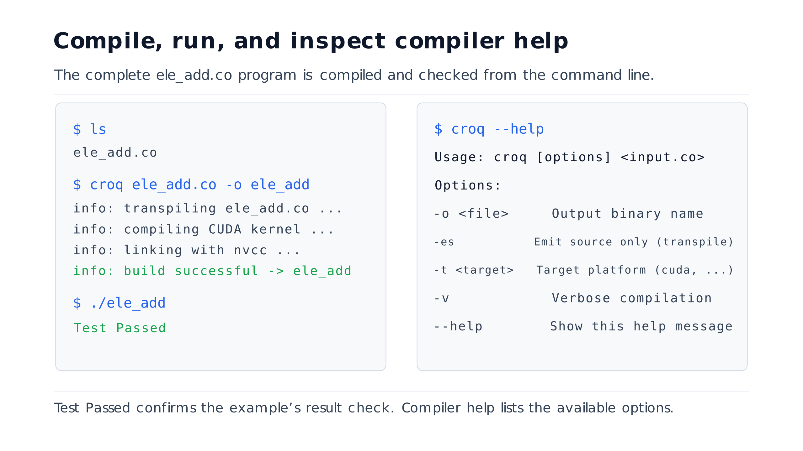
成功运行 ele_add 后，就可以用同样的命令形式编译其他 .co 文件。Croqtile 先生成目标源码，再调用目标工具链完成编译和链接。默认输出名为 a.out，使用 -o 可以指定名称。
下表列出了选择输出形式和检查编译过程时常用的选项：
| 选项 | 作用 |
|---|---|
-o <file> |
指定输出文件名。 |
-t <platform> |
选择目标平台；用 --help-target 查看支持的目标。 |
-es |
只生成目标源码，不进行后续编译。 |
-E |
只输出预处理后的 Croqtile 源码。 |
-c |
编译为目标文件，不链接。 |
-S |
生成汇编代码，需要目标工具链支持。 |
-gs |
生成用于后续编译和执行的脚本。 |
-v / --verbose |
显示编译器调用的外部命令。 |
--help / --help-hidden |
查看常规或高级编译选项。 |
例如，需要检查生成的目标源码或预处理结果时，可以让流程在相应阶段停止：
croq -t target -es ele_add.co -o ele_add.target.cppcroq -E ele_add.cocroq --help将 target 替换为 croq --help-target 列出的目标名称。可用的输出形式取决于所选工具链；需要查看实际编译命令时，使用 -v。更多诊断方法见 1.4 节。
上面的命令用于编译自己的 .co 程序。测试示例算子或修改编译器时，还可以使用仓库提供的 Makefile 命令：
make helpmake sample-testmake sample-test-operator OPERATOR=addmake help 列出可用目标，make sample-test 运行全部示例算子，OPERATOR=add 则只测试加法。其他可选算子包括 mul、relu、sigmoid、softmax 和 tanh。程序构建完成后，可以继续阅读 1.4 节，检查实际编译命令和程序的执行情况。
-v给编译命令加上 -v 或 --verbose，可以查看编译器调用的外部命令，包括所用的预处理器、代码生成器，以及具体的 c++ 调用：
croq kernel.co -v -o kernel如果怀疑编译器传给 c++ 的选项有误，或者需要查找生成文件的完整路径以便手动检查，这个选项会很有用。
-rtc编译器通过 -rtc 或 --runtime-check 提供逐级增强的运行时检查：
croq kernel.co -rtc=high -o kernel检查级别包括 none、entry（默认）、low、medium、high 和 all。每一级都包含前一级的检查。开发时使用 high 或 all，正式运行时使用 none。
debugger当 print 和 println 不足以定位问题时，可以使用 Croqtile 提供的调试运行时类型信息，让 debugger 能够查看 Croqtile 类型。
编译时使用 -g 启用调试符号：
croq kernel.co -g -o kernel_debug生成代码中包含用于描述 Croqtile 类型的 RTTI 结构体：
| Croqtile 类型 | 调试器中的类型 | 字段 |
|---|---|---|
带形状张量（s32 [M, N]） |
croq::rtti::spanned<int, 2> |
.span.data[]：各维大小；.stride.data[]：步长；.data：数据指针 |
| 带范围的索引元组 | croq::rtti::bounded_ituple<N> |
.data[]：索引值；.ub[]：上界 |
| 整数元组 | croq::rtti::ituple<N> |
.data[]：整数值 |
| 多维形状 | croq::rtti::mdspan<N> |
.data[]：各维大小 |
debugger -q ./kernel_debug(gdb) break my_kernel(gdb) run(gdb) ptype __dbg_lhstype = struct croq::rtti::spanned<int, 2>(gdb) print __dbg_lhs.span.data[0]$1 = 32(gdb) print __dbg_lhs.span.data[1]$2 = 64(gdb) print __dbg_lhs.data != 0$3 = true变量名中的 __dbg_ 前缀由编译器生成，使 Croqtile 变量能够与生成的 C++ 中间变量一起出现在调试器中。
先根据现象选择检查方式。分块尺寸不对时，用 println! 在运行前查看形状；形状正确而数值不对时，只打印一个分块，或在可疑操作附近添加断言。流水线停住时，检查事件和迭代次数；矩阵结果呈规律性错位时，检查布局。若问题已缩小到地址或生命周期，再使用调试器。把临时输出放在预处理条件中，便于在正常构建时去掉：
#ifdef DEBUG_PRINT println("tile_k=", iv_k, " accum=", mc);#endifcroq kernel.co -DDEBUG_PRINT -o kernel # debug buildcroq kernel.co -o kernel # production buildMMA 路径出现错误结果时，先核对数据布局：操作数是行优先还是列优先，右侧矩阵在内存中是 [N, K] 还是 [K, N]。再检查分块索引，确认 .at 或 chunkat 选择了正确的 block_m、block_n 和 K 维切片。
常见问题包括实际数据布局与 mma.row.row 的声明不一致，或分块尺寸与 MMA 所需形状不匹配。使用带 swizzle 的装入方式时，布局不一致还可能产生规律性的错误，例如每隔十六个元素只有一个正确。记录错误位置的规律，有助于缩小排查范围。
修改流水线后，如果结果或执行行为异常，先检查事件的触发与等待顺序，以及生产者和消费者的循环次数。例如，两者应使用一致的 cdiv(K, TILE_K) 上界。如果缓冲阶段过少，消费者还可能频繁停在 wait full；确认这些安排后，再检查 MMA 的布局和索引。相关协调构造见后续章节。
| 工具 | 作用阶段 | 开销或行为 |
|---|---|---|
print! / println! |
编译时 | 不增加运行时开销 |
assert(expr, "msg") |
运行时 | 开销较低，条件不满足时终止执行 |
print / println |
运行时 | 打印可能串行执行，应限制输出范围 |
-rtc=high |
运行时 | 增加边界等检查 |
-v / --verbose |
编译过程 | 显示外部命令，不增加程序运行时开销 |
-g、调试器与 RTTI |
调试过程 | 提供符号和类型信息，性能取决于构建配置 |
这些工具观察的是同一程序的不同阶段。编译器输出说明 Croqtile 推导出了哪些形状和类型，运行时检查则暴露某次调用中的实际取值。构建失败时，详细模式能显示失败的外部命令，便于单独复现。构建成功与结果正确，需要分别确认。
小例子验证通过后，再把同样的方法用于需要修改的核函数。保留参考结果，每次调整程序的一处内容，先比较输出，再测量性能。这样出现回退时，才能把问题对应到具体修改。
程序运行成功后，继续阅读第 2 章“语言基础”，理解程序中各项构造的含义。如果已经熟悉语法，可以直接按需要查阅第 3 章“编程指南”。
本章通过简短的示例，帮助你读懂并编写 Croqtile 程序。先从完整程序的结构和各类函数的分工看起，再逐步加入形状、迭代、分块选择、数据搬运与协调。每个示例都说明新构造在程序中的作用，让你在具体的计算过程中理解它的写法。
先看一个最小的加法核函数。它接收两个形状相同的矩阵，为每个位置计算相加结果，再把输出返回给调用方。这个例子只使用函数声明、形状和并行索引，便于先建立对 Croqtile 程序的整体印象。
__co__ s32 [4, 8] ele_add(s32 [4, 8] lhs, s32 [4, 8] rhs) { s32 [lhs.span] output; parallel {i, j} by [4, 8] output.at(i, j) = lhs.at(i, j) + rhs.at(i, j); return output;}读这段程序时，可以先沿着“输入 → 分配输出 → 逐元素计算 → 返回结果”的顺序看。parallel {i, j} by [4, 8] 描述 32 份独立工作，每份工作只写一个输出位置；lhs.span 则让输出沿用输入形状。下一节会逐行解释这些写法，这里先看它们如何组成一个完整函数。 例如两个输入在位置 (1, 3) 的值分别为 2 和 5，输出同一位置就得到 7。函数对所有位置重复这条规则，不进行矩阵乘法，也不改变矩阵形状。
一个 .co 文件同时包含普通 C++ 代码和 Croqtile 代码。主机程序准备数据、调用核函数并使用结果；带 __co__ 前缀的函数描述计算与数据搬运，由 Croqtile 编译器翻译成目标代码。
普通 C++ 代码还可以包含设备辅助函数。因此，完整示例中常见三个区域：设备辅助函数、调用它的 __co__ 函数，以及主机侧的 main()。下面按这个顺序列出它们。
__device__ void device_function(...) { // High-performance device kernel implementation}// Tileflow program: orchestrating data movement__co__ void croqtile_function(...) { // ... croqtile code ... device_function(...); // ...}// Host program: typically runs on CPUvoid main() { // ... prepare data ... croqtile_function(...); // ...}程序从主机侧开始执行。主机代码使用普通 C++，负责准备输入、调用 Croqtile 函数并处理结果。
__co__ 函数构成 Tileflow 程序，负责组织并行工作和数据搬运。它将数据放到合适的缓冲区，安排设备端计算，并把结果交回调用方。
__device__ 辅助函数执行设备端计算。Croqtile 编译器主要翻译 __co__ 区域，普通 C++ 的主机代码和设备代码交给后续工具链处理。
提示： __device__ 主要用于在必要时复用特定硬件的函数，简化开发。对于 Croqtile 已提供较完善支持的硬件，通常直接使用语言提供的计算与数据搬运能力即可，无需通过设备辅助函数自行补充底层实现。
上一节已经看到完整的加法函数。现在把它拆开阅读：函数签名约定输入与输出，缓冲区声明准备结果空间，parallel 划分工作，最后由 return 交回结果。每一步都保留了形状信息，后面的索引和计算因此有了明确的依据。
先看函数签名。普通 C++ 函数的声明主要约定类型，Croqtile 还把数据形状写在参数和返回值中。这样，读者可以在进入函数体之前，先了解输入内容与预期的结果形状。
把签名从左向右读一遍：先用 __co__ 标明语言区域，再用 s32 [4, 8] 约定输出，最后看函数名及两个输入。这里两份输入和输出都是 4 × 8 的整数矩阵，因此进入函数体后，只需说明每个输出元素怎样得到。
__co__ s32 [4, 8] ele_add(s32 [4, 8] lhs, s32 [4, 8] rhs) {前缀 __co__ 标记 Croqtile 函数。s32 [4, 8] 把 32 位有符号整数元素与二维形状组合起来，表示四行八列。输入与返回值都采用 type [shape] name 的形式。编译器据此检查秩并推导索引范围；依赖调用方实际尺寸的约束，还可能需要运行时检查。
常见元素类型包括 s32、f16、bf16、f32，以及 f8_e4m3 和 f8_e5m2。本例使用 s32，便于观察逐元素加法的结果。
s32 [lhs.span] output;这一行声明输出张量。lhs.span 取出输入的完整形状，因此 output 也具有 [4, 8] 的形状。修改输入形状时，这条声明的输出形状会随之改变；本例中固定的函数签名和 parallel 范围仍需同步调整。
parallel {i, j} by [4, 8] output.at(i, j) = lhs.at(i, j) + rhs.at(i, j);语句 parallel {i, j} by [4, 8] 声明 32 个独立实例，每个实例负责一个元素位置。例如 (i, j) = (1, 3) 的实例读取两份输入的这一位置，再把和写入 output 的相同位置。不同实例的写入位置不重叠，也不依赖其他实例产生的结果，因此这些工作可以并行执行。
没有空间说明符时，由编译器选择实例到执行资源的映射。语句确定工作彼此独立，并不要求每个元素都对应一个物理线程，也不要求所有实例同时运行。
return output;返回结果的形状与元素类型必须符合函数签名。主机侧收到的 croq::spanned_data 拥有结果缓冲区，并携带形状信息，可通过 [i][j] 访问元素。
__co__ auto 返回类型若结果形状更适合在函数体中描述，可以使用 auto。对于 __co__ auto matmul(...)，编译器从 return output 所返回的缓冲区推导类型。返回值仍然有元素类型和形状，auto 只是省去了签名中重复的声明。若希望直接在接口中约定输出形状，则可以写出完整返回类型。
逐元素算术、标量矩阵乘法以及返回缓冲区的 MMA 核函数，都遵循相同的返回约定。函数内部怎样计算元素，并不影响这一规则。
核函数的参数带有形状，而主机侧常常只有数组或指针。调用前要先把数据地址与各维大小组合起来；调用结束后，则从带形状的结果对象中读取输出。下面沿着这次调用的输入和返回过程，说明这些包装对象的作用。
主机侧提供数据存储和形状信息。加法示例先创建两份拥有存储的缓冲区，填入数据，再将视图传给核函数。主机保留输入的所有权，调用结束后还可以用原始数据检查结果。
auto lhs = croq::make_spandata<croq::s32>(4, 8);auto rhs = croq::make_spandata<croq::s32>(4, 8);lhs.fill_random(-10, 10);rhs.fill_random(-10, 10);调用 croq::make_spandata<T>(dims...) 分配由对象拥有的主机缓冲区。模板参数选择元素类型，实参给出各维大小。随后调用 fill_random，在指定范围内初始化元素。
auto res = ele_add(lhs.view(), rhs.view());主机侧的调用形式与普通 C++ 函数调用相同。.view() 从 spanned_data 创建不拥有缓冲区的 spanned_view，供核函数访问输入；返回的 res 则拥有结果缓冲区。
main 最后逐个检查结果元素，验证核函数的计算是否正确。这个检查沿用相同的 (i, j) 位置，把两个原始输入的和与返回结果比较，从主机侧完成一次完整的准备输入、调用与验证的过程。
从一次调用来看，lhs.view() 与 rhs.view() 提供输入地址和形状，ele_add 使用这些视图完成计算，res 接收输出。视图只是访问原有存储的入口，因此准备输入的对象要在调用期间保持有效。
下面的主机代码使用相同的 make_spandata 和 .view() 调用方式。
int main() { auto lhs = croq::make_spandata<croq::s32>(128, 256); auto rhs = croq::make_spandata<croq::s32>(256, 256); lhs.fill_random(-10, 10); rhs.fill_random(-10, 10); auto res = matmul(lhs.view(), rhs.view()); for (size_t i = 0; i < res.shape()[0]; ++i) for (size_t j = 0; j < res.shape()[1]; ++j) { int ref = 0; for (size_t k = 0; k < lhs.shape()[1]; ++k) ref += lhs[i][k] * rhs[k][j]; croq_assert(ref == res[i][j], "values are not equal."); } std::cout << "Test Passed\n" << std::endl;}调用后，程序将每个结果元素与 C++ 参考计算比较；结果不一致时，断言会报错。
C++ 指针需要与维度信息一起包装成带形状的数据，再传入 Croqtile 函数。相关工具由 choreo.h 提供。
#include "choreo.h"void bar(const float* data, unsigned size) {}__co__ void foo(f32 mdspan<2> d) { parallel p by 6 { call bar(d, |d|); // Call the C++ function }}void foobar(float* a) { foo(croq::make_spanview<2>(a, {1, 2}));}make_spanview 创建输入视图，不复制底层数据。示例中，foo 的参数 d 使用 f32 mdspan<2> 描述形状；调用 bar 时，可以通过隐式转换传递底层数据，|d| 则给出元素总数。
标量值也可以在 C++ 与 Croqtile 之间传递；ituple 仅用于 Croqtile 函数内部。
Croqtile 函数的输入参数包括带形状数据和整数。
参数可以具名，也可以省略名字：
__co__ void foo(f32 [7] a, int) {...}本例的第二个参数没有名字，因此函数体无法引用它，但声明仍然合法。
普通指针或数组只描述存储，Croqtile 的带形状数据还记录各维度大小。调用前，需要把数据地址与形状组合起来。
可以使用 choreo.h 中的包装工具。Croqtile 编译环境会自动包含这个头文件。
__co__ void foo(f32 [7, 16] input, f32 [7, 16] output) {...}void entry(float * input, float* output) { // foo(input, output); <-- result in error since missing shape foo(croq::make_spanview<2>(input, {7, 16}), croq::make_spanview<2>(output, {7, 16}));}croq::make_spanview 以秩(rank)作为模板实参，接收数据指针和维度列表，生成 croq::spanned_view。它保存指针与形状，不拥有底层缓冲区。简化定义如下。
template <typename T, size_t Rank>class spanned_view { T* ptr; // typed pointer to the data size_t dims[Rank]; // ranked dimensions};维度也可以由运行时值提供：
__co__ void foo(f32 [7, 16] input) {...}void entry(float * input, float* output, int M, int N) { foo(croq::make_spanview<2>(input, {M, N})),}本例的 input 使用运行时形状。进入 Tileflow 程序时，系统检查它是否满足 M == 7 和 N == 16；不满足时会终止执行，以免继续使用不成立的形状假设。
输入的带形状数据引用原有缓冲区。把这个包装对象传入函数，不会复制整块输入数据。
带形状数据和整数都可以作为返回值；不返回结果时，使用 void。
除了显式声明返回类型，也可以让编译器推断：
__co__ auto foo() { f32 [7, 16] result; // ... return result;}这里，编译器根据 result 将 auto 推导为 f32 [7, 16]。当输出形状在函数体内推导时，这种写法可以避免修改推导式后还要同步修改返回声明。若固定返回形状是接口的一项要求，则适合显式声明类型。
主机侧收到的结果拥有自己的缓冲区，具有值语义，便于在调用结束后继续使用。
__co__ auto foo() { f32 [7, 16] output; // ... return output; // semantically copy}void entry() { auto result = foo(); // move the 'spanned_data' to caller // ...}示例中，output 作为结果返回，主机侧类型为 croq::spanned_data。实现通过返回值优化避免复制整块缓冲区。简化定义如下。
template <typename T, size_t Rank>class spanned_data { std::unique_ptr<T[]> ptr; // move only pointers size_t dims[Rank]; // ranked dimensions};spanned_view 只引用数据，spanned_data 则管理缓冲区的所有权。返回值优化允许在交付结果时省去数据复制。
主机侧可以用 .rank()、.shape() 查询结果形状，而不必依赖核函数内部的声明。
mdspan 加法示例用固定的 [4, 8] 描述矩阵，但实际程序的输出、临时缓冲区和分块形状往往来自输入。把形状当作可命名、可计算的信息，就能在修改输入时保留这些关系。下面从读取形状开始，再逐步介绍 mdspan 的声明、计算与未知维度。
span 与 span(i)成员 tensor.span 返回完整形状，tensor.span(i) 返回第 i 维的大小。矩阵乘法的输出行数来自左输入，列数来自右输入：
s32 [lhs.span(0), rhs.span(1)] output;这个例子从两个不同操作数取得结果尺寸，使输出声明与输入保持关联。需要匹配已搬运分块形状的暂存缓冲区，也可以用同样的方法声明。
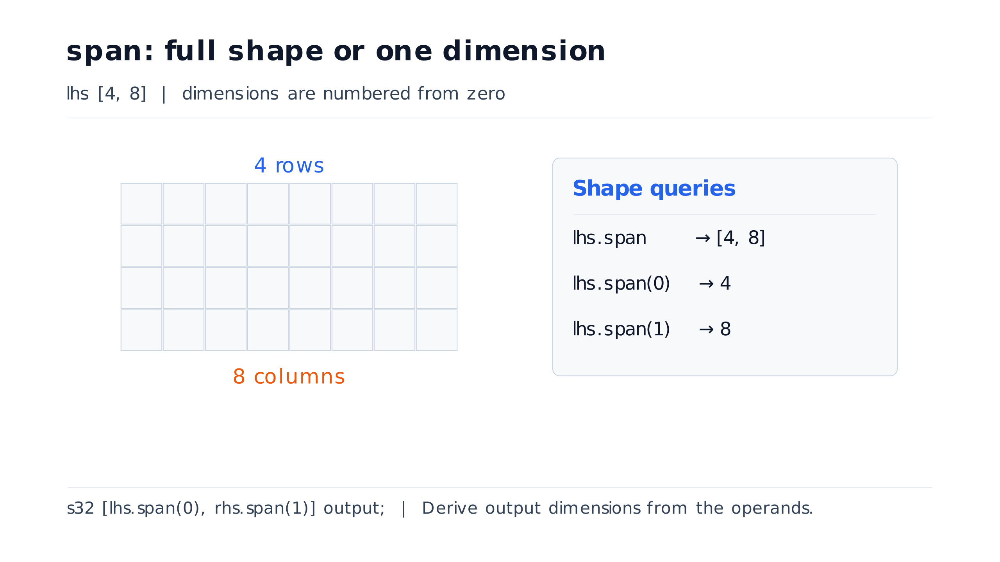
形状本身也可以命名并参与计算。下面先声明一个形状，再说明怎样从它推导出新的形状。
mdspan 定义形状关键字 mdspan 表示多维范围，用来描述形状各维的大小，本身不分配元素存储。例如 [7, 8] 的秩为 2，描述 56 个位置；这些位置采用 f32 还是 s32 元素，则是另一项选择。
显式声明的写法如下：
mdspan s0 : [7, 8]; // Defines a 2D shape with dimensions [7, 8]mdspan<1> s1 : [3]; // Defines a 1D shape with dimensions [3]: 引出初始化表达式，[] 中依次列出各维度大小。s0 的形状是 [7, 8]，s1 的形状是 [3]。
mdspan 后的尖括号可以指定秩，也就是维度数量。它必须与初始化表达式一致，否则编译器会报错。
mdspan<3> s2 : [64, 32]; // error: the rank of mdspan is inconsistent编译器也可以从初始化表达式推断类型，此时省略 mdspan：
s3 : [7, 8, 9]s3 的秩为 3，形状为 [7, 8, 9]。mdspan 必须在声明时初始化；省略类型只简化写法，不改变这项要求。
mdspan分块、填充和重塑都需要从已有形状推导新形状。例如，把每维大小除以分块因子，可以得到每块形状；给某维增加长度，则能描述填充后的区域。把这些关系写成形状表达式，修改原始尺寸时就不必逐处更新数字。
可以对维度做算术运算，再组合成新的形状：
shape : [128, 64]; // initial shapenew-shape0 : shape [(0) / 2, (1) / 4, 1]; // tile and reshape: [1, 64, 16]new-shape1 : shape [(1) + 2, (0) / 16]; // pad and reshape: [66, 8]new-shape0 将原形状的两个维度分别除以 2 和 4，并增加一个长度为 1 的维度。
同一计算也可以展开写成：
new-shape0: [shape(0) / 2, shape(1) / 4, 1];展开后，shape(0) 和 shape(1) 分别取出原形状的两个维度。两种写法表达的是同一组计算。
new-shape1 将原形状的第二个维度加 2，把它放到新形状的第一维；新形状的第二维由原形状的第一维除以 16 得到。
也可以直接对整个形状做运算或拼接：
shape : [32, 72]new-shape0 : shape; // [32, 72]new-shape1 : shape + 1; // [33, 73]new-shape2 : shape / 4; // [8, 18]new-shape3 : [shape, 6]; // [32, 72, 6]对整个形状进行算术运算时，运算逐维应用。例如 [128, 64] 加 1 得到 [129, 65]，并不会增加一个维度。下面两种表达式写的是同一项计算：
new-shape1 : shape + 1;
可展开为：
new-shape1 : shape [(0) + 1, (1) + 1];
在初始化表达式中放入一个 mdspan，则会拼接它的各个维度。例如：
new-shape3 : [shape, 6];
可展开为：
new-shape3 : shape [(0), (1), 6];
这些简写能保留形状之间的关系，减少重复列出维度的代码。
mdspan前面的形状使用固定数字。如果某个维度要由调用方在运行时提供，可以把对应位置写成 ?，保留其他已知维度：
__co__ auto foo(s32 [?, 1, 2] input) { ... }? 表示一个运行时提供的正整数维度：
void bar(int * data, int dim0) { foo(croq::make_spanview<3>(data, {dim0, 1, 2}));}本例第一维的大小来自调用方，可以由配置或上层框架确定。
如果只需使用某份输入的一维大小，匿名维度已经足够。但当两份输入的某个维度必须相等时，它没有为这项关系提供共同的名字。矩阵乘法恰好需要这样的约束：左操作数的列数必须等于右操作数的行数。
当多个参数需要引用同一个未知维度时，只写 ? 还不能直观表达它们的关系。符号维度给这些大小命名，让共享维度和形状约束出现在函数签名中：
__co__ auto Matmul(s32 [M, K] lhs, s32 [K, N] rhs) { int tile_m = 32, tile_m = 8, tile_k = 16; s32 [M / tile_m, K / tile_k] tiled_lhs; s32 [K / tile_k, N / tile_n] tiled_rhs; // ...}本例用 M、K、N 表达两个输入的形状。相同的名字明确了共享维度，便于阅读、维护和检查参数之间的关系。
例如 M=4、K=8、N=16 时，两个输入分别是 4 × 8 与 8 × 16，输出是 4 × 16。两个输入共用 K，表达的正是相乘维度必须一致这一关系；用同一个名字，可以避免把这项约束分散写在多处。
形状回答“数据有多大”，索引回答“当前处理哪里”。单个索引用整数表示，多维位置则可以用整数元组集中表达。进一步把索引和范围绑定后，后续的循环与分块选择就能同时使用当前位置和范围信息。
用于程序控制的标量包括整数和布尔值。int 是 32 位有符号整数，范围为 -2³¹ 到 2³¹-1，可用于声明变量和函数参数。
int a;__co__ int foo(int b);整数支持 C++ 风格的算术、移位和逻辑运算。程序控制使用 int，不提供其他位宽或无符号的控制整数类型。
bool 的运算以及它与整数之间的转换，采用 C++ 的对应规则。
整数元组按顺序保存多个整数，常用于多维索引。把行、列等坐标放在同一个元组中，可以整体传递或参与逐维计算；需要某个分量时，再按位置取出。元素顺序因此也是索引含义的一部分。
用花括号列出各个元素即可定义 ituple：
ituple index = {5, 4, 3, 2, 1}; // It defines a tuple of 5 elementsindex = {a, b}; // 'a' and 'b' are existing integersmdspan 与 i-tuple 上的运算mdspan 可以与整数元组按维度运算。下面用一组分块因子计算新的形状。
sp : [6, 8];tiling_factor = {3, 2};spn : sp / tiling_factor; // spn is defined as [2, 4];支持的运算包括：
mdspan / i-tuplemdspan + i-tuplemdspan % i-tuplemdspan * i-tuplemdspan - i-tuple元组写法将逐维计算集中在一个表达式中，更容易看出形状之间的关系。
整数描述单个索引或循环参数，整数元组描述多维索引。它们在声明时初始化，并可与形状一起用于后续检查。
Tileflow 程序使用整数来控制循环和索引。为此提供的控制类型是 32 位有符号整数 int。
可以像 C++ 一样声明并初始化整数：
int a = 1;也可以省略类型，由初始化表达式推断：
a = 1;一行中可以声明多个整数：
int a = 1, b = 2, c = 3;d = 4, e = 5;mdspan 不能直接作为函数参数；整数则可以在主机、Tileflow 程序和设备函数之间传递。
__co__ void foo(int a) { // ... call kernel(a, 3);}整数必须在声明时初始化，之后不能重新赋值：
int a; // error: declaration without initializationint b = 1;b = 3; // error: re-assignment这里的整数是不可变值。因此，声明中的 = 用于初始化，而不是修改已有变量。
ituple 将多个整数组合成一个元组，也称 i-tuple。显式声明如下：
ituple a = {1, 2, 3};b = {4, 5, 6}; // utilize the type inference把二维位置写成 idx = {1, 2} 后，idx(0) 取第一维的 1，idx(1) 取第二维的 2。花括号用于组成元组，圆括号用于选择其中的分量；元组本身只保存整数，后续用 with-in 才为它绑定范围。
类型可以由初始化表达式推断。区分省略类型的 ituple 和 mdspan 时，注意以下两点：
ituple 的初始化表达式跟在赋值号 = 之后（和整数一样），mdspan 则在 : 之后初始化；ituple 的初始化表达式用花括号括起，而不是 mdspan 使用的 []。也可以显式指定秩，让编译器检查元素个数：
ituple<3> a = {1, 2}; // error: inconsistent rank圆括号 () 取出元组中的一个元素，下标从 0 开始。也可以让整个元组参与计算，把几个坐标分量的变化写在同一表达式里：
a = {3, 4};b = {a(0), 1, a(1)}; // '()' to retrieve the element valuec = a {(0), (1), 2}; // syntax sugard = {a, 5, 6}; // concatenatee = a + 1; // addition is applied elementwiseituple 与整数、mdspan 一样，必须初始化且不能重新赋值。
元组常用于逐维修改形状：
shape : [7, 18, 28];tiling_factors = {1, 2, 4};tiled_shape : shape / tiling_factors;padded_shape : shape + {2, 0, 2};shape / tiling_factors 按各维的分块因子计算 tiled_shape，shape + {2, 0, 2} 则得到 padded_shape。按维度相加时，两者的秩必须一致。
shape : [7, 8, 9] + {1, 2}; // error: inconsistent rank一个控制值用整数表示，一组有顺序的值用 ituple 表示。形状 [7, 14] 描述范围，元组 {1, 2} 则可以表示位置或分块因子。两者的秩一致时，形状运算会把每个因子应用到对应维度。
整数和普通元组都必须初始化，之后不能重新赋值。这项限制针对用于控制和形状计算的名字。缓冲区元素则不同：加法示例会写入 output.at(i, j)，矩阵乘法也会更新累加器。区分这两种角色，就不会把不可变索引误当成可变累加器。
有了形状，还需要确定数据元素的类型，以及缓冲区放在哪里。下面把这几项合在一条声明中，并说明如何初始化数据。之后再按需选择 global、shared 或 local，让存储位置与使用它的并行工作相配合。
缓冲区声明需要同时给出元素类型和形状。形状确定缓冲区包含多少个位置，基础类型确定每个位置存储什么。下面的例子为半精度数据复用命名形状，为单精度数据直接写出形状。
ndims : [20, 15];f32 [10, 10] d0;f16 [ndims] d1;基本元素类型包括：
u8 / u16 / u32s8 / s16 / s32f16 / bf16 / f32s32 是带形状数据的元素类型；用于程序控制的 int 是独立的标量类型，两者用途不同。
分块可以由协作线程共同使用，也可以由单个线程独占。元素类型和形状无法表达这种区别，需要由存储说明符补充。
这些示例使用以下三种存储说明符：
globalsharedlocal存储说明符写在元素类型之前：
ndims : [20, 15];local f32 [10, 10] d0;shared f16 [ndims] d1;应根据使用缓冲区的代码选择存储说明符。默认位置取决于执行上下文和目标平台；若搬运操作或协作组需要特定的存储位置，应显式声明。
声明缓冲区时，需要给出元素类型与形状；需要指定存储位置时，再加上存储说明符。
下面声明一个带形状的缓冲区：
f32 [32, 16] data;它的形状为 [32, 16]，元素类型为 f32。形状也可以先单独命名：
shape : [72, 14];s32 [shape] data0; // using the named mdspan `shape`u32 [shape(0), shape(1)] data1; // same shape as the aboveu16 [shape + 6] data2; // shaped as [78, 20]s16 [shape, 8] data3; // shaped as [72, 14, 8]data0 使用名为 shape 的形状，并以 32 位整数为元素。[] 内还可以使用形状运算的结果。
元素类型也称基础类型，常见类型如下：
u8、u16、u32s8、s16、s32f16、bf16、f32u 和 s 分别表示无符号与有符号整数，数字表示位宽。f16 是半精度浮点，bf16 是脑浮点，常用于机器学习计算。
s32 用于声明数据元素，int 用于程序控制。虽然位宽相同，它们的声明方式不同：
s32 a; // error: the fundamental type can not be used for variable definition alone单独用 s32 声明控制变量会导致编译失败；它不能替代 int，两者也不能按控制整数的方式转换。
要明确缓冲区的存储位置，可以加上说明符：
global f32 [32, 7, 2] a;shared u8 [512, 144] b;local u8 [72, 1024] c;存储位置由编译模式和目标平台约定决定。在这里的主机与设备协同场景中，未标注的缓冲区使用主机存储；设备侧存储位置则显式指定。
global：指设备的全局存储。shared：指设备块的共享存储。local：指线程私有存储。不同平台的含义和声明约束可能不同，应结合当前编译环境使用。
缓冲区可以在声明时初始化：
local s32 [17, 6] b1 {0}; // elements are initialized to 0shared f32 [128, 16] b2 {3.14f}; // elements are initialized to 3.14f变量名后的括号给出初始值。本例的初始化方式把所有元素设为同一个值，适合准备清零的输出或临时缓冲区。读取声明时，可以依次看存储说明符、元素类型、形状，再看名称后的初始化表达式。
第一条声明把线程私有的 s32 缓冲区初始化为 0；第二条把共享的 f32 缓冲区初始化为 3.14。花括号中的单个值会应用到所有元素。改变存储说明符不会改变初始化规则，但会改变哪些执行实例共享这份数据。
带形状数据可以作为函数参数或返回值：
__co__ f16 [7, 8] foo(f32 [16, 17, 5] input) {...}参数与返回值的声明类似数据声明，但这里不能附带存储说明符或初始化表达式，也不能对已有 mdspan 直接做运算。
参数的 .span 返回它的形状，可以用来声明同形状的缓冲区：
__co__ auto foo(f32 [16, 17, 5] input) { f32 [input.span / {4, 1, 5} ] buffer; // declare a buffer with tiled shape // ...}声明确定元素类型、形状与存储位置，初始化表达式给出初始内容。掌握这些写法后，就可以为并行工作准备相应的缓冲区。
global：全局存储声明中的 global 把缓冲区放入目标平台的全局存储，适合需要超出单个线程或协作块访问范围的数据。选择存储位置并不等于初始化内容，也不会自动把已有数据搬入其中：
global f32 [100, 200] matrix;shared：共享存储shared 缓冲区为块内线程提供共同的暂存区域。在分块矩阵乘法中，一个块可以装入一次操作数分块，再让多个线程读取。读取必须在装入完成后开始，下次装入也必须等到这些读取结束。
shared f32 [10, 10] tile_data;local：私有存储local 表示线程私有存储，适合不需要在线程间共享的小数组或临时数据：
local f16 [5] thread_local_data;省略说明符时，存储位置由目标平台和所在执行上下文决定。入门代码这样写很方便，但仅凭一个没有说明符的名字，无法判断哪些线程能共享其内容。追踪数据流时，应把声明与包围它的并行区域一起阅读。
f32 [100, 100] d0;选择 shared 或 local 时，将说明符写在元素类型之前：
local f32 [10, 10] d0; // Small data, local to the threadshared f16 [ndims] d1; // Intermediate data, shared between threads in a block下面把三种存储位置放在同一个示例中：
ndims : [20, 15];local f32 [10, 10] d0;shared f16 [ndims] d1;global f32 [100, 200] matrix;// Perform computations on these arrays, utilizing the appropriate storage spacedma.copy d0 => d1;dma.copy d1 => matrix;这些声明展示三种存储位置，复制语句示意它们之间的数据流向。要把这段示意写成实际搬运，需要选择形状兼容的源视图和目标视图，因为这里声明的完整数组大小不同。存储说明符只选择位置，并不会使不同形状的缓冲区可以相互替代。
parallel-by、with-in 与 foreach 加法中的各个输出位置互不依赖，因此可以交给 parallel；有前后依赖的累加或逐块处理，则需要按顺序迭代。with-in 负责定义有界索引，foreach 负责遍历它。阅读下面的例子时，先判断工作能否独立执行，再选择对应的构造。
阅读并行代码时，先区分两个问题：哪些工作彼此独立，以及这些工作映射到哪里。
parallel：声明彼此独立、可以并行执行的工作。: block、: thread、: group：指定并行轴的执行位置。foreach 表示顺序迭代，适合累加、归约或有前后依赖的处理；parallel 表示独立的工作实例。
parallel {px, py} by [8, 16] : block foreach {tile_k} in [16] // sequential -- K-dimension loop parallel {qx, qy} by [16, 16] : thread // concurrent -- mapped to threads foreach k in [16] // sequential -- inner accumulation output += lhs * rhs;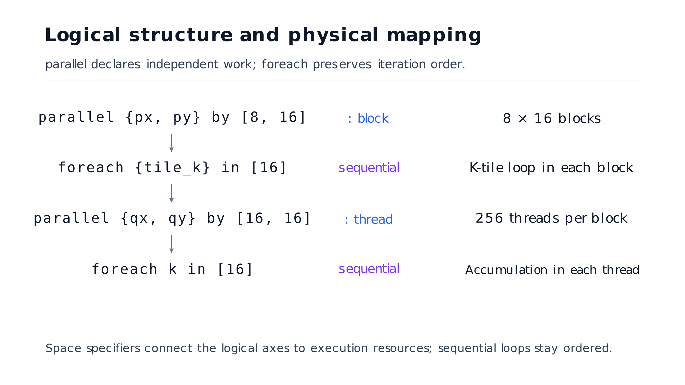
未写空间说明符时，由编译器选择默认映射；需要明确控制时，再标注 : block、: thread 等说明符。
parallel 和 foreach 都可以使用多维索引。确定外层与内层范围后，组合运算符 # 将它们的坐标连接成完整张量中的位置。范围参与这项计算，因此修改迭代划分时，分块选择也会随之改变。
: block——并行块parallel {px, py} by [8, 16] : block这里声明 8 × 16 的网格，共 128 个块。每个块都应能独立完成分配给自己的输出分块；这个示例没有提供块间通信或同步协议。
本例输出形状为 [128, 256]，每块处理 [16, 16]，因此网格大小为 128/16 × 256/16 = 8 × 16。
: thread——块内线程parallel {qx, qy} by [16, 16] : thread这一层在每个外层块内组织 16 × 16，共 256 个线程。
分块内的逐元素工作可以在这一层展开。
块级和线程级工作可以嵌套声明：
parallel {px, py} by [8, 16] : block { parallel {qx, qy} by [16, 16] : thread { // 128 blocks x 256 threads = 32,768 threads total }}外层划分块网格，内层划分块内线程。px, py 表示同一并行层次中的两个坐标轴。
with tile_k in 16语句 with tile_k in 16 为 tile_k 绑定 0 到 15 的范围，上界为 #tile_k = 16，但它本身不会把语句体执行 16 次。遍历由后续的 foreach tile_k 完成。将绑定与循环分开后，流水线就可以先在循环外选择第 0 块，再遍历其余分块。
foreach tile_k(1:)：切片迭代范围表达式 (1:) 从索引 1 开始，保留原有的排他上界。共有 16 块时，它遍历 1 到 15。若前序阶段已装入第 0 块，循环就只需发起其余分块的装入，同时计算上一块；最后装入的一块留到循环结束后处理。
parallel-by 块parallel-by 用同一段代码描述多个独立工作实例。每个实例通过不同的索引处理自己的数据。
基本形式是在 parallel ... by ... 后写出代码块：
parallel p by 6 { // SPMD code}本例包含 6 个实例，p 分别取 0 到 5。可以把它理解为 6 次彼此独立的迭代，执行先后顺序不固定。
p 的取值范围为 [0, 6)，因此称为有界整数。分块选择等操作会同时使用它的当前值和范围。
在这个六实例例子中，p=1 是当前工作的编号，而 #p=6 是整个轴的范围。当前编号会随实例变化，范围保持不变；分块操作正是利用这两项信息，同时决定取哪一块以及每块有多大。
with-in 块与 where 子句with-in 将一个索引元组与形状范围绑定：
with index in [10, 10] { // index is ituple with 2 elements}index 包含两个元素，也可以分别给元素命名：
with {x, y} in [10, 10] {...}元组本身和各个元素可以同时命名：
with index = {x, y} in [10, 10] {...}这里的 index 是有界整数元组。
with-in 只声明有界索引，不启动并行工作。需要遍历这些索引时，再使用 foreach。
可以把 with index in [2, 3] 看成先准备一个两维索引：第一维可取 0、1，第二维可取 0、1、2。声明本身没有遍历这六个位置，进入其中的 foreach index 后，循环体才会依次执行。
where 可以声明索引之间的对应关系：
with {m, n} in [M, N], {n_p, k} in [N_P, K] where n_p <-> n { // matmul implements with m,n,K. n_p is no long useful.}n <-> n_p 约定两个索引在迭代中对应同一取值，因此可以在需要该索引的位置使用相应名字。
foreach 块有界整数或元组定义后，可以用 foreach 遍历其范围。这里把范围声明与循环体分开：with-in 说明可用的位置，foreach 再按顺序逐个访问。循环体中的索引代表当前正在处理的位置：
with x in [10] { foreach x { // do something with each x }}每次迭代在循环体内为有界变量提供当前值，上界则保持不变。选择数据时使用当前值，推导分块数量时使用上界。若改为声明并行索引，则是给每个独立实例分配一个值，而不是按顺序遍历这些值。
沿着 [2, 3] 的范围展开时，先处理第一行的三个位置，再处理第二行的三个位置。每一次循环完成后才进入下一次，因此循环体可以引用前一次留下的状态；这也是它与独立并行工作的重要区别。
下面用具名索引声明并行工作：
parallel p by 6 { // SPMD (Single Program, Multiple Data) code}花括号中的代码由多个实例执行。本例的组成部分如下：
parallel：声明独立的工作实例。p：标识当前实例的有界索引。by 6：声明 6 个实例，索引范围为 0 到 5。如果代码不需要引用实例索引，可以省略变量名：
parallel by 2 { ... }这里仍有两个工作实例，但代码不能用省略的索引来区分数据位置。
可以嵌套声明不同的并行层次：
parallel p by 2 { // parallel-level-0 parallel q by 12 { // parallel-level-1 }}本例的两层范围分别为 2 和 12，共有 24 种索引组合。p 属于外层，q 属于内层，每个组合标识一份工作。
层次划分也决定代码在哪个范围内执行，以及哪些工作需要协调。组织代码时，应让协作关系与并行层次相匹配。
两层之间没有其他语句时，也可以合写为一条声明：
parallel p by 2, q by 12 { ... }逗号分隔的写法与前面的嵌套声明表达相同的两级并行。
同一并行层次可以用多个坐标轴描述；支持的轴数由目标平台决定：
parallel {px, py, pz} by [1, 1, 2] { // higher synchronization cost // ... parallel t_index = {qx, qy} by [3, 4] { // lower synchronization cost // ... } // ...}本例外层使用 px, py, pz 三个轴，内层使用 qx, qy 两个轴。内层索引还可以整体命名为 t_index，各轴的范围由对应的形状给出。
元组中第一个元素对应最低有效的并行轴。使用多维索引时，需要保持这一顺序与数据坐标的对应关系。
with-in 定义索引范围，foreach 按该范围依次迭代。两者一起描述循环的边界和循环体。
C++ 的循环由初值、条件和步进控制。Croqtile 的循环则围绕有界索引组织。
foreach 的基本形式如下：
foreach index { // loop body}如果 index 的上界为 6，它对应下面的 C++ 循环：
for (int index = 0; index < 6; ++index) { // loop body}有界索引把循环范围明确写在程序中，便于分块选择与数据搬运使用。
parallel-by 中的索引标识并行实例，不能再用 foreach 遍历。要声明循环索引，应使用 with-in。
with-in 可以定义有界整数或有界整数元组，不创建额外的执行实例：
with x in 128 { // 'x' is a bounded integer}with y in [512] { // 'y' is a bounded ituple}with index in [10, 10] { // 'index' is a bounded ituple}本例中，x 的范围是 128；y 是一维元组，范围为 [512]；index 是二维元组，范围为 [10, 10]。元组的元素也可以分别命名。
with {x, y} in [10, 10] { // x and y are explicitly named elements of the ituple}with index = {x, y} in [10, 10] { // 'x', 'y', and 'index' can be used within the block}多条声明可以用逗号合写：
with index = {x, y} in [10, 10], idx in [100, 10] { }index 与 idx 只在随后的 with-in 作用域内有效。
用 foreach 遍历已经定义的有界变量：
with index in [6] { foreach index { // Perform operations with each index }}本例迭代 6 次，索引从 0 递增到 5。
也可以遍历多维元组：
with index = {x, y} in [6, 17] { foreach index { }}对 index 的遍历对应下面的嵌套循环：
for (int x = 0; x < 6; ++x) for (int y = 0; y < 17; ++y) { }元组中的索引从左到右，对应循环从外到内的顺序。
foreach 后列出多个有界变量时，采用相同的嵌套规则：
with index = {x, y} in [6, 17], iv in [128] { foreach iv, index { }}下面的等价代码把 iv 放在最外层，再依次遍历 index 的两个维度。
for (int iv = 0; iv < 128; ++iv) for (int x = 0; x < 6; ++x) for (int y = 0; y < 17; ++y) { }foreach x in 128 { }foreach idx in [10, 20] { }foreach {y, z} in [8, 16] { }如果一个索引只用于紧接着的循环，可以直接在 foreach 后给出范围，省去单独的 with-in 声明。两种写法的区别在于声明位置，循环范围与遍历顺序不变：
with x in 128 { foreach x { }}with idx in [10, 20] { foreach idx { }}with {y, z} in [8, 16] { foreach y, z { }}需要跳过起始元素、提前结束或按步长迭代时，可以在有界整数后附加范围表达式：
with {x, y} in [6, 17] { foreach x, y(1::) { }}y(1::) 对应下面的循环：
for (int x = 0; x < 6; ++x) for (int y = 1; y < 17; ++y) { }循环从 1 开始。范围表达式的三个字段分别表示下偏移、上偏移和步长：
bounded-variable(lower-offset:upper-offset:stride)它保留原有的索引范围，并调整实际遍历方式：
0。例如 y(1:-1:2) 对应 for (y = 0 + 1; y < 17 - 1; y += 2)。省略字段时，下偏移和上偏移默认为 0，步长默认为 1。
若原范围为 17，先去掉开头的索引 0 和末尾的索引 16，再按步长 2 遍历，就得到 1、3、5、7、9、11、13、15。中间的 -1 是相对于范围上界的偏移，读切片时应先确定原范围，再计算实际端点。
范围表达式适用于有界整数，不能直接用于有界整数元组。
有界索引给出循环范围，范围表达式调整实际遍历的起点、终点与步长。
跳过已预先处理的分块等写法，会在 3.6.2 节的多缓冲模式中使用。
chunkat、subspan 与 view/from 并行或循环索引确定了当前的工作位置，下一步是选出它要处理的数据区域。规则等分时，可以让有界索引同时提供分块数量和分块坐标；需要固定窗口或显式偏移时，则直接写出区域大小与位置。这一节比较这些写法，并说明怎样把块内坐标还原成全局坐标。
chunkat(...)：等分lhs.chunkat(tr, tc)表达式 chunkat 根据对应索引的上界划分各维。输入为 [64, 128]、并行声明为 parallel {tr, tc} by [4, 8] 时，选中的分块大小是 [16, 16]。tr 和 tc 的当前值决定选哪块，上界决定块有多大。
已有并行或循环索引明确了分块方式时，可以用 chunkat 选取当前分块。本例中，lhs 的形状为 [64, 128]，tr、tc 的范围分别为 4、8，所以每块为 [16, 16]。索引当前值再决定选中哪一块。
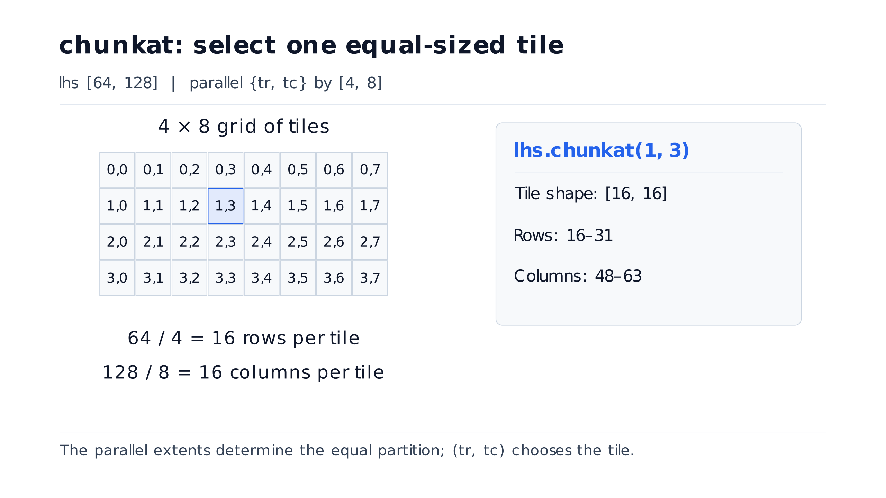
subspan(...).at(...)：指定分块形状与坐标lhs.subspan(64, 64).at(block_m, iv_k)表达式 subspan 显式给出分块尺寸，.at(...) 给出分块坐标。对于 [16, 16] 分块，坐标 (2, 3) 的元素起点是 (32, 48)。分块大小由算法固定选择，而不是从并行实例数推导时，适合使用这种形式。
与 chunkat 不同，这里先用 subspan 明确写出每块的形状，再用 at 给出分块网格中的坐标。坐标表示“第几块”，因此对应的元素偏移要乘以各维的分块大小。
view(...).from(...)：指定区域形状与元素偏移lhs.view(TILE_M, TILE_K).from(offset_m, offset_k)形式 view(...).from(...) 为窗口给出显式形状和按元素计量的起点。从 (37, 50) 开始的 [16, 16] 窗口保留这个起点，不会将其取整到最近的分块边界。
起始位置以元素偏移给出，或访问区域不适合规则等分时，可以使用 view(...).from(...)。view 确定窗口大小，from 确定它从哪个元素开始；窗口位置因此不必落在分块网格的整数坐标上。
三种写法分别适用于：
chunkat(...)：由有界索引确定等分方式和分块坐标。subspan(...).at(...)：显式给出分块形状与分块坐标。view(...).from(...)：显式给出区域形状与起始元素偏移。outer # inneroutput.at(tr # i, tc # j)中缀 # 将外层分块坐标和块内坐标组合成原张量中的坐标。
对于外层分块索引 tr 和块内索引 i，tr # i 的值为 tr * #i + i。每块有 16 行时，第 2 块的块内第 5 行对应全局第 37 行。组合后的上界是两个上界的乘积。内层上界决定步幅，因此操作数顺序不能交换。
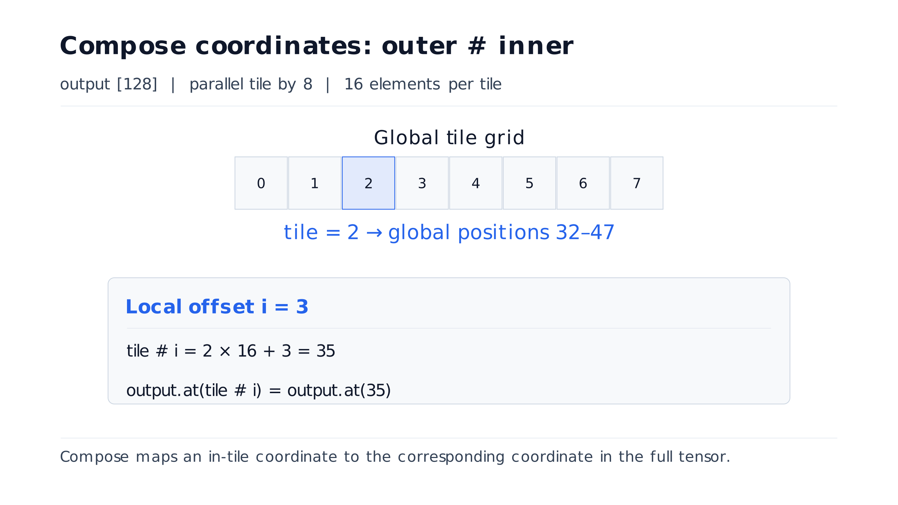
#nameforeach i in [128 / #tile]前缀 #tile 返回 tile 的范围。声明为 parallel tile by 8 时，#tile 就是 8。
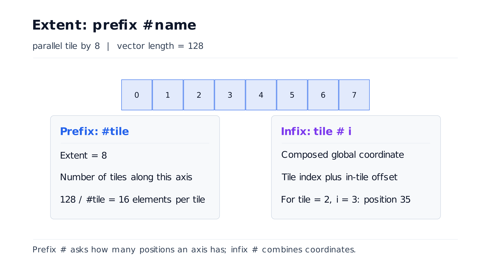
chunkat 表达式从已有带形状数据中选择视图。每个有界参数提供两项信息：上界决定分块数量，当前值选择其中一块。选择视图本身不搬运元素，实际搬运由外层 DMA 语句执行。
global f32 [6, 10, 100] data;parallel p by 6 { with index = {x, y} in [10, 10] { // for every data move, the stride into 'data' is // stride = p*1000 + x * 100 + y * 10 // // for each chunk, the dimensioned size for the movement is {1, 1, 10} f = dma.copy data.chunkat(p, index) => local; }}本例输入形状为 [6, 10, 100]，索引范围把它划为 6 × 10 × 10 个分块。每块在最后一维包含 10 个连续元素，并由搬运语句送入局部存储。
在 DMA 语句中，chunkat 直接描述要搬运的分块，减少手工计算地址偏移的工作。
有界变量同时包含当前索引和范围。循环使用索引，分块与缓冲区声明则常常需要它的上界。
在有界变量前加 # 可以取出上界：
with size in [32] { local u8 [#size, 16] a; // buffer shape: [32, 16] local u8 [size, 16] b; // error in shape: [0, 16]}#size 给出范围 [32, 16]，可以用于声明缓冲区 a。size 本身是当前索引，不能在这里替代范围。
chunkat 表达式对数据分块搬运可以使用整个缓冲区，但分块算法通常只需要当前实例负责的区域。把 chunkat 放在源表达式中，就能直接描述这片区域：
__co__ void foo(f32 [36] input) { parallel p by 6 { dma.copy input.chunkat(p) => shared; }}.chunkat(...) 根据有界索引选取当前分块，可以理解为先按范围分块，再按当前索引选取。
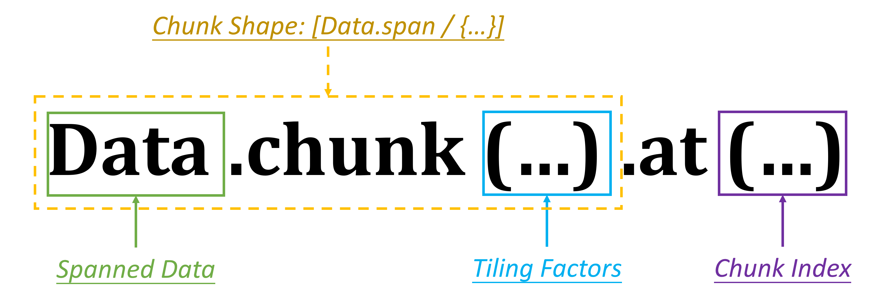
input.chunkat(p) 对应 input.chunk(#p).at(p)，各部分的作用如下：
input：要分块的数据。#p：分块因子。本例为 6，将输入分成 6 块。.chunk(#p)：确定每块形状，本例为 [6]。.at(p)：选择当前块。例如 p == 1 时选择元素 [6, 12)，p == 5 时选择 [30, 36)。chunkat 把分块因子与分块索引放在同一表达式中，避免分别维护两组信息。
多个有界变量可以一起指定分块：
__co__ void foo(f32 [36, 14, 8] input) { parallel p by 6 { with index in [7, 4] { foreach index { dma.copy input.chunkat(p, index) => shared; } } }}本例将 p 与二维元组 index 组合起来。各维范围为 6、7、4，所以 [36, 14, 8] 的输入被划为 [6, 2, 2] 的小块。
外层 6 个并行实例各处理一个 [6, 14, 8] 区域，内部再迭代 7 × 4 次，每次把一个 [6, 2, 2] 分块搬入 shared。
同一组范围现在同时描述迭代空间与所选数据。划分改变时，编译器从这些范围推导新的分块尺寸。检查搬运时，可以先将输入形状除以上界，得到分块大小，再把分块坐标乘以相应尺寸，还原元素起点。
chunkat 用有界索引选取分块，既可用于 DMA 的源，也可用于目的区域。
3.6.1 节将分块、迭代与搬运组合成完整示例。
选出分块后，程序常常需要把它送到计算所用的存储位置。DMA 语句描述这段数据从哪里来、到哪里去；期值让后续代码引用搬运结果。先看同步搬运怎样接上计算，再加入异步形式，明确数据何时可以使用。
分块搬运使用统一的基本形式：
future = engine.operation.modifiers source => destination;各部分含义如下：
| 组成部分 | 含义 |
|---|---|
future |
可选的传输结果句柄。用 future.data 访问已搬运分块，用 future.span 查询其形状。 |
operation |
copy、transp<...> 或 pad<...>。 |
modifiers |
可选标志，如 .async、.zfill 或 .swiz<N>。 |
source => destination |
源区域与目的存储位置或区域。 |
最简单的拷贝示例如下：
f = dma.copy input.chunkat(blk) => shared;g = dma.transp<1, 0> matrix => local;h = dma.pad<{2, 1}, {3, 2}, {0, 0}, 0> tile => shared;沿着箭头阅读，input 是要搬运的区域，shared 指定目的存储，f 为传输结果命名。同步语句完成后，可以通过 f.data 访问目的数据；因此后续计算使用的是搬运后的缓冲区。
搬运对象是带形状的数据区域，可以一次描述整个分块的传输。=> 左侧写源区域，右侧写目的区域或存储位置；目的只写 shared 时，编译器根据源形状准备缓冲区，后续代码可以通过期值引用它。
__co__ s32 [64, 128] tiled_add_2d(s32 [64, 128] lhs, s32 [64, 128] rhs) { s32 [lhs.span] output; parallel {tr, tc} by [4, 8] { lhs_load = dma.copy lhs.chunkat(tr, tc) => shared; rhs_load = dma.copy rhs.chunkat(tr, tc) => shared; foreach {i, j} in lhs_load.span output.at(tr # i, tc # j) = lhs_load.data.at(i, j) + rhs_load.data.at(i, j); } return output;}下面仍计算逐元素加法，先把输入分块搬入共享存储：
chunkat(tr, tc) 选择输入分块。dma.copy ... => shared 将分块搬入共享缓冲区。tr # i 与 tc # j 将块内坐标组合成输出坐标。程序依次选择分块、搬入缓冲区，再对其中的元素计算。两个输入的同一分块分别由 lhs_load 和 rhs_load 引用；内部循环使用搬运后的形状遍历元素，最后把块内索引组合成原输出中的位置。
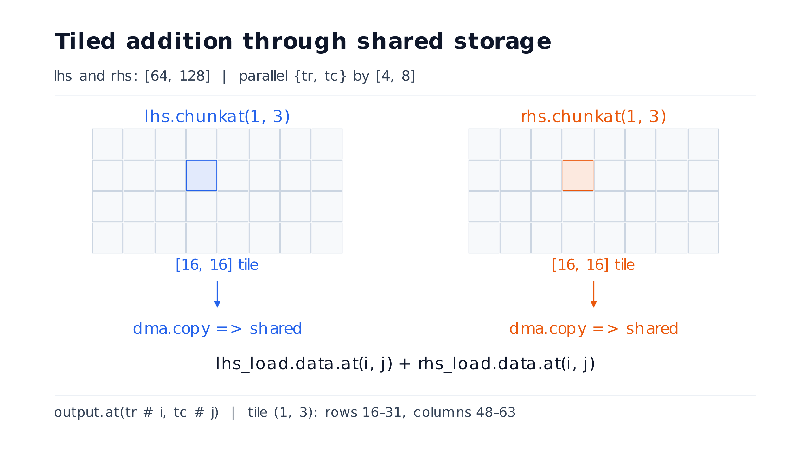
.data 与 .spanDMA 传输可以返回一个期值句柄：
f = dma.copy input => shared;它提供两个成员：
f.data：传输的目的缓冲区。f.span：目的缓冲区的形状。使用方式如下：
f = dma.copy input => shared;foreach idx in [f.span] output.at(idx) = f.data.at(idx);即使拷贝是同步的，给结果命名也有用途：后续代码既能通过 .data 访问目的缓冲区，又能通过 .span 确定遍历范围。这样不必再单独维护一份缓冲区名称和形状。
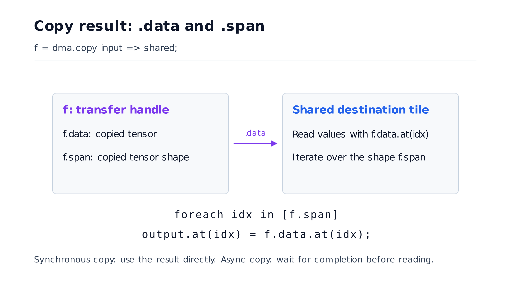
不加 .async 时，拷贝完成后才执行后续语句：
f = dma.copy input => shared;dma.copy f.data => output;加上 .async 后，可以在传输期间继续执行其他工作：
f = dma.copy.async input => shared;wait f;dma.copy f.data => output;异步拷贝使用相同的形式：
f = dma.copy.async input => shared;wait f;dma.copy f.data => output;期值可以在异步搬运尚未结束时就标识目标缓冲区。能够引用 f.data，并不意味着元素已经就绪。应在首次读取这些元素的操作之前执行 wait f，并在搬运过程中保持源和目标有效。
.async 发起传输，wait 确认完成；两者共同确定数据何时可以使用。
把同一条拷贝改为异步后，发起传输与读取结果之间就出现了一个可以安排其他工作的区间。wait f 结束这个区间，确保传输完成；它应放在第一次使用 f.data 之前，而不是简单地放在函数末尾。
dma.transp<...>fa = dma.transp<1, 0, 2> a => local;dma.copy fa.data => o;dma.transp 在搬运时置换维度，目的缓冲区使用变换后的布局。它把维度变换与数据搬运写在同一条语句里；读取代码时，既要看源和目的，也要看尖括号中约定的维度顺序。
dma.pad<...>f = dma.pad<{2, 1}, {3, 2}, {0, 0}, V>.async input => shared;wait f;dma.copy f.data => output;dma.pad 在搬运时填充目的区域。模板实参指定各维填充、内部间隔和填充值，适合需要显式边界值的情况。与普通拷贝相比，目的区域可能更大，后续计算应使用填充后得到的形状。
先确认普通拷贝的源与目的，再看操作名是否附加了变换。转置改变维度顺序，填充扩展目标区域；后续声明或计算需要使用变换后的形状，不能直接沿用原始输入的尺寸。
下面把迭代、分块选择和 DMA 放在同一个 Tileflow 程序中，观察数据从输入到输出的过程。
完整代码如下：
__co__ s32 [6, 17, 128] ele_add(s32 [6, 17, 128] lhs, s32 [6, 17, 128] rhs) { s32 [lhs.span] output; // Use same shape as lhs parallel p by 6 { with index in [17, 4] { // Tiling factors foreach index { lhs_load = dma.copy lhs.chunkat(p, index) => local; rhs_load = dma.copy rhs.chunkat(p, index) => local; local s32 [lhs_load.span] l1_out; // Call kernel with loaded data call kernel(lhs_load.data, rhs_load.data, l1_out, |lhs_load.span|); // Store result back to output dma.copy l1_out => output.chunkat(p, index); } } } return output;}__co__ 函数接收形状为 [6, 17, 128] 的两个 s32 输入，并声明同形状的输出。
parallel p by 6 声明 6 个独立实例，每个实例处理输入的一个外层区域。
with-in 将 index 绑定到范围 [17, 4]。它是二维有界整数元组，供内部循环使用。
foreach index 对应下面的嵌套循环：
for (int x = 0; x < 17; x++) // assume 'x' represents the 1st element of 'index' for (int y = 0; y < 4; y++) { ... } // and 'y' represents the 2nd element of 'index'循环中的 dma.copy 负责搬运当前分块：
lhs_load：传输结果句柄，用于引用目的缓冲区。dma.copy：拷贝数据，=> 左边是源，右边是目的。local：让编译器分配线程私有的目的缓冲区。lhs.chunkat(p, index)：根据范围 6、17、4 选取 [1, 1, 32] 分块，具体位置由索引当前值决定。例如索引 (1, 16, 2) 选中对应的分块。分块方式如下图所示。
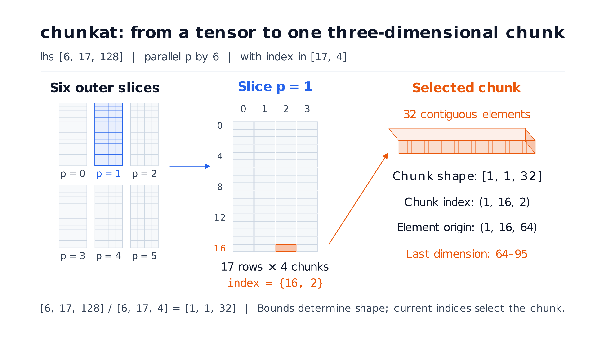
lhs 和 rhs 的对应分块分别搬入设备的 local 存储，供当前实例计算。
local s32 [lhs_load.span] l1_out; 声明同分块形状的输出缓冲区。call kernel 在其中完成计算，随后 DMA 将结果搬回主机侧输出区域。
每个实例迭代 17 × 4 次，每次处理一个 [1, 1, 32] 分块。全部实例完成后，函数把输出交给主机调用方。
DMA 语句同时描述要搬运的数据区域和传输结果，结果可以用期值命名。
异步 DMA 允许程序在传输期间继续执行后续代码；使用传输结果前，需要等待完成。
基本写法如下：
future = dma-op src-expr => dst-expr;= 左边的期值命名传输结果。同步传输也可以命名，以便引用目的数据；不需要引用时可以省略。
= 右边依次写搬运操作、源表达式和目的表达式。=> 表示从源到目的的数据流向。
异步复制是非阻塞的，搬运尚未完成时后续代码可以继续执行。同步复制则在语句执行结束前完成搬运。这些术语描述发起代码何时能够继续，并不表示可以安全读取未完成搬运的目标。
下面同时使用异步和同步拷贝：
f0 = dma.copy.async data0 => shared; // non-blockingf1 = dma.copy data1 => shared; // blocking...wait f0; // synchronizationf0 的拷贝在后台进行，程序继续执行；f1 的拷贝是同步的，需要等它完成才能继续。等待 f1 时，f0 的传输可能仍在进行。
wait f0; 等待对应传输完成。应在读取结果之前完成等待，并安排好所有异步传输的使用顺序。
数据表达式可以引用已有缓冲区。目的也可以直接写存储位置，由编译器分配相应缓冲区：
global f32 [32, 16] input;shared f32 [32, 16] output;dma.copy input => output; // Copy to a user-declared bufferdma.copy input => shared; // Same, but to a compiler-allocated buffer第二条语句以 shared 为目的，编译器按源形状分配缓冲区，效果与第一条显式声明的写法相同。
源和目标位置也可以使用分块表达式。例如 input.chunkat(p) 将复制限制在 p 选中的区域，显式目标视图则限制写入位置。第 2.8 节说明这些视图怎样形成。
期值命名传输结果。异步传输的期值还可以传给 wait，用来等待完成。
wait 可以同时等待多个异步期值；同步传输已经完成，不能再用其期值等待。
f0 = dma.copy.async input0 => shared;f1 = dma.copy.async input1 => shared;f2 = dma.copy input2 => shared;...wait f0, f1; // Multiple waitwait f2; // Error: cannot wait on a sync-dma同步传输返回期值，是为了让后续代码取得目的缓冲区。主要成员如下：
.span 取出 DMA 目的缓冲区的 mdspan。.data 取出 DMA 目的缓冲区的引用（带形状数据）。下面通过期值访问目的缓冲区：
f0 = dma.copy.async input0 => shared;f1 = dma.copy input2 => shared;...local f32 [f0.span] buffer;call device_kernel(f1.data, |f1.span|);.span 返回目的形状，.data 返回目的数据。示例中的元素计数运算还可以取得目的区域的总元素数。
搬运操作确定传输方式，期值命名结果，wait 明确异步数据何时就绪。读代码时，可以沿着这三个环节追踪数据流。
需要回顾分块区域的选择方式时，可查阅 2.8 节。
inthreads、事件与异步块 当不同执行实例分别负责搬运和计算时，仅仅启动这些工作还不够：消费者要等数据就绪，生产者也要知道缓冲区何时可以复用。下面先用 inthreads 选择执行实例，再用事件把异步区域的执行顺序连接起来，最后扩展到多个缓冲槽。
inthreads 从当前并行作用域中选择执行实例。
下面只让索引不大于 2 的实例执行选定区域：
__co__ void foo() { // sequential code // start of the SPMD code region parallel p by 6 { // some uniform code for all threads // ... inthreads (p <= 2) { // divergent code for thread 0, 1, 2 (thread-mask: 000111) } // threads are forced to be synchronized // some uniform code for all threads // ... } // end of the SPMD code region // sequential code}可以把程序中的执行范围分成以下几类：
parallel-by 内由多个实例执行的代码。inthreads 中仅由选定实例执行的代码。本例的 p <= 2 选择索引为 0、1、2 的实例；其余实例跳过该区域。普通 inthreads 用于按顺序执行的过滤区域，异步形式则使用 .async。
inthreads 从已有并行区域中选择实例，使用位置和条件需要满足以下约束：
parallel-by 创建的并行作用域中。编译器会检查条件表达式及其所在的并行作用域。
假设外层已有六个实例，筛选条件 p <= 2 只保留 0、1、2 三个执行者。它改变的是这一段代码由谁执行，外层的六实例结构仍然存在；需要其他实例使用它们准备的数据时，再用同步构造连接两段工作。
嵌套并行层次之间的语句，不一定由内层的所有实例重复执行：
__co__ void foo() { parallel p by 6 { // implicit masking: 'inthreads (q == 0) { ... } ' parallel q by 2 { // code here is for all threads } // implicit masking: 'inthreads (q == 0) { ... } ' }}本例中，位于外层 parallel p by 6、内层 parallel q by 2 之外的代码，每个外层实例只执行一份。可以理解为内层索引 q == 0 的实例执行它；进入内层块后，才由该层的全部实例执行。
异步区域可以独立推进，但对另一区域的依赖仍需显式表达。事件标记这项依赖：一个区域完成所需工作后触发事件，另一区域在使用结果前等待。事件传递就绪信息，数据仍保存在这些区域共用的缓冲区中。
事件用于协调异步代码区域的执行顺序。例如，一个区域准备数据，另一个区域要在准备完成后才能读取。生产者触发事件，消费者等待事件，就把这项先后关系直接写进了程序。
事件有 SET（已触发）和 UNSET（未触发）两种状态，声明时为 UNSET：
shared event e;shared 事件在并行作用域中供协作实例使用。也可以声明 global 或 local 事件，具体可见范围与约束由目标平台决定。
事件也可以声明为数组：
shared event e[4], e1;逗号分隔的声明可以同时定义数组 e 和单个事件 e1。
trigger 将事件置为 SET：
shared event e[4], e1;trigger e, e1;trigger e, e1 触发数组 e 的各个事件和单个事件 e1。
wait 等待事件触发。事件为 UNSET 时，当前实例阻塞；变为 SET 后，等待结束。
下面用事件让一个异步区域等待另一个区域：
parallel p by 2 { shared event e; // init 'e' to 'UNSET' inthreads.async (p == 1) { wait e; } // wait-thread // once unblocked, change 'e' to 'UNSET' inthreads.async (p == 0) { trigger e; } // trigger-thread // convert 'e' to 'SET' sync.shared; // sync point}索引 1 的区域先等待 e，索引 0 的区域触发它后，等待才能结束。两个区域随后到达 sync.shared 同步点。事件明确了触发操作必须先于等待结束的顺序。
等待完成后，事件自动恢复为 UNSET，可以用于下一次触发与等待。
可以按一次交接来读：消费者先遇到 wait e，数据尚未就绪就停在这里；生产者准备完成后执行 trigger e，消费者才继续。等待完成会让事件恢复未触发状态，下一次交接需要再次触发。
设想生产者装入分块，消费者使用分块计算。读取槽位前，消费者需要知道数据已经就绪；覆盖槽位前，生产者需要知道上一次读取已经结束。将这两个信号命名为 full 和 empty。若流水线包含多个可复用槽位，每个槽位就各自配备一对事件：
shared event full[STAGES], empty[STAGES];每个缓冲槽对应一组 full 和 empty 事件。stage = iv_k % STAGES 将循环索引映射到固定数量的槽位：生产者等待空槽，写完后触发 full；消费者等待数据就绪，读完后再触发 empty。这样，同一个缓冲区可以在后续迭代中复用。
循环开始前，需要先触发空槽对应的 empty 事件：
foreach {s} in [STAGES] { trigger empty[s];}事件初始为未触发状态。如果没有这一步，生产者第一次等待空槽时就无法继续。初始化表示这些槽位已经可以使用。
完整的双缓冲和多阶段流水线示例见 3.8.5 节。先理解事件的触发与等待关系，再阅读这些组合用法。
以两个槽位为例，迭代 0、1、2、3 依次使用槽位 0、1、0、1。复用槽位 0 之前，生产者先等待 empty[0]，确认上一次读取已完成；写入后触发 full[0]，把可读取的消息交给消费者。
使用事件时，应把每个 wait 与相应的 trigger 配对，并考虑等待完成后的自动复位。
每次等待都需要有可到达的触发操作；缓冲区循环复用时，还要安排好初始状态。
并非每个并行实例都需要执行相同的后续工作。运行时条件可以决定是否进入分支，yield 则让当前实例提前结束。下面分别说明这两种写法；存在同步操作时，还需要考虑退出的实例是否承担了其他工作正在等待的责任。
ifif 根据运行时条件决定是否执行代码。它适合检查当前索引或运行值，再决定是否处理这份工作；没有进入分支的实例会继续执行分支后的语句：
if (tile_id < total_tiles) { // body executes only when the condition is true}条件为真的实例执行分支，条件为假的实例跳过。在按线程组执行的平台上，组内条件不一致可能让不同路径依次执行，增加执行成本。
运行时边界检查、条件累加等判断使用 if，条件可以依赖当前分块坐标或输入值。若语句体含有需要协作组共同参与的操作，应让组内实例对条件作出一致判断。
条件尽量在同一执行组内保持一致。本例所面向的线程束包含 32 个线程。
一次条件判断只影响当前实例：条件为真就执行花括号中的代码，为假则跳到分支之后。阅读含多个分支的并行程序时，可以选定一个实例的索引，沿着它实际满足的条件追踪执行路径。
parallel 提前返回yield 让当前并行实例提前结束，生成对应的 return;。与跳过一个 if 分支不同，它会省去该实例的所有后续工作，适合已经完成任务或无需继续处理的实例：
parallel p by BLK_CNT: block { parallel q by THR_CNT : thread { if (cond) yield; ... }}
yield不会自动检查提前退出是否影响同步。使用前应确认其他实例仍能完成相应的等待与同步操作。
检查提前退出时，要对照区域中尚未执行的同步操作。实例若在触发事件前离开，消费者可能一直等待；若跳过必须共同参与的操作，也可能阻塞其他实例。负责同一分块的实例做出一致的尾部判断时，最容易确认这些同步责任是否仍能完成。
逐元素加法可以直接写算术表达式，矩阵乘法则通常围绕一个输出分块反复累加。MMA 语法把这个过程拆成四步：准备累加器、装入输入、执行乘加、写回结果。先掌握各步之间的数据关系，再到第 3 章阅读完整核函数。
矩阵乘法中，一个输出分块的结果通常来自多个 K 维切片。程序先准备累加器，再逐次装入对应的 A、B 分块，把每次乘加结果留在同一个累加器中，最后写回输出。MMA 把这个过程分为四步：初始化累加器、装入操作数、计算并累加、写回结果。
mma.fill 0.0：初始化累加器。mma.load：装入当前分块的操作数。mma.row.row mc, ma, mb：执行 C += A × B，将结果累加到 mc。mma.store mc, dst：写回结果。装入与计算步骤沿 K 维重复，每次把一个切片的结果累加到 mc；完成后再写回输出。底层的线程数据分配由编译器结合布局约定处理。
row.row 表示两个操作数采用行优先布局。其他组合包括 row.col、col.row 和 col.col。布局必须与输入数据一致，否则计算结果可能错误。
若 K 被分为两个切片，先初始化一次 mc，装入第一对操作数并累加，再装入第二对并累加到同一个 mc，最后才写回。装入句柄描述操作数片段，累加器则跨迭代保留部分结果，因此填充与写回应放在反复执行的装入和乘加过程之外。
Croqtile 嵌入在 C++ 中，因此可以与现有代码和配置配合使用。需要复用设备函数时使用 call，需要原样保留一段 C++ 时使用 __cpp__；宏和条件编译则用于共享常量、选择代码路径。下面分别说明这些接口作用在哪个阶段，以及使用时要注意的边界。
__cpp__：原样注入 C++__cpp__ 将字符串作为 C++ 源码插入到它在 Croqtile 函数中的位置。某个简短目标操作需要放在特定并行或异步区域内时，可以使用这种形式。插入内容必须在该作用域中合法，引用的名字也必须对目标编译器可见。Croqtile 原样传递这些内容，不解析或改写字符串内部的代码。
__cpp__("...")：适合简短代码。__cpp__(R"(...)")：原始字符串写法，适合包含引号或多行内容的代码。预处理在 Croqtile 解析之前进行。普通 C++ 和 __co__ 区域可以共用宏定义，便于统一维度与配置。
| 指令 | 作用 |
|---|---|
#define NAME value |
对象式宏：文本替换 |
#if / #elif / #else / #endif |
条件包含 |
#ifdef / #ifndef |
判断宏是否已定义的简写 |
#error message |
带消息强制编译时失败 |
预处理器不支持函数式宏。需要带参数的计算时，可以在普通 C++ 中使用辅助函数。
分块尺寸与阶段数可以集中定义为宏：
#define MATMUL_WARP_M 64#define MATMUL_WARP_N 128#define MATMUL_TILE_K 64#define MATMUL_WARP_K 16#define MATMUL_STAGES 4这些名字可以在 parallel、缓冲区声明、循环范围和主机侧检查中共同使用。
#error 做编译时断言#if MATMUL_SWIZ != (2 * MATMUL_TILE_K)#error "MATMUL_SWIZ must equal 2 * MATMUL_TILE_K for f16 kernel"#endif#if MATMUL_WARP_M != 64#endif预处理器在解析 Croqtile 函数前求值这一条件。配置常量不兼容时，构建便会停止并显示给定消息。这适合检查配置宏之间的关系；若属性取决于运行时输入数据，则应使用运行时断言。
#define PATH0__co__ auto foo() { #ifdef PATH0 // path 0 code #else // path 1 code #endif}预处理器根据条件保留相应的代码分支。宏也可以从命令行定义，例如 croq kernel.co -DMATMUL_TILE_K=128。
Croqtile 函数可以调用设备辅助函数，但不能直接调用另一个 Croqtile 函数。
void bar() {...} // C++ kernel function__co__ void foo() { parallel p by 6 { call bar(); // Call the C++ function }}本例用 call bar() 调用 C++ 辅助函数 bar。设备调用的作用域和参数约束见本节后面的说明。
同一个配置常量经常同时用于主机分配和核函数声明。将它定义为对象式宏，可以让这些位置使用同一份配置。下面的例子说明，在 Croqtile 检查形状和类型之前，文本替换与条件编译怎样影响源码。
对象式宏执行文本替换，不接受参数：
#define M 256#define N 32#define K 64__co__ auto matmul(f32 [M, N] lhs, f32 [N, K] rhs) { /*...*/ }void foo() { croq::f32 a[M][K]; croq::f32 b[N][K]; // ... auto res = matmul(croq::make_spanview<2>(a, {M, K}), croq::make_spanview<2>(b, {N, K}));}本例的 M、N、K 在解析前被替换为 256、32、64，因此对应的形状是静态确定的。主机代码也使用相同的宏值。
带参数的函数式宏不受支持：
#define MAX(a, b) (((a) > (b)) ? (a) : (b))这个 MAX 定义不能按函数式宏使用。
例如先定义 M 为 256，后面声明中的 [M, N] 就会在解析前使用替换后的尺寸。主机侧准备输入时也使用同一个 M，可以让数据准备与核函数形状保持一致；修改常量后仍需检查其他维度关系。
注释可以使用 /*...*/ 或 //...。
条件编译支持 #if、#ifdef、#ifndef、#else 和 #endif 等指令：
#define PATH0// some host code__co__ auto foo() {#ifdef PATH0// some code related to PATH0#else// other code#endif}// host control#ifdef PATH0// ...#else// ...#endif同一个条件可以同时控制主机代码与 Croqtile 代码。
这里使用 Croqtile 预处理器支持的指令即可；其支持范围不等同于完整的 C 预处理器。
可以把条件编译看成先从多条候选源码路径中选出一条，再交给编译器解析。运行时 if 则是在程序执行时根据当前值选择路径；判断配置常量和判断实际数据时，应分别使用对应的构造。
设备辅助函数用于完成具体计算，Tileflow 程序负责在合适的执行位置调用它。
设备函数使用 call 调用。调用需要放在可以执行设备代码的并行区域中：Tileflow 程序先准备数据并选择执行位置，再把相应参数交给设备函数。它主要用于按需复用已有硬件函数；硬件支持完善时，通常直接使用 Croqtile 提供的能力。
call 的基本形式如下：
call func-name <optional-template-args> (arguments);函数名后可以附带尖括号中的模板实参，普通参数写在圆括号中，并用逗号分隔。
先对照设备函数的声明确认参数顺序，再看调用位于哪个并行区域。带形状数据作为元素指针传入后，设备函数无法仅从指针恢复各维大小，因此需要的尺寸应通过整数参数一并传递。
目标编译器检查被调函数是否存在，以及其签名是否接受生成的实参。Croqtile 不在转译时执行这些 C++ 检查。因此，调用错误可能指向生成源码，需要对照辅助函数声明与原始调用位置查看。
foo 中的调用位于并行区域内；mou 中的调用处于主机执行区域，不能直接调用设备函数。
__co__ void foo() { parallel p by 1 { call bar(); // ok }}__co__ void mou() { call bar(); // error: not able to call device function from host}设备调用可传递以下参数：
控制整数使用 int。可传递的浮点类型取决于目标平台，例如 float、double、half、bfp16 或 half8。
Tileflow 侧不进行这些浮点值的算术运算，而是把它们传给设备函数用于计算。
下面将几类参数传给设备辅助函数：
__device__ void bar(float *p, int m, int n) {}__device__ void foo(float *, int, unsigned, double, float) {}__co__ void foobar(f32 [M, 24] input, int N, float padding) { parallel p by 1 { shared f32 [14, 7] buffer; call bar(input.data, input.span(0), buffer.span(0)); call foo(buffer.data, N, 3, 3.14, padding); }}带形状数据传到设备函数时，参数是指向元素的指针，不再携带完整形状。例如 bar 的 float *p 对应 input.data；需要的维度另以整数参数传递。设备函数的声明应与这些参数类型匹配。
目标平台没有对应的原生类型时，可以使用 croq::f16、croq::bf16 等类型。
设备调用的接口由后续目标编译阶段检查。出现参数或类型错误时，需要结合生成的调用和设备函数声明定位问题。
读懂语法后，还需要确认形状推导和运行结果符合预期。编译时打印适合观察形状、范围与类型；运行时打印和断言则帮助检查实际执行。先根据要观察的信息选择时机，再限制输出范围，便于定位问题。
print! 与 println!：编译时检视print! 和 println! 在编译时输出信息，可用于查看形状、范围和类型。例如，修改分块因子后，可以先打印推导出的形状，确认尺寸关系成立，再运行程序检查数值结果：
__co__ void check_shapes(f32 [3, 2] b) { print!("shape of b: "); println!("b.span = ", b.span);}编译时得到如下输出：
shape of b: b.span = [3, 2]相邻字符串字面量会拼接，例如 "wor" "ld!" 等价于 "world!"。
修改分块尺寸后，可以先查看 input.span 或分块的 .span，确认编译器推导出的区域大小。这个检查回答的是“程序理解了怎样的形状”，实际元素是否算对，还要在运行时验证。
print 与 println：运行时设备输出__co__ void inspect(s32 [4, 8] data) { foreach i in [data.span] { println("element ", i, " = ", data.at(i)); }}运行时打印接受字符串和表达式，参数用逗号分隔。它适合观察实际执行中的索引或数据，与编译时检视互相补充。多个并行实例的输出顺序不固定，因此读取日志时需要结合实例索引辨认来源。
若只需检查一条执行路径，可以用索引条件限制打印：
parallel {px, py} by [8, 16] : block parallel {qx, qy} by [16, 16] : thread { // ... compute ... if (px == 0 && py == 0 && qx == 3 && qy == 5) { println("partial sum = ", accum); } }调试时可以用条件限制打印的实例，避免大量重复输出。
assert：运行时不变式检查assert 在运行时检查条件，不满足时输出消息并中止。适合把程序必须满足的假设写在使用位置附近，让失败信息直接指向相应索引、数据或执行阶段：
assert(stage < MATMUL_STAGES, "stage index out of bounds");可以用断言检查索引范围、指针有效性或其他必须成立的条件，以便尽早发现错误。
调试时先选一个实例输出索引和值，再在可疑操作附近写断言，检查当前数据是否满足预期。将输出限制到少量实例，可以把一次执行中的具体位置与源码对应起来，避免从大量并行日志中猜测来源。
下面把本章的常用写法集中列出，便于在编写程序时快速回看。表格中的构造已经在前面的示例中出现；如果记得作用但忘了写法，可以从这里查起，需要理解使用条件时再回到对应小节。
下面汇总数据搬运和分块选择的常用写法。
| 语法 | 含义 |
|---|---|
dma.copy.async ... |
启动非阻塞 DMA 传输。 |
wait f |
等待 f 对应的传输完成。 |
future.data |
访问已搬运分块。 |
future.span |
访问已搬运分块的形状。 |
dma.transp<...> |
搬运过程中置换维度。 |
dma.pad<...> |
搬运过程中填充，并显式给出填充值。 |
.zfill |
把不完整分块中的越界位置补零。 |
.swiz<N> |
选择共享内存重排布局。 |
chunkat(...) |
从规则分块中选出一个等分块。 |
subspan(...).at(...) |
按显式分块范围与分块坐标选取分块。 |
view(...).from(...) |
按显式范围与显式元素偏移选取分块。 |
tile # i |
把分块坐标与块内坐标合成为全局坐标。 |
#tile |
求 tile 轴的范围。 |
阅读搬运语句时，先确定所选区域和目标位置，再检查目标何时就绪。流水线中仍需回答这两个问题；额外缓冲区只是让不同分块能够同时处在这个过程的不同阶段。
| 语法 | 含义 |
|---|---|
parallel p by N |
N 个独立实例，索引为 0 至 N-1 |
parallel px, py by [M, N] |
同一并行层次中的两个坐标轴 |
parallel p by A, q by B |
逗号分隔的多个并行层次 （ p 与 q 对应不同并行层次） |
parallel q by N : thread |
映射到线程块内的线程 |
foreach index = m, n, k in [a, b, c] |
在 foreach 中对具名元组解构 |
lhs.span(0) |
取出张量形状的一个维度 |
p # m |
把外部分块索引 p 与内部偏移 m 合成为全局坐标 |
2.12 节概述 MMA 的计算步骤，3.7 节给出完整示例。
| 语法 | 含义 |
|---|---|
if (expr) ... |
按运行时条件选择执行 |
inthreads.async (condition) |
结构化并发区域：编译时划分线程 |
shared event name[N] |
声明 N 个同步令牌 |
trigger name |
发出条件已满足的信号 |
wait name |
阻塞直到相应的 trigger 触发 |
tile_id = tile_iter # block_id |
组合分块索引 |
int total_tiles = expr |
初始化一个控制整数 |
yield |
从 parallel 块提前返回 |
| 语法 | 含义 |
|---|---|
dma.copy.async src => dst |
非阻塞拷贝，立即返回 |
dma.any |
占位期值，尚无传输在途 |
swap(f0, f1) |
交换两个期值句柄，不拷贝数据 |
rotate(f0, f1, f2) |
轮转三个期值句柄 |
with tile_k in N ... |
绑定到范围为 N 的分块轴，作用域受限 |
foreach tile_k(1:) |
从索引 1 开始迭代 |
__co__ auto fn(...) |
由 return 语句推导返回类型 |
读完本章，你已了解 Croqtile 程序的基本结构，以及形状、迭代、分块、搬运和协调的常用写法。第 3 章进一步解释这些构造的语义、约束与设计理由；附录 A 可用于快速查阅语法。
本章按功能重新组织同一门语言，说明 Croqtile 程序的结构、类型系统、符号形状、并行性、分块选择、数据搬运、收缩与协调，以及背后的设计依据。完整核函数就放在它所演示的特性旁边，因此每一节也可独立阅读。
一个 .co 文件将应用程序与其中的并行工作放在同一份源码中。普通主机 C++ 准备输入并调用 __co__ 函数；后者描述并行工作，也可以调用设备辅助函数完成专门计算。理解每部分由哪个编译器处理，有助于代码集成和错误定位。
一个典型的 Croqtile 程序由几部分组成，具体取决于目标平台。
Croqtile 的编译过程通常包含三个主要步骤：预处理、转译和目标编译。
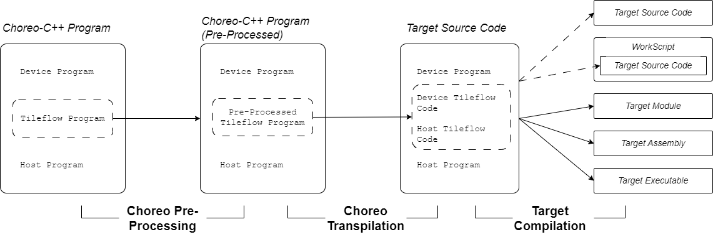
如图所示，预处理之后，Croqtile 立刻把 tileflow 程序 转译（也就是源到源编译）为目标代码，而用户提供的主机程序和设备程序保留原样。tileflow 程序被转译成主机源代码和设备源代码，这些统称 Croqtile 生成代码。随后，编译器把用户代码和 Croqtile 生成代码合并，执行目标编译。这个过程可以产出多种结果，比如转译后的源代码、工作流脚本、目标模块、目标汇编和可执行文件。
Croqtile 驱动完整的构建过程，其中的关键步骤是把 tileflow 程序转译成 Croqtile 生成代码。
Croqtile 编译有一个显著特点：同时支持两种模型：
上面的代码天然支持单源编译模型。但要支持分离源编译模型，Croqtile 要求用 __cok__ 块把设备程序包起来，如下所示：
__cok__ { void device_function(...) { ... }} // end of __cok____co__ void croqtile_function(...) { ... }void foo() { ... }__cok__ 标记需要在调用目标编译器前从主机代码中分离的设备代码。当目标平台分别编译主机与设备代码时，需要使用这一包装。源码仍可维护在一个 .co 文件中，由包装告诉构建过程在哪里拆分。
设备辅助函数接收调用方选取并暂存的数据，用目标语言完成计算。下面的加法辅助函数展示这条边界：Croqtile 安排分块与搬运，辅助函数则使用传入的指针和元素数量。
下面再次列出前面的设备辅助函数：
__device__ void kernel(int * a, int * b, int * c, int n) { for (int i = 0; i < n; ++i) c[i] = a[i] + b[i];}对于只支持分离源编程模型的目标平台，代码可能需要包在 __cok__ 块里。等价的写法如下：
__cok__ { extern "C" void kernel(int * a, int * b, int * c, int n) { for (int i = 0; i < n; ++i) c[i] = a[i] + b[i]; }} // end of __cok__这里 extern "C" 标注取代了目标平台使用的 __device__ 关键字，因为设备函数要求 C 链接。
设备程序遵循单程序多数据范式。主机与设备之间、以及设备内部各存储层次之间的数据搬运，由 Tileflow 程序统一编排；设备函数则负责具体计算。
在某些目标平台上，parallel-by 块不仅指定并行线程的数量，还划出了主机代码与设备代码的边界，这正是 Croqtile 管理异构性的方式。具体来说：
parallel-by 块之外的代码被转译为主机代码。__co__ void foo(...) { // Generate host code // ... parallel p by 6 { // Generate device code // ... } // Generate host code // ...}熟悉相关目标平台的读者会看出，这里正对应着 parallel-by 语句处发生的程序启动。Croqtile 用统一的单程序多数据并行模型把这些细节抽象掉，让开发者专心写算法，不必操心底层异构性。
这份参考覆盖 Croqtile 编程的方方面面：
__co__ 函数、主机侧 API 与 C++ 互操作。MDSpan、spanned data、符号维度与动态形状。chunkat 分块、重排与高级数据搬运模式。__cpp__ 内联块、宏与预处理器集成。到这里可以看清：Croqtile 程序由三部分组成，其中 tileflow 程序是核心，它在编译时被转译成目标源代码。调用链通常从主机到 tileflow 程序，再从 tileflow 程序到设备代码。
Croqtile 不仅把 DMA 操作抽象成更高层的语义，还把迭代和分块结合起来，因此代码既简洁又有表现力。
mdspan 与 ituple选择一个分块需要知道张量形状、各轴划分为多少块，以及当前块的坐标。Croqtile 用形状、元组和有界索引显式表示这些信息，让分块表达式保留原本分散在偏移计算中的关系。
带形状声明 s32 [128, 256] lhs 同时确定元素类型和秩。这里的尺寸是常量，编译器能在执行前求值，拒绝用三个坐标访问二维张量，并检查分块形状的兼容性。声明使用符号维度时，即使部分尺寸来自调用方，秩信息仍然保留。
span(i) 语法取出一个维度：lhs.span(0) 是 128，rhs.span(1) 是 256。简写 lhs.span 则复制整个形状。
ituple 将整数值组成元组。在 parallel {px, py} by [8, 16] 中，坐标还带有范围：当前值标识某个实例，上界描述整个网格。编译器可以化简上界及派生表达式，但并不是给所有实例确定同一个当前索引。依赖实际执行的索引计算仍在运行时进行。
第 2.4 和 2.5 节介绍具体声明。这里需要区分程序本身已知的信息与某次调用提供的信息。编译时检查使用前者，入口检查和运行时断言则处理依赖后者的约束。
它的目标是给日常编写高性能核函数的工程师减负。借助 Croqtile，编程过程更容易上手，工程师也能更轻松、更高效地优化这些关键环节。
Croqtile 是嵌入在 C++ 里的领域专用语言代码。Croqtile 编译器对 Croqtile 函数做源到源翻译，生成 C++ 代码，并隐式包含 choreo.h，让翻译后的代码能与其他 C++ 代码正常协作。下面的代码片段是一个例子。
// some C++ code__co__ void croqtile_function() { // croqtile code}// another C++ codevoid foo() { croqtile_function();}__co__ 前缀标识需要由 Croqtile 翻译的函数体。普通 C++ 通过声明的函数名调用它。面向主机的接口使用带形状的缓冲区包装对象，使调用同时携带尺寸和地址。
此外，Croqtile 引入了一些专用类型，用来保证 Croqtile 函数的实参与调用方之间的一致性。相关细节将在数据类型的讨论中说明。
Croqtile 引入四类基础类型：标量类型、带形状类型、整数元组类型（ituple 类型）和有界类型。它们分别服务于不同的用途。
mdspan。它对分块等操作很有用。四类之中，标量和 ituple 比较容易理解，因为它们对应现有通用编程语言里就有的要素；带形状类型和有界类型则是这个领域特有的。
带形状类型是一种复合类型，由基础类型和多维跨度（mdspan）类型组成。基础类型和 mdspan 都不是完整类型，也就是说，任一部分都不能单独声明带存储的数据。在 Croqtile 中，称它们为部分类型。
将类型分为两部分，是为了能单独操作 mdspan。机器学习数据通常按多维方式组织，程序员经常要把它切成更小的分块，让分块跨存储层次移动。因此，形状计算可以独立于元素类型进行。
部分类型必须组合成完整类型，才能声明带存储的多维数据。
与多数类型系统不同，mdspan 作为一种类型手段并不完整。称它为部分，是因为 Croqtile 程序不能把数据定义成 mdspan 类型，但 mdspan 本身可以单独定义。这样设计基于一个观察：循环分块只关心多维数据的形状。因此，Croqtile 允许程序员独立于基础类型操作 mdspan，从而简化形状计算。
与此同时，Croqtile 编译器可以对 mdspan 做类型检查，尽可能早地（在适用时早于执行）暴露代码错误。
在 Croqtile 中，mdspan 用 [ 和 ] 括起来，其中的维度上界用 , 分隔：
mdspan sp : [7, 8]; // defined a mdspan of 2-dimensionsmdspan<4> mds : [a, 3, 4, 1]; // 'a' is an existing integerd : [c, 4, 28]; // 'd' is not explicit annotated. Type is deduced.如上例所示，可以用 mdspan 部分类型关键字显式定义 mdspan，也可以选用 < > 括起的秩。还可以不加类型标注定义 mdspan，比如上面 d 的定义。（注意：mds 和 d 属于依赖类型，因为它们的类型取决于 a 和 b 的求值。程序员可以给 a、b 提供运行时值，但这样一来就要付出一些运行时检查的代价。）
对 C++ 程序员来说，可以把 mdspan 看成多维数组的特征描述，它描述的是多层范围。例如上例中的 sp 定义了两层范围，分别是 0 到 6 和 0 到 7。
定义好 mdspan 之后，可以用 () 运算符取出整数维度值。
sp : [7, 8];int b = sp(0) + sp(1); // 'b' equals to 15 (7 + 8)上例中，表达式 sp(0) 求出 mdspan sp 第一维的取值。维度值本质上是整数，可以直接参与整数算术。
于是就可以像下面这样，从已有的 mdspan 派生出新的 mdspan：
sp : [6, 8];spn : [1, sp(0)/2, sp(1)/4]; // define a new mdspan from the existing one.有了这个机制，在 Croqtile 代码里对多维跨度做分块更加方便。分块是高性能核函数中的常见操作，因此 Croqtile 提供了相应的语法糖：
sp : [6, 8];spn : sp [1, (0)/2, (1)/4]; // spn is defined as [1, 3, 2]这段代码和前面那段作用相同，但语法更简洁。这体现了 Croqtile 的一条设计理念：用简洁的代码表达常见操作。
命名 mdspan 必须在声明时初始化，之后不能修改。需要另一种形状时，应从已有形状派生新名字，使编译器能够保留并分析形状表达式之间的关系。
除了这种逐维度定义 mdspan 的方式，Croqtile 还支持其他定义方法；这些方法在 i-tuple 的讨论中介绍。
有界整数同时携带当前值和排他上界。在 parallel p by 6 中，可能的取值是 0 到 5，上界为 6。因此，分块选择既能确定 p 标识哪一块，也能确定总共有多少块。parallel-by 和 with-in 建立这种关联。
有界元组将同样的做法扩展到多个维度。每个分量有自己的上界，整个范围由 mdspan 描述。例如，范围为 [4, 8] 的元组能标识 32 个位置之一。第 2.7 节说明如何声明和遍历这些索引。
Croqtile 以嵌入 C++ 的领域专用语言表达单程序多数据程序，保留 C++ 风格的写法。它主要简化通过 DMA 跨存储层次搬运数据的底层细节，因此也被称为数据流编程语言。其目标是支持日常核函数开发，让开发者更专注于计算组织，减少重复的实现工作。
实际使用中的反馈，也有助于进一步改进这些构造。
在 Croqtile 中，mdspan 可以表示各维度的形状。mdspan 就是多维跨度，其中的元素是维度跨度，隐含着一个取值范围。
例如，mdspan [7, 14] 表示两个范围组成的一组：[0, 7) 和 [0, 14)。所以 mdspan 并不表示一组整数值。不过在某些场景里，把整数值组成一组确实有用：
这些情形促使 Croqtile 提供一种把整数值组成一组的类型。
有界元组为普通整数元组附加范围。例如，位置 {1, 2} 与范围 [4, 8] 结合后，既标识当前位置，也描述容纳它的空间。循环用范围确定迭代，chunkat 用范围推导划分。
tileflow 程序的主要任务，就是搬动大规模数据集来处理它们。在某些术语体系里，Croqtile 函数的输入和输出分别称为「输入数据」和「输出数据」，其余存储则称为「缓冲区」。从函数的视角看，这就在概念上分出了「外部」内存和「内部」内存。不过「数据」和「缓冲区」指的都是存储位置；在 Croqtile 中，两者都定型为带形状类型，表明它们是与形状关联的数据或缓冲区。
这两种情况都称为带形状数据。mdspan 描述形状，带形状对象则将形状、元素类型和存储访问组合起来。单独命名或推导一个形状，并不会复制数据。
在 Croqtile 函数内部分配的存储，生存期由 Croqtile 编译器管理，以便高效利用：只要生存期不重叠，编译器就尽量复用缓冲区。因此，开发者不必自行管理这些缓冲区。
自动分配不能替代同步。若异步搬运或计算仍在使用缓冲区，必须等它结束后才能覆盖或释放存储。流水线中的等待和完成操作明确了这些使用时段，使程序能够安全复用同一组槽位。
在 parallel-by 块中，紧跟 parallel 关键字定义的变量称为有界变量。具体来说：
这个术语表明，变量不只有值，还有确定的界。例如在语句 parallel p by 6 中，p 是有界整数，界为 [0, 6)，其中 6 是不含在内的上界。
并行索引的当前值标识执行实例，循环索引的当前值随 foreach 迭代变化。两者的上界分别来自 parallel-by 和 with-in 声明。
有界变量同时携带范围和当前值。对于 with-in 声明的索引，foreach 按以下规则提供当前值：
当前值：在 foreach 语句中，有界变量充当迭代变量，当前值由循环迭代决定；在 foreach 语句之外，其当前值恒为零。
上界值：由 with-in 或 parallel-by 语句指定。
foreach 结束后，with-in 索引恢复为循环外的值，不会像 C++ 循环变量那样保留终止值。并行索引遵循另一条规则，其值标识当前并行实例。下面的例子讨论顺序执行的 with-in 情形。
with x in 6 { // x's current value is 0 foreach x { // x's current value is either 0, 1, 2, ..., 5 } // x's current value is 0, NOT 6}当不同并行实例需要以不同方式使用分块时，存储安排便成为算法的一部分。同一个 [M, N] 形状可能用于全局输入、共享暂存分块或私有工作缓冲区。形状控制索引，存储说明符确定缓冲区所在的位置。
带形状类型是一种复合类型，同时包含基本数据类型（如 f32、s32、f16）和描述数据形状与组织的多维跨度（mdspan）。有了它，Croqtile 能用高效的布局定义大型数组或矩阵，程序员也可以抛开数据类型单独操作形状（也就是各个维度）。并行计算和机器学习负载里常见的多维数据集，正需要这种灵活性。
带形状类型本身并不为数据分配存储。它描述数据在内存中如何组织，从而为运行时留出灵活性与优化空间。
在这里使用的目标平台上，global、shared 和 local 分别表示设备全局存储、块内共享存储和线程私有存储。第 2.6 节给出声明示例。先根据哪些实例需要读写缓冲区选择位置，再按需安排不同位置之间的搬运。
仅凭一个原始指针，调用方无法知道元素组成的是向量、矩阵，还是从大张量中切出的分块。计算偏移或检查搬运时，代码就必须从别处取得这些信息。Croqtile 将形状与数据放在一起，使声明、分块选择和搬运语句能引用同一组尺寸。
Croqtile 则要求任何声明或使用的数据都必须关联一个形状，以此强化代码安全，也让带形状数据的编程变简单。这就是 Croqtile 把形状当作一等公民的原因。
在很多场景里，取常量值的 mdspan 就足够了，因为高性能设备核函数往往要针对固定的输入形状做精细调优。这时 mdspan 在编译时求值，不会带来额外的执行时间或存储开销。
当维度来自输入时，生成的主机代码在进入 Croqtile 函数时求值所需的形状表达式。常量部分仍可提前化简，运行时工作量取决于余下的表达式与检查。
操作数已知时，整数和元组表达式在编译时求值；依赖运行时索引或输入尺寸的表达式，则保留为生成程序中的计算。不可变性有助于编译器复用和化简表达式，但不会使每个值都成为常量。
核函数往往需要在保持程序结构的同时接受不同输入尺寸。匿名维度让大小暂时未知，符号维度则进一步为它命名。当两份输入的尺寸必须一致，或输出维度来自输入时，这个名字就很有用。
固定形状的数据在高性能计算核函数里很常见，因为维度已知，可以做激进的优化。但有些场景必须处理带运行时维度的形状，也就是动态形状；这就要求核函数足够通用，能应对形状各异的输入。许多机器学习框架都强调这一点。
使用符号维度能提升代码安全，是因为 Croqtile 编译器可以施加更全面的检查。例如，先看 Matmul 函数的匿名维度版本：
__co__ auto Matmul(s32 [?, ?] lhs, s32 [?, ?] rhs) { int tile_m = 32, tile_n = 8, tile_k = 16; s32 [lhs.span / {tile_m, tile_k}] tiled_lhs; // 'mdspan' and 'ituple': rank must be same s32 [rhs.span / {tile_k, tile_n}] tiled_rhs; // 'tiled_rhs' can not have a zero dimension // ...}Croqtile 同时做编译时检查和运行时检查来保证安全：
lhs.span 的秩为 2，与 tile_m、tile_k 的秩一致，所以没有问题。tiled_lhs 的声明里，形状不能出现 0 维，否则会得到非法的零大小缓冲区。Croqtile 的转译过程会生成如下目标主机代码：void __croqtile_transpiled_Matmul(croq::spanned_view<croq::s32, 2> lhs, croq::spanned_view<croq::s32, 2> rhs) { croq_assert(lhs.shape()[0] / 32 > 0, "the 0 dimension of 'lhs' may result in spanned data " "with a dimension value of 0."); // ...}条件不满足时，croqtile_abort 函数会中止程序。这项前置检查帮助 Croqtile 及时发现问题。
对于符号维度版本，Croqtile 编译器会在目标主机代码里生成额外的检查：
void __croqtile_transpiled_Matmul(croq::spanned_view<croq::s32, 2> lhs, croq::spanned_view<croq::s32, 2> rhs) { // additional check happens only when using symbolic dimensions croq_assert(lhs.shape()[1] == rhs.shape()[0], "dimension 'K' is not consistent."); croq_assert(lhs.shape()[0] / 32 > 0, "the 0 dimension of 'lhs' may result in spanned data " "with a dimension value of 0."); // ...}除了匿名维度版本已有的检查，符号维度版本还会校验 lhs 与 rhs 之间维度是否一致，所以代码更安全。
因此建议使用符号维度：不只是为了易用性，也是为了代码更安全。
为了支持动态形状，Croqtile 在编译时必须保守。这一限制让某些编译时检查做不了，只能挪到运行时。实现上已经尽量把这些检查放进主机代码来压低开销，但它们仍然比固定形状的代码更保守。程序员需要考虑这一限制，必要时添加用户级断言，加强代码安全。
匿名维度和符号维度都有一个重要限制：它们只能用在参数列表里的 spanned data 上。内部缓冲区可以从输入派生形状，但不能用 ? 或新的符号名引入尚未指定的维度。例如，下面的代码会产生编译时错误：
__co__ void foo() { f32 [M] d;} // compile-time error: can not applied to the spanned buffer匿名维度表达未知大小，符号维度还使程序能够命名与之有关的关系。两个操作数共用 K，就记录了收缩维度必须一致的要求。Croqtile 在编译时检查能够确定的部分，并为依赖实际输入尺寸的关系生成检查。
在形状定义里显式写出 M、N 这样的符号维度，程序会更易读、也更好懂。读者不用看到 ? 或 -1 再猜这个维度代表什么，而能立刻明白 M 和 N 是依赖运行时值的变量。这提升了可维护性，也减轻了阅读和修改代码的认知负担。
例如，两个问号表示两个未知尺寸，并没有声明两者相等。重复使用同一个符号名，则能直接在函数签名中记录相等关系：
// Using symbolic dimensionsmdspan sp : [M, N];mdspan spn : sp [1, M / 2, N / 4];// Clear how the new shape is derived// Using `?` or `-1`mdspan sp : [? , ?];维度相互独立时，匿名形式仍然有用。若维度之间的关系是操作要求的一部分，就应为它们命名。
符号维度让编译器不必知道每个尺寸的数值，也能推导表达式。例如可以检查秩，并化简重复出现的 M / 2 等关系。但这不会消除运行时验证：调用方提供的尺寸是否一致、是否满足所需约束，可能只有进入函数时才能确定。
下面的表达式将派生形状与命名的输入维度关联起来。编译器可以使用这项关联，读者也能直接看到它，不必再通过独立的尺寸参数维护关系：
mdspan sp : [M, N];// M and N are symbolic dimensionsmdspan spn : sp [1, M / 2, N / 4];// Compiler ensures validity of shape expressions`这保证了类型一致性，也减少了运行时出错的可能。
符号维度描述数据形状的方式更丰富。? 或 -1 这类任意占位符只能表达基本的维度信息，符号维度却能用复杂的算术和关系来约束。比如，某个维度如何依赖另一个维度、如何缩放或分块，都可以直接写出来，自然得多。
匿名维度仍然可以通过输入形状读取。当同一个值出现在多个表达式中时，符号名更方便：修改某项推导后，它与其他维度之间的关系仍然清晰可见。
例如，用符号变量可以轻松表达维度之间的关系：
mdspan sp : [M, N]; // Symbolic dimensionsmdspan spn : sp [1, M / 2, N / 4]; // Derived shape based on symbolic expressions这种写法把依赖关系放在形状声明处。每次调用仍需满足由此产生的尺寸和整除要求。
符号表达式让编译器有机会复用维度计算，并根据已知关系化简表达式。常量部分可以在编译时求值，依赖输入大小的部分仍需运行时计算。符号名为优化保留了信息，但不会把未知输入尺寸变为常量，也不保证某种性能结果。
在 Croqtile 中，值编号过程用来支撑形状推导：要么直接推导出编译时已知的形状，要么生成形状计算表达式。
许多值编号方法着眼于消除冗余计算，也就是那些始终产生相同值的表达式；Croqtile 的值编号则想建立一种渐进的方法，化简自己的领域专用构造 mdspan。在这种语境下，常量传播、代数化简等技术更为关键。
实现上，Croqtile 采用一种简单的基于作用域的值编号方法：它是局部值编号的扩展，配上一张词法作用域的值编号表[1]。与其他方法不同，Croqtile 不需要构造基本块、剪枝 SSA，也不需要编译器后端，因为它直接把值编号施加在抽象语法树上。但为了配合这种做法，必须给 Croqtile 的语法规则加上若干限制，尤其是防止值被改写。
值编号过程会给所有含有一组取值的实体分配值编号，mdspan 和 ituple 都在其中。例如：
mdspan a : {1, b, c + 3}值编号过程会产生下面这些取值：
VN #0: const_1 VN #1: b VN #2: c VN #3: const_3 VN #4: +:#2:#3 VN #5: #0,#1,#4图中「VN #」后面的数字，是某个表达式的值编号。它可能表示编译时已知的常量整数，也可能表示符号值（如变量 a、b），还可能表示其他值编号的组合。这里值编号 #0 和 #3 引用常量值，#1 和 #2 分别引用整型变量 b 和 c。#4 表示一个加法表达式的值，也就是 #2 与 #3 之和；把所有值编号解引用之后，它就是表达式 c + 3。最后，值编号 #5 表示由 mdspan a 以符号方式定义的一组取值。有了这样的定义，就可以翻译索引操作了：例如 a(0) 得到值编号 #0，也就是常量 1。
在当前实现中，值编号以语法制导的方式进行：遍历抽象语法树的节点，遇到含表达式的节点就生成值编号。
生成值编号的方法很简单：把表达式作为输入，返回它对应的值编号。
更具体地说，它：
为简化实现，目前签名就是表达式的字符串；以后可以像多数值编号过程那样改用哈希来改进。
此外，为了处理符号的定义和引用，它遵循以下规则：
注意，生成签名时，符号必须使用带作用域的名字，因为不同作用域里允许定义同名符号。
值编号过程每生成一个签名，都会尝试化简表达式。例如：
int a = 0 + 1;对这个简单的整数表达式，值编号过程可能生成下面的签名和关联值编号：
VN #0: const_3 VN #1: const_8 VN #2: +:#0:#1 Alias a -> #2如果不做优化，这里会生成两个常量值 #0 和 #1，以及一个表示两者相加的新值编号 #2，它的签名是 +:#0:#1。但常量相加可以在编译时求值，所以可以化简。下面的输出展示了优化后的值编号过程：
VN #0: const_3 VN #1: const_8 VN #2: const_11 Alias a -> #2经过值编号和化简，每个表达式都关联到一个化简后的值编号。在 Croqtile 中，这是 mdspan 类型形状推导的重要一步。
mdspan 类型是一种部分类型，定义基础类型元素的个数。编程时，它和某个基础类型一起，决定一个 spanned 对象占多少内存。
mdspan 的形状细节可以在运行时确定。但很多场景下，形状能在编译时完全求成固定数值。这时还可以在编译时触发静态内存分配，充分利用系统内存；否则就得生成计算形状的代码。
所以，除了常量值，还需要从值编号还原表达式。
在 Croqtile 中，值编号是全局地施加在抽象语法树上的。这是语法制导的方法，没有基本块，也就没有数据流分析，因此无法推导维度会变化的形状。
阅读生成代码时，可以看到直接结果：常量形状可能已折叠成常数，符号形状则成为生成程序中的计算。值编号尽量保留并化简这些关系，但不会证明所有数学恒等式。因此，手工看来等价的表达式，有时仍需要改用更明确的写法。
更具体地说，有两条限制：
[1] Briggs P, Cooper K D, Simpson L T. Value numbering[J]. Software: Practice and Experience, 1997, 27(6): 701-724.
前两章使用了较简单的例子：parallel {i, j} by [4, 8] 创建 32 个实例，每个实例处理一个元素，却尚未指定这些实例的执行位置。对逐元素加法和理解数据搬运来说，这样处理没问题——编译器会选择默认配置。
在接触 Croqtile 语法之前，先把「并行」到底是什么意思说清楚。
假设有八个彼此独立的任务——八个要相加的分块、八行要处理的数据，等。你可以一次把八个任务都描述出来，称之为「并行」。但这句话完全没说明有多少任务真的在同时运行：在单核 CPU 上，它们一个接一个执行；在 4 核 CPU 上，也许同时执行四个。
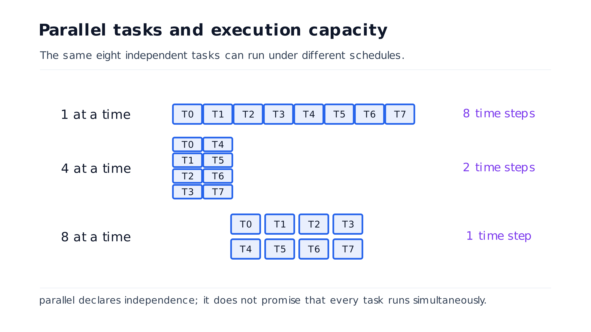
并行性描述哪些任务可以独立执行，执行资源则决定同一时刻能推进多少任务。
如果分块数量和启动尺寸由同一组常量表示，修改分块就会迫使资源映射一起改变。将两种描述分开后，这些选择更容易调整。
Croqtile 用 parallel 描述独立工作，用空间说明符描述映射。因此，可以先理解工作划分，再判断某个轴应映射到块、线程还是协作组。
有了 parallel、foreach、dma.copy、chunkat、# 和空间说明符，分块矩阵乘法便可以组合实现。
思路是：用 [128, 256] 的矩阵乘以 [256, 256] 的矩阵，得到 [128, 256] 的结果。
Croqtile 表达并行和循环的方式与 C++ 不同，但程序内部的分支处理仍然沿用 C++ 的 if-else 块。
重复性任务在编程中很常见。
目前用得最广的并行范式是单程序多数据：代码只写一次，却以多个实例同时执行。除非显式同步，各实例彼此独立运行。Croqtile 采用这一范式，并用 parallel-by 块来抽象并行性。
有前后依赖的工作需要顺序循环，例如沿 K 切片累加部分结果。Croqtile 将 with-in 声明的有界范围与 foreach 执行的遍历分开，因此可以在遍历前后安排工作，多缓冲流水线就使用了这一结构。
循环处理必须依次执行的工作，parallel-by 处理彼此独立的实例。
parallel-by 块声明一组彼此独立的实例；空间说明符则规定这些实例如何分组。
在 Croqtile 中，并行运行的代码放进并行执行块，表示同一段代码有多个实例同时执行。
parallel-by 块声明独立的实例，空间说明符把它们分组；掩码再决定其中哪些实例真正执行某条语句。
必须依次执行的工作仍然需要循环；2.7 节会介绍它们在 Croqtile 中的写法。
编写单程序多数据代码时，可能启动了固定数量的并行线程，但任务不能平均分配。掩码使有有效任务的线程执行，让其余线程保持非活跃状态。
在 Croqtile 代码里，掩码可以是隐式的，也可以是显式的。
线程掩码这个概念，从所有 SPMD 实例的整体视角描述执行状态。但在 SPMD 编程实践中，程序只有单线程视角，于是线程掩码表现为一个布尔表达式，通常是与线程标识符有关的比较结果。
后面的示例里，Croqtile 以实验性质支持对整个 foreach 块加显式掩码，也就是把循环代码整段屏蔽。例如：
__co__ void foo() { parallel p by 6 { with q in [2] { foreach q if (p == 0) { // this iteration only work for parallel thread 0 } } }}Croqtile 中有些代码结构自带隐式掩码，多层 parallel-by 块就是典型。下面是一个例子：
__co__ void foo() { parallel p by 6 { // parallel-level-0: // code here is as if implicitly masked 'if (q == 0)' parallel q by 2 { // parallel-level-1: // code here is for all 'q' threads } // parallel-level-0: // code here is as if implicitly masked 'if (q == 0)' }}本例有两层并行。位于 parallel p by 6 块内、却在 parallel q by 2 块之外的代码，只属于并行层次 0。然而在某些目标平台上，实际会启动 2 个并行线程，分别执行并行层次 0 或并行层次 1 里的代码。于是，只属于并行层次 0 的那部分，就好像被一个 C++ 的 if (q == 0) 块保护着。
条件也可以用于保护整个 foreach 循环，控制循环体是否执行。
within 的可选 Where-Binding还可以追加 where 子句，在 with-in 语句定义的多个有界变量之间施加 Where-Binding 约束，让不同的有界变量互为别名。例如：
with {m, n} in [M, N], {n_p, k} in [N_P, K]where n_p <-> n { // matmul implements with m, n, K. 'n_p' always refers to the same value as 'n'.}语法上，<-> 运算在两个有界变量之间建立 where-binding。在 with-in 块里，任何对 n_p 的引用都指向 n，反过来也一样。
Croqtile 主要面向单程序多数据编程，但也通过线程掩码支持多程序多数据(MPMD)执行；发散代码就写在 inthreads 块里。
在 SPMD 编程中，常常需要屏蔽掉一部分并行线程。比如，程序员把数据切成分块，交给多个线程并行或迭代处理，但可能除不尽，留下余量。
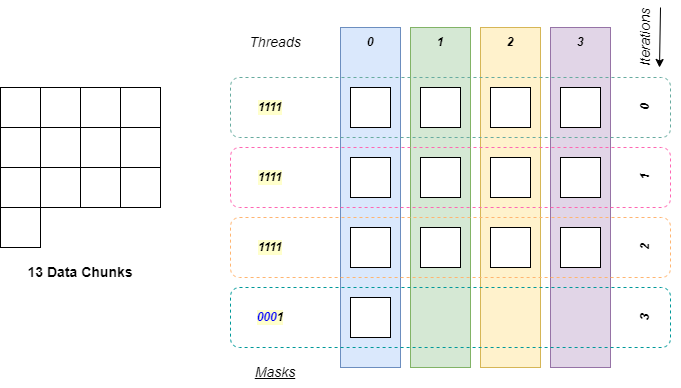
上图把 13 个数据分块分派给 4 个并行线程。要处理完全部分块需要 4 次迭代，但最后一次只有线程 0 需要处理分块。前三次迭代的线程掩码都是 1111，只有最后一次是 0001（最低位对应线程 0）。线程掩码由若干布尔位组成，1 表示活跃，0 表示非活跃。所以本例中只把线程 0 设为活跃，避免在最后一次迭代中处理无效分块。
加掩码是实现层面的概念。从 SPMD 编程的视角看，处理数据分块的代码通常被称为发散的，因为并非所有线程实例都执行同一段代码。程序员应当意识到，自己的 SPMD 代码由两部分组成：
现实中的不同需求，需要 SPMD 代码里有发散代码来处理。换一种范式看，在 SPMD 程序里使用发散代码，甚至能模拟多程序多数据的行为：MPMD 里不同线程执行不同代码，所以发散在概念上把 SPMD 扩展到了 MPMD 的范围。
在 Croqtile 中，可以用 inthreads 块来写发散代码。
线程掩码可以施加在不同的并行层次上。下面这个例子演示了这一点：
__co__ void foo() { parallel p by 3, q by 4 { inthreads (p < 2 && q == 0) { // divergent code for thread (0, 0), (1, 0) // thread-mask: 011-0001 } inthreads (q == 1) { // divergent code for thread (0, 1), (1, 1), (2, 1) // thread-mask: 111-0010 } }}这段代码用了两层并行：
p）：并行数为 3q）：并行数为 4第一个 inthreads 谓词（p < 2 && q == 0）把执行限制为：
0, 1（不含 2）0线程掩码 011-0001 反映了这些约束，两个层次之间用连字符 - 分隔。
第二个谓词（q == 1）不限制外层（p），允许所有外层 ID（0, 1, 2），只把内层限制为 q == 1。
加掩码让原本一致的并行区域内部也能出现发散执行。开发者既可以用 inthreads 块做显式线程掩码，也可以借 parallel-by 构造隐式控制，把执行限制在特定线程上。
加掩码确定哪些实例执行区域，其他实例是否在区域结束处等待，则取决于同步形式。第 3.8 节讨论异步区域：程序需要用事件表达数据依赖，不能依赖每个区域结束后的汇合。
第一个版本用 parallel 划分输出，用 .at() 逐个读取元素，尚未加入显式的数据搬运。
__co__ s32 [128, 256] matmul(s32 [128, 256] lhs, s32 [256, 256] rhs) { s32 [lhs.span(0), rhs.span(1)] output; parallel {p, q} by [16, 64] { foreach {m, n} in [128 / #p, 256 / #q] output.at(p#m, q#n) = 0; foreach index = {m, n, k} in [128 / #p, 256 / #q, 256] output.at(p#m, q#n) += lhs.at(p#m, k) * rhs.at(k, q#n); } return output;}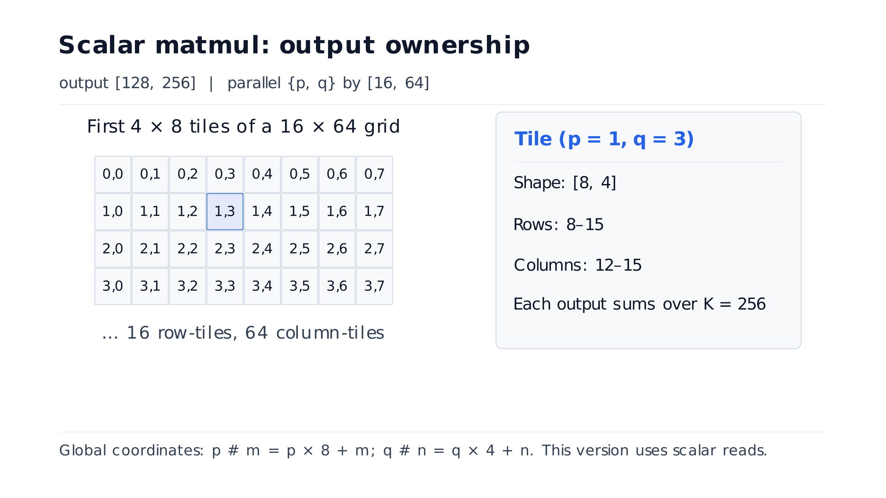
可以从输出形状开始，逐步核对并行划分、块内范围与全局坐标。
输出声明从 lhs.span(0) 取得 128 行，从 rhs.span(1) 取得 256 列。收缩维度出现在两个输入中，但不会成为输出维度。
声明 parallel {p, q} by [16, 64] 为同一并行层次提供两个坐标轴。1,024 对索引将输出划分为每块八行四列。
循环将 m、n 和 k 绑定为 index 的分量。前两者遍历输出块内位置，第三者遍历收缩维度。迭代次数直接来自输出划分：
128 / #p = 128 / 16 = 8：每块的行数。256 / #q = 256 / 64 = 4：每块的列数。256：完整的收缩维度。组合行索引 p#m 的值为 p * 8 + m。p 遍历 16 个行分块，m 遍历每块八行，合起来覆盖第 0 到 127 行。列表达式 q#n 使用相同规则，每块四列。
对每个输出位置，语句体沿 K 累加 lhs.at(p#m, k) * rhs.at(k, q#n)，所有贡献进入同一个输出元素。清零循环在同一并行实例中先执行，因此每个累加元素都由拥有它的实例清零。
按照第 3.6.1 节 DMA 矩阵乘法的块与线程划分，追踪输出位置 (37, 50)。该例使用 8 × 16 的块网格，每块负责 16 × 16 的输出分块。这与前面标量示例中的 16 × 64 逻辑网格不同，但两者覆盖相同的输出形状。
各块把 128 行划分为 8 个大小为 16 的分块：px = 37 / 16 = 2，偏移 qx = 37 % 16 = 5。列方向把 256 划分为 16 个大小为 16 的分块：py = 50 / 16 = 3，偏移 qy = 50 % 16 = 2。于是块为 (2, 3)，线程为 (5, 2)。
对该线程，K 循环执行 16 次迭代。在 tile_k = 0 这次迭代中，dma.copy 把 lhs 的第 32..47 行、K 的第 0..15 列装入共享的 lhs_load，把 rhs 的 K 第 0..15 行、第 48..63 列装入共享的 rhs_load。内层 foreach k in [16] 把 lhs_load.data.at(5, k) * rhs_load.data.at(k, 2)（k = 0..15）累加到 output.at(37, 50)。随后 tile_k = 1 装入下一条 K 条带，依此类推。16 次迭代之后，output.at(37, 50) 中就是完整的点积——与标量参考版本的答案相同。
chunkat、subspan 与 view().from()：三种选取分块的方式分块表达式需要回答两个问题：区域有多大，从哪里开始？使用 chunkat 时，有界索引提供划分数量并选择一块；使用 subspan(...).at(...) 时，分块形状显式给出，坐标按块计数；使用 view(...).from(...) 时，形状和起始元素坐标都显式给出。窗口不落在规则分块边界上时，这种区别尤其重要。
#：合成与范围一元形式 #p 取得索引上界，二元形式 p # i 将外层与内层索引组合起来，其值为 p * #i + i，上界为 #p * #i。若有八块、每块 16 个元素，第 2 块的块内第 5 个元素就对应 128 个元素范围中的第 37 个。
尺寸能够整除且起点遵循固定网格时，规则分块很合适。其他核函数可能需要不同描述：专家批次从运行时偏移开始，卷积窗口相互重叠，最后一个分块的有效元素可能不足。扁平输入也可能需要先解释为多维视图，再参与计算。
下面的操作调整所选区域或形状，使外围算法仍保持原有结构。得到的视图仍需满足所选搬运操作的要求，包括形状、布局以及目标平台特定的对齐约束。
chunkat 表达式既可以作 DMA 语句的源，也可以作目标。只把它用在源上，通常是把输入或缓冲区切成更小的块，搬到离处理器更近的存储；只用在目标上，则通常是搬运缓冲区，拼出输出的一部分。下面的代码是一个例子：
__co__ auto foo(f32 [36] input) { f32 [36] output; parallel p by 6 { f0 = dma.copy input.chunkat(p) => shared; // tile the source dma.copy f0.data => output.chunkat(p); // un-tile the destination } return output;}本例把 chunkat 用在目标，把 shared 里的数据块搬出来，「反分块」地写进输出。注意，如果目标的数据表达式用的不是 storage，Croqtile 编译器就要求源数据和目的数据的形状、元素类型完全一致。
同时在源和目标两端使用 chunkat 表达式，目前几乎没有任何目标平台支持。
# 合成两个有界变量以分块第 3.10.2 节 RGB 转灰度示例将工作实例索引 q 与顺序图像索引 n 组合起来。q # n 为每个实例分配连续图像。N = 18、共有六个实例时，内层上界是 3，所以实例 1 处理图像 3、4、5。下面沿用这一划分。
共有六个工作实例时，q 的上界是 6，n 的上界是 N / 6。组合后的上界为 N，值为 q * (N / 6) + n。其余索引 h、w 选择空间分块，通道维保持完整。因此，实例分配与局部遍历共同确定源分块及对应输出位置。
交换操作数会改变分配方式。N = 18 时，随着 n 递增，n # q 会让实例 1 处理图像 1、7、13，而 q # n 选择的是连续的图像 3、4、5。运算符将这种调度选择直接写入数据表达式，实际性能取决于所得访问在目标平台上的表现。
view 与 from 混合专家核函数中，不同专家经常处理不同数量的词元。每位专家数据的起点到运行时才确定，固定分块网格未必能描述所需切片。窗口可以先为切片确定自己的起点，再进行内部划分。
表达式 view(M, N).from(row, col) 描述从给定元素坐标开始的 M × N 矩形。选择区域不必落在分块网格边界上，但使用该视图的搬运仍需满足自身的对齐和形状要求：
patch = matrix.view(16, 16).from(37, 50);该表达式选取从第 37 行、第 50 列开始的 [16, 16] 切片。原点可以是任意运行时值。
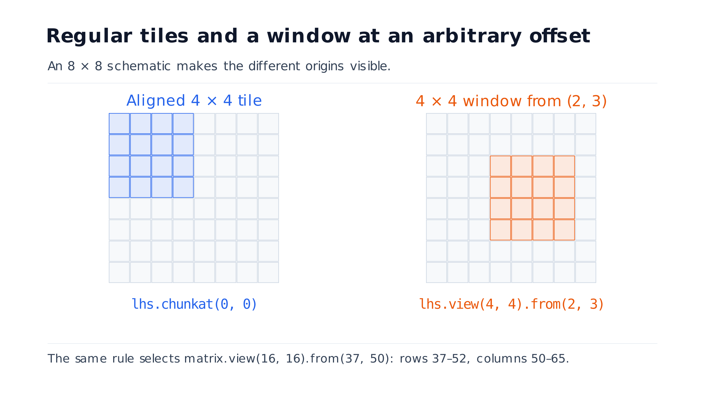
view / from 的优势在于可组合性：选定窗口后，后面的所有操作——subspan、chunkat、dma.copy——都作用在这个窗口上，就像它是一个独立的张量。流水线保持不变，只是起始位置发生变化：
expert_lhs = lhs.view(expert_M, K).from(expert_offset, 0);dma.copy expert_lhs.subspan(WARP_M, TILE_K).at(block_m, iv_k) => shared;在 MoE 栈里，每个专家的 token 批次都从动态行 expert_offset 开始。view / from 只调整流水线入口的操作数；下面的 DMA、暂存和 MMA 循环，对每个专家都执行同一段代码。
划分数量已能描述所需区域时，使用 chunkat。起点是显式元素偏移时，使用 view 和 from，再在窗口内部进行规则划分。这样就能将外层不规则选择与内部重复工作分开。
subspan、step 与 at 表达式 subspan(M, K).at(i, j) 使用分块坐标。没有显式步长时，元素起点为 (i * M, j * K)。指定步长会改变相邻分块起点之间的距离，但不改变选中分块的大小。
加上 .step(sM, sK) 会改写步长：分块之间相隔 sM 行、sK 列，可以按指定间隔排列：
matrix.subspan(16, 16).step(32, 32).at(i, j);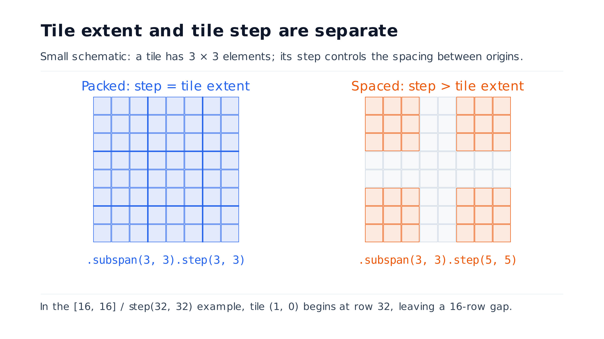
分块 (0,0) 从 (0,0) 开始，而分块 (1,0) 从第 32 行开始（不是第 16 行），留出 16 行的间隔。省略 .step 时，步长等于分块尺寸，也就是紧凑排列的情形。
步长小于分块尺寸时，窗口相互重叠；步长更大时，窗口之间留下空隙。例如，16 行窗口每次前进八行，会与下一个窗口共享一半行。步长控制起点序列，不应与分块内部元素之间的存储步幅混淆。
span_as 做布局重解释 span_as有些核函数把数据当作扁平的一维条带载入，却要把它作为二维矩阵交给 MMA。朴素的做法是把数据复制到一个改过形状的缓冲区；span_as 则不拷贝，直接就地重新解释现有缓冲区的形状：
flat_buffer.span_as([rows, cols])元素个数保持不变，只有逻辑秩改变，不搬运任何数据。
strip_load = dma.copy data.chunkat(tile) => shared;tile_2d = strip_load.data.span_as([tile_m, tile_k]);ma = mma.load tile_2d.chunkat(_, iv_warp);rows * cols 的乘积必须等于底层区域的元素数量。重解释形状会保留线性元素顺序，因此不能转置矩阵，也不能去掉行间填充。尺寸为常量时，编译器能在执行前检查元素数量；尺寸来自输入时，实际调用也必须满足同一约束。
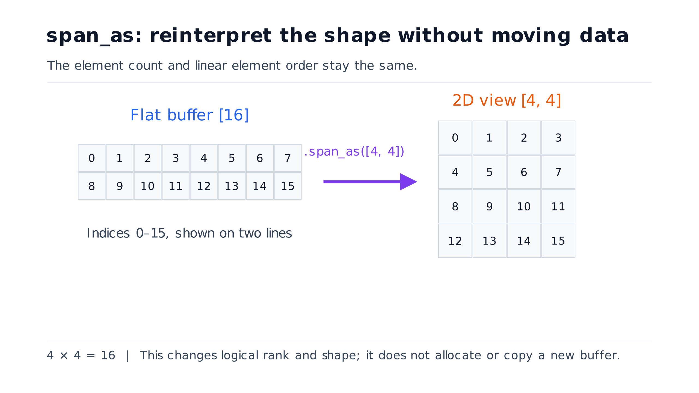
| 概念 | 语法 | 作用 |
|---|---|---|
| 软件 DMA | dma.copy / dma.copy.swiz<N> |
线程协作的分块传输 |
| 重排 | 拷贝上的 .swiz<N> 与 mma.load.swiz<N> |
无布局冲突的共享内存布局；对不同搬运路径效果相同 |
| 任意窗口 | view(M,N).from(r,c) |
不规整或运行时定位的切片 |
| 带步长的分块 | .subspan().step().at() |
非紧凑布局、相互重叠的模板 |
| 不完整分块 | .zfill |
把越界元素补零 |
| 形状重新解释 | span_as([dims]) |
暂存缓冲区的零拷贝变形 |
| 语法 | 含义 |
|---|---|
dma.copy.swiz<N> src => dst |
采用以字节计的重排宽度 N 的拷贝 |
mma.load.swiz<N> src |
与重排 N 一致的 MMA 操作数加载 |
.view(M, N).from(r, c) |
任意偏移处的 M x N 窗口 |
.subspan(M, K).step(sM, sK).at(i, j) |
带步长的分块选择 |
.zfill |
把拷贝源中的越界元素补零 |
span_as(dims) |
把线性存储重新解释为带形状的张量 |
3.6 节把上面的分块表达式用作搬运语句的源与目的。对于程序中确实需要纯 C++ 的部分，2.13 节汇集了 __device__ 函数、预处理守卫与注入的源代码文本。
已介绍的构造可以拼成一副骨架：一个参数和返回值都带类型、带形状的 __co__ 函数；用 parallel 和 .at() 做逐元素计算；用 lhs.span 从输入推导输出形状；以及主机侧用 make_spandata / .view() API 创建、传递张量。
2.9 节会引入 dma.copy 和 chunkat，用来表达分块级的数据搬运。
逐元素写法使用标量索引：选一个位置、读输入、计算、写输出。
分块实现则先选择区域，将其暂存到计算使用的存储中，再在那里复用数据。Croqtile 直接表达这次搬运，也能将属于搬运过程的变换写入同一语句：
dma.copy 原样搬运一个分块。dma.transp<...> 在搬运的同时置换维度。dma.pad<...> 扩大分块并填充边缘。这一模型的核心语法和规则，决定了 DMA 代码能否正确、高效地转换为目标代码。
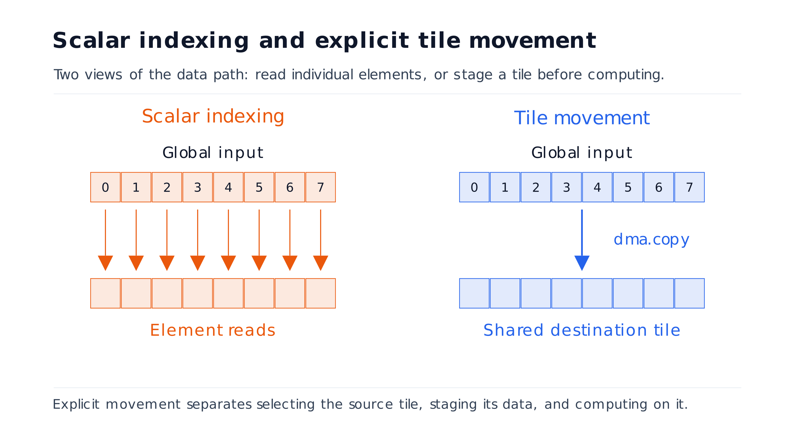
transp 与 pad普通复制保留源的形状和元素顺序。目标需要不同维度顺序时使用 transp，需要增加位置并填入指定值时使用 pad。目标形状也是操作的一部分，后续分块选择和计算应使用变换后的形状，而不是原始形状。
除了并行执行，Croqtile 只允许一种固定形式的异步操作：DMA 语句。
概念上，DMA 语句与 SPMD 代码异步执行，行为很像 CPU 的异步线程，只是受 DMA 配置的约束（CPU 上的异步线程则可以执行一般程序代码）。
一条基本的 DMA 语句把源分块搬到目的存储，并返回一个异步句柄。
global f32 [10] g_data;local f32 [10] l_data;f = dma.copy.async g_data => l_data;// ... async operationswait f; // explicit wait注意对 f 的赋值。它是异步 DMA 实体的句柄，在 Croqtile 中称为该 DMA 操作的「期值」。程序员可以显式写出同步语句 wait，暂停当前线程直到期值到达；不写的话，线程就和 DMA 操作并行地继续执行。
显式声明临时缓冲区可能需要重复代码。Croqtile 提供了更简单的语法：
global f32 [10] data;f = dma.copy data => local;... f.data; // retrieve the 'local' data from the future这里不必指定 DMA 把数据搬到哪个确切位置，只要说明目的内存类型。要取用已搬运的数据，调用期值的 data 成员即可。另外，这个 dma 操作没有标 .async，所以对 f 的 wait 既不需要，也不能执行。
简写形式将分配交给编译器，但数据依赖并未改变。仍需通过期值确认目标，等待异步搬运完成，并检查后续操作是否接受所得形状与存储位置。下面的高级模式允许多次搬运同时进行，同时保留这些要求。
Croqtile 要处理多个层次的数据搬运。它沿用了这个术语，并把数据搬运抽象为 DMA 操作。
Croqtile 在软件层把这些功能映射成不同的 DMA 操作类型。支持的操作包括：
dma.copy：直接拷贝扁平内存。dma.pad：搬运带形状数据的同时做填充。dma.transp：搬运带形状数据的同时做转置。填充、转置这些细节，作为 DMA 操作的参数来配置。例如：
global f32 [32, 16, 9] input;dma.transp<0, 2, 1> input => shared; // Result shape [32, 9, 16]dma.pad<{1, 0, 3}, {0, 1, 2}, {0, 0, 0}, 0.1f> input => shared; // Result shape [33, 17, 14]这里的 DMA 配置用 <...> 括起，内容随操作不同而变化。以某个目标平台为例，具体的配置语法和限制如下：
要注意，dma.copy 之外的 DMA 类型，支持程度因平台而异。比如在某些平台上，它可能映射到专用搬运引擎，也可能是对多个线程加载指令的编排。
数据搬运对 tileflow 程序至关重要。DMA 语句为各个层次各提供一种形式，从单次拷贝一直到链式非阻塞传输。
使用前一次搬运结果的传输，必须在前一次完成后才能开始。after 子句记录这项依赖，而不要求发起操作的代码当场等待。下面的例子将暂存缓冲区的复制与此前操作连接起来：
out_store = dma.copy.async l2_out => output.chunkat(m_tile, n_tile) after out_store_s;这个例子里：
out_store 是把数据从 l2_out 搬到 output.chunkat(m_tile, n_tile) 的异步 DMA 操作。out_store_s 是另一项 DMA 操作或事件，必须在 out_store 开始前完成。after out_store_s 语法规定，out_store 只能在 out_store_s 完成后启动，从而保证主线程不被阻塞。依赖尚未满足时，发起操作的代码可以继续执行，但目标并不会立即变得可读，源也不能因此提前复用。后续消费者仍需要等最终搬运完成。阅读搬运链时，应沿源到目标检查每次交接，包括最后回到普通计算的那一次。
__co__ s32 [128, 256] matmul(s32 [128, 256] lhs, s32 [256, 256] rhs) { s32 [lhs.span(0), rhs.span(1)] output; parallel {px, py} by [8, 16] : block { parallel {qx, qy} by [16, 16] : thread output.at(px#qx, py#qy) = 0; foreach {tile_k} in [16] { lhs_load = dma.copy lhs.chunkat(px, tile_k) => shared; rhs_load = dma.copy rhs.chunkat(tile_k, py) => shared; parallel {qx, qy} by [16, 16] : thread { foreach k in [256 / #tile_k] output.at(px#qx, py#qy) += lhs_load.data.at(qx, k) * rhs_load.data.at(k, qy); } } } return output;}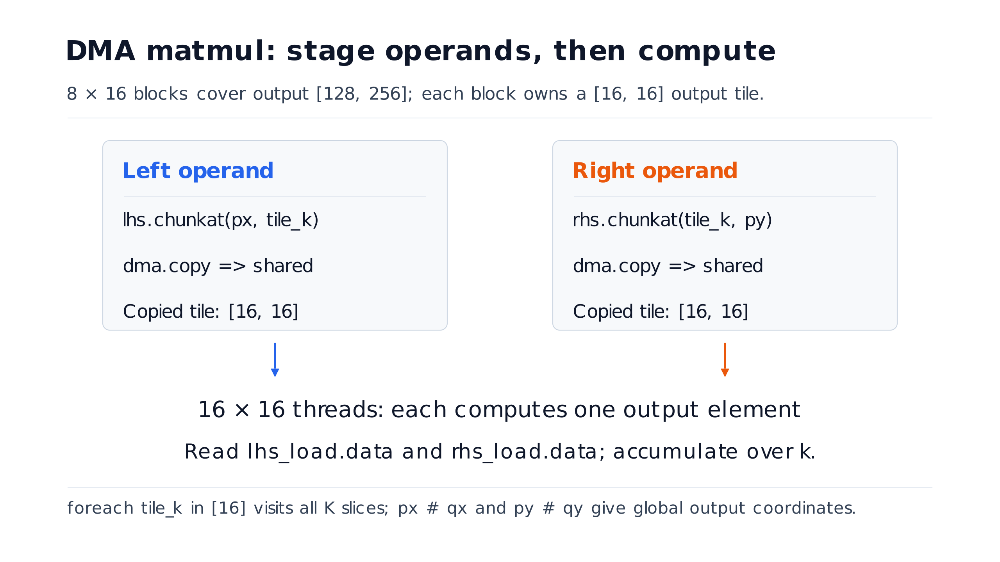
标量版本一次索引一个元素；分块版本先把一个分块复制到共享存储，再在这块数据上计算：
parallel 现在用 : block 和花括号形式的索引 {px, py}。8 × 16 的块网格覆盖整个输出。tile_k 的 foreach 分 16 步走完 K 维。每一步用 dma.copy ... => shared 把 lhs 和 rhs 的一条条带复制到 shared 存储。parallel {qx, qy} by [16, 16] : thread 在每个块里创建 256 个线程，每个线程负责块内分块的一个输出元素。lhs_load.data 和 rhs_load.data 读取，也就是共享内存里的副本，而不是全局的 lhs 和 rhs。合成索引分两层：px#qx 把块索引 px 和线程索引 qx 合成为全局行，py#qy 对列做同样的事。
块网格 [8, 16] 为每块分配 16 行、16 列输出。块内 [16, 16] 个线程各负责一个输出元素。K 方向共有 16 个分块，每块含 16 个元素，共同覆盖大小为 256 的完整收缩维度。
数据复用发生在块内：装入的左侧分块为多个输出列供数，右侧分块为多个输出行供数。K 循环遍历各切片一次，将贡献累加到同一组输出位置。与标量示意代码一样，输出在 K 循环之前清零。暂存改变了内层循环的读取位置，点积本身保持不变。
dma.any、swap 与 rotate swap 做双缓冲给 K 循环准备两个逻辑缓冲区：计算使用缓冲区 0 时，DMA 将下一个分块装入缓冲区 1。计算完成后交换句柄，原来的“下一个”变成“当前”，释放的槽位供下一次装入使用。
在 Croqtile 中，这一过程由 dma.copy.async（非阻塞拷贝）、dma.any（占位期值）、swap（交换期值句柄）和一个三阶段循环来表达：
__co__ auto matmul(s32 [M, K] lhs, s32 [K, N] rhs) { s32 [lhs.span(0), rhs.span(1)] output; parallel {px, py} by [8, 16] : block parallel {qx, qy} by [16, 16] : thread { output.at(px#qx, py#qy) = 0; with tile_k in 16 { // Prologue: start loading tile 0 lf0 = dma.copy.async lhs.chunkat(px, tile_k) => shared; rf0 = dma.copy.async rhs.chunkat(tile_k, py) => shared; // Placeholder futures for buffer 1 lf1 = dma.any; rf1 = dma.any; // Steady state: load next tile while computing on current foreach tile_k(1:) { lf1 = dma.copy.async lhs.chunkat(px, tile_k) => shared; rf1 = dma.copy.async rhs.chunkat(tile_k, py) => shared; wait lf0, rf0; foreach k in [256 / #tile_k] output.at(px#qx, py#qy) += lf0.data.at(qx, k) * rf0.data.at(k, qy); swap(lf0, lf1); swap(rf0, rf1); } // Epilogue: compute on the last loaded tile foreach k in [256 / #tile_k] output.at(px#qx, py#qy) += lf0.data.at(qx, k) * rf0.data.at(k, qy); } } return output;}前序阶段发起第 0 块的装入，用 lf0 和 rf0 表示。此时还没有上一块可供计算，这两次搬运为后面的循环建立初始状态。
稳定阶段先用 lf1 和 rf1 发起下一块的装入，再等待当前块就绪，并从 lf0 和 rf0 读取计算。两对期值对应不同缓冲区，因此下一块的搬运可以与当前计算重叠，并不要求下一块先装入完成。当前计算结束后，swap 将下一对变为下一次迭代的当前对。
循环停止发起搬运后，收尾阶段处理最后装入的分块。读取之前，仍需确认它已装入完成。上面的清单用于展示期值轮换，省略了最后一次等待和输出初始化；实际执行累加时必须补齐这两项，也必须像稳定阶段一样保证读取时数据已就绪。
swap：交换的是名字，不是字节操作 swap(lf0, lf1) 交换表示当前和下一缓冲区的句柄，不复制元素，也不等待搬运。三个缓冲区可用 rotate(f0, f1, f2) 轮换句柄。无论哪种情况，都应在交换后继续追踪句柄，确定读取之前需要等待哪次搬运。
dma.any：占位期值dma.any 在尚未发起搬运时先声明期值名字，使两个句柄都能位于包含循环与收尾代码的作用域中。占位期值并不包含已就绪的分块，必须先用实际搬运替换它，才能使用其数据。
要激进地优化高性能计算核函数，一个有效的办法是让计算与 DMA（直接内存访问）数据搬运重叠。这种做法叫多缓冲优化，通常要求程序员管理多个缓冲区。
在 Croqtile 中，这种做法需要两个关键原语：占位期值 dma.any，以及 swap/rotate 函数：
__co__ s32 [6, 17, 128] ele_add(s32 [6, 17, 128] lhs, s32 [6, 17, 128] rhs) { s32[lhs.span] output; parallel p by 6 { with index = {x, y} in [17, 4] { local s32 [rhs.span / {#p, #x, #y}] l_out; foreach x { // first bunch lfA = dma.copy.async lhs.chunkat(p, x, y) => local; rfA = dma.copy.async rhs.chunkat(p, x, y) => local; lfB = dma.any; // dummy DMA used for multi-buffering rfB = dma.any; foreach y(1:) { lfB = dma.copy.async lhs.chunkat(p, x, y) => local; rfB = dma.copy.async rhs.chunkat(p, x, y) => local; wait lfA, rfA; // wait another bunch call kernel(lfA.data, rfA.data, l_out, |lfB.span|); dma.copy l_out => output.chunkat(p, x, y - 1); swap(lfA, lfB); // exchange futures swap(rfA, rfB); } lf = select(#y % 2, lfB, lfA); rf = select(#y % 2, rfB, rfA); wait lf, rf; // handle the last bunch call kernel(lf.data, rf.data, l_out, |lfB.span|); dma.copy l_out => output.chunkat(p, x, y(-1)); } } } return output;}这个加法核函数为每份输入维护两组局部缓冲区。A 句柄表示当前操作数，B 句柄接收下一次装入。当前结果计算并写回后，通过交换句柄推进两组角色。左右输入沿同一调度前进，使每次加法使用相互对应的分块。
实现把数据搬运和计算分成三个阶段：
占位期值 lfB 和 rfB 在内层循环前声明，因此收尾代码仍能引用它们。循环先用实际搬运结果替换占位值，再使用其数据。若只在循环内部声明这些名字，处理最后一块时它们就已超出作用域。
第 18--19 行的 swap 语句交换期值，让第 15 行的 wait 语句能正常工作。注意，只有对应相同 DMA 操作的期值才能交换。另外，第 12 行 foreach 的迭代范围也调过：foreach y(1:) 表示对有界变量 y 的循环从第二个取值开始，一直到上界。第 17 行的 chunkat 表达式同样调过：y - 1 取 y 的当前值减 1，让主体阶段和前奏阶段正确衔接。这个调整是必要的：迭代次数要减 1，而预装载操作应该在计算「当前」数据块时装入「下一」块。也可以改用 foreach y(:-1)，再相应调整第 13--14 行预装载语句的 chunkat 表达式，效果一样。
第 25 行的 y(-1) 取出 y 在界内的「最后一个取值」。
第 21--22 行的 select 表达式处理有界变量 y 上界为奇数和偶数两种情况，无论哪种都能取得最后一块数据对应的期值。
如果想用两个以上的缓冲区，就要用 rotate 语句代替 swap。
mma 语法3.4 节的分块矩阵乘法是按 CPU 的方式计算内部收缩的：一个 foreach k 循环，每次迭代把两个标量相乘，累加到同一个输出元素上。这种写法可以得到正确结果。
真正的任务是二维张量收缩——C += A × B，其中 A、B、C 都是形状固定的小矩阵分块。它是每个 GEMM、每个以 im2col 矩阵乘表达的卷积、每个注意力头 QKT 的内层核函数。
困难在于矩阵元素如何分布到参与协作的操作数片段中。布局声明必须与数据布局一致，例如把列主序分块当作行主序片段使用，就可能得到错误结果。下面的颜色只示意分布，不表示某条指令的精确映射。
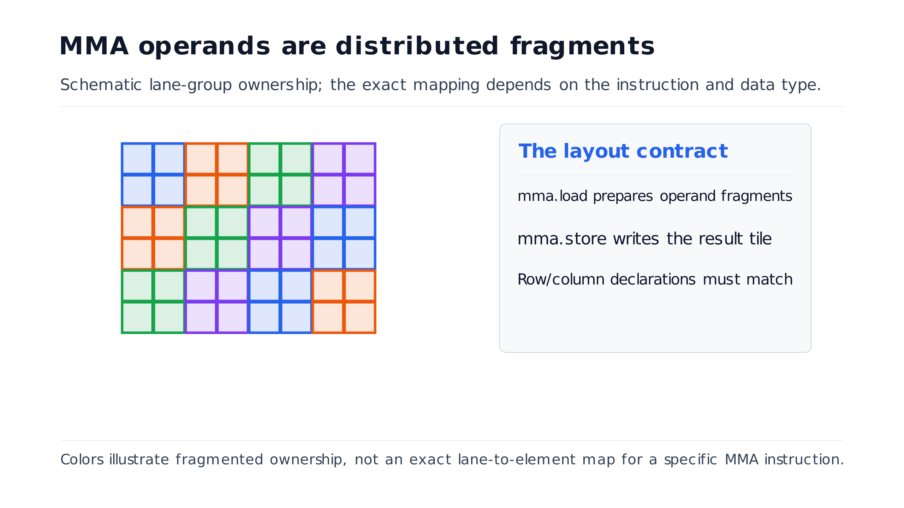
Croqtile 用 fill、load、乘加和 store 表达收缩，由编译器处理片段元素在所选协作范围内的分布。程序员仍需选择兼容的分块形状并声明操作数布局，这层抽象以这些选择正确为前提。
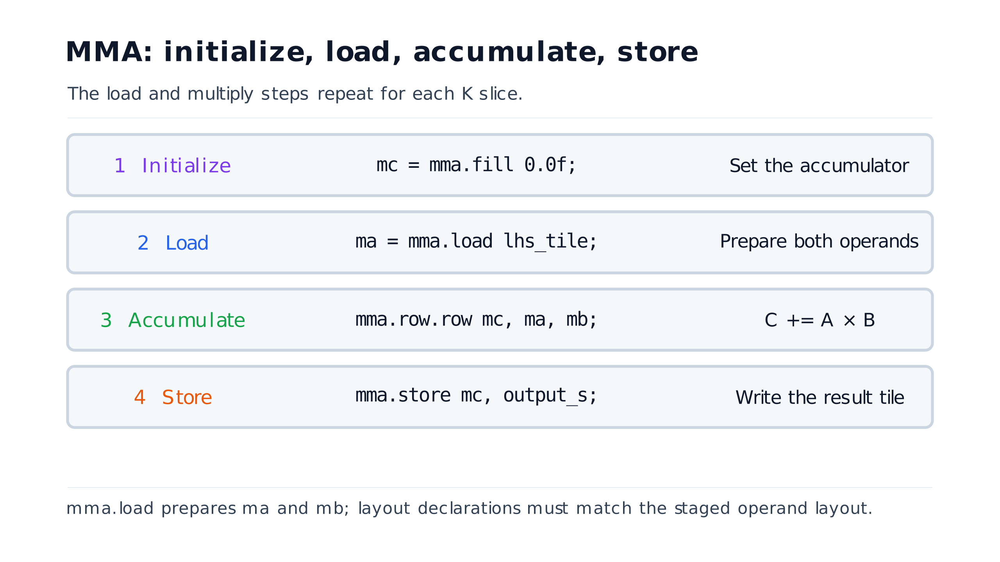
无论多少线程协作完成一次收缩，四步语法都不变。变的是协作范围——以下示例围绕这一变化展开。
.zfill真实核函数常常以不完整的分块收尾。关键区别在于源分块形状和目的分块形状是否相同。
例如：
dma.copy.swiz<32>.zfill lhs.view(ROWS_M, TILE_K).from(base_m, base_k) => lhs_load_s;这里 lhs_load_s 的形状可能是 [group_M, TILE_K]，源视图的形状却是 [ROWS_M, TILE_K]；在最后一个分块上，ROWS_M 可能小于 group_M。这是源区域与目的区域之间的形状差异，此时 .zfill 的意思是：拷贝有效的源行，把目的分块剩下的行写零。
这正是 .zfill 的正确用法。
形状相同时，情况是这样：
[100] 张量切成 [64] 分块这类情况，这已经够了：最后一个分块只有 36 个有效元素。.zfill 不是处理「任意不完整分块」的通用机制。它专门针对目的分块大于有效源区域、且目的端多出的部分必须填零的情形。
.zfill 为什么重要：
.zfill 把多出来的那块区域置零。当有效源区域小于目的分块，且消费者会把目的端当作完整的稠密分块时，应使用 .zfill。这是带动态行数或带填充边缘分块的 GEMM 式流水线里的常见情形。
源和目的形状本来就相同时再加 .zfill，编译器可能警告说这个 .zfill 是多余的；反过来，形状不同时，编译器也可能警告需要 .zfill，免得未覆盖区域里出现未定义值。
.swiz<N>：面向消费者的共享内存布局典型的 GEMM 暂存代码如下：
dma.copy.swiz<128> lhs.subspan(WARP_M, TILE_K).at(block_m, iv_k) => lhs_load_s;ma = mma.load.swiz<128> lhs_load_s.chunkat(_, iv_warp);装载侧和计算侧的重排必须一致。用 .swiz<128> 暂存的分块，消费者通常也要用匹配的重排来加载。
.swiz<N> 的取值决定共享内存中分块元素的排列，必须与 mma.load.swiz<N> 一致。
交错布局改变暂存分块的元素在共享存储中的排列。逻辑矩阵形状不变，但读取方必须使用匹配的地址映射。Croqtile 的拷贝操作都提供这一选择：
dma.copy.swiz<128> src => dst; // software DMA with swizzledma.copy.swiz<128> src => dst;MMA 的读取路径必须使用相同的 swiz<N>，让地址与暂存的布局一致：
ma = mma.load.swiz<128> lhs_load_s.chunkat(_, iv_warp);重排是拷贝自身的性质，而不是某个引擎独有的特性：dma.copy.swiz<N> 产生的共享内存布局与数据如何到达无关。
模板参数选择目标支持的交错模式。示例使用编号模式，其中模式 0 表示恒等映射。有效模式及兼容的分块尺寸取决于目标平台，搬运与 MMA 装入应采用同一套已记录的约定。
复制与 mma.load.swiz<N> 必须对布局达成一致。用不兼容模式读取交错分块，会把相同字节解释为不同矩阵位置，导致数值错误。修改任一操作时，都应将两者匹配视为正确性要求。
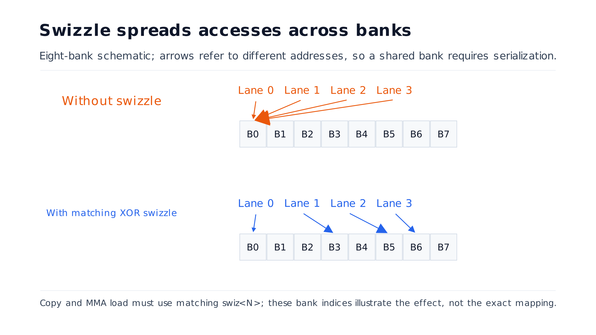
上面的例子对稠密 FP16 分块使用 mma.row.row。同样的四步模式可以扩展到基本形式覆盖不到的工作负载。
稀疏收缩还需要一个元数据操作数 me，用来标明哪些元素非零：
mma.row.row.sp mc, ma, mb, me;.sp 后缀加上元数据操作数，其余仍是填充、加载、相乘、存储的顺序。任何布局组合都能用，比如 mma.row.col.sp。me 和 A、B 一起，从单独的元数据张量里载入。
对带分块缩放值的量化操作数，收缩还需要所选 A、B 分块对应的缩放值。.scale 形式将缩放与矩阵操作一起表达：
mma.row.row.scale mc, ma, mb, sc_a, sc_b;收缩之后，每个结果元素由 sc_a 和 sc_b 缩放——不再需要单独的反量化核函数。如果缩放来源和标准的融合路径不同，缩放也可以写成独立语句：
mma.row.row mc, ma, mb;mma.scale mc, sc_a, sc_b;独立的 mma.scale 出现在某些 MoE 与混合精度核函数中。
dma.copy.swiz<N> 和 mma.load.swiz<N> 里的 N 必须一致，不一致就会读出错误数据。输出方面，mma.store.transp mc, dst 会把累加器的行和列互换后写出，适合下一阶段需要列主序数据的情形。
所有变体汇总在下表中，方便查阅。
最小示例将一个输出分块分配给用 : group 表示的协作组。函数接收左右操作数和调用方提供的输出缓冲区。沿着一个输出分块阅读代码：初始化累加器，遍历各 K 切片，将累加分块存入共享存储，最后复制到对应输出位置。
#define TILE_M 16#define TILE_N 16#define TILE_K 16#define WARP_M 16#define WARP_N 16#define WARP_K 16#define MMA_M 16#define MMA_N 16#define MMA_K 16__co__ void matmul_wmma(global f16 [M, K] lhs, global f16 [N, K] rhs, global f16 [M, N] output) { parallel {block_m, block_n} by [cdiv(M, TILE_M), cdiv(N, TILE_N)] : block { shared f16 [TILE_M, TILE_N] output_s; parallel {warp_m, warp_n} by [cdiv(TILE_M, MMA_M), cdiv(TILE_N, MMA_N)] : group { mc = mma.fill 0.0; foreach {iv_k} in [cdiv(K, TILE_K)] { lhs_load_s = dma.copy lhs.subspan(TILE_M, TILE_K).at(block_m, iv_k) => shared; rhs_load_s = dma.copy rhs.subspan(TILE_N, TILE_K).at(block_n, iv_k) => shared; foreach iv_warp_k in [cdiv(TILE_K, MMA_K)] { ma = mma.load lhs_load_s.chunkat(warp_m, iv_warp_k); mb = mma.load rhs_load_s.chunkat(warp_n, iv_warp_k); mma.row.row mc, ma, mb; } } mma.store mc, output_s.subspan(MMA_M, MMA_N).at(warp_m, warp_n); } dma.copy output_s => output.subspan(TILE_M, TILE_N).at(block_m, block_n); }}函数返回 void，因为它直接写入参数 output。调用方提供该缓冲区，并在操作完成后读取结果。函数内部的 output_s 是 mma.store 与最终复制之间使用的暂存缓冲区。
向上取整除法 cdiv(M, TILE_M) 计算 M 方向分块数量，包括可能不足一整块的尾部。(block_m, block_n) 标识当前块负责的输出分块。操作数选择复用这些输出坐标，并加入当前 K 切片坐标。
当矩阵尺寸与分块尺寸都为 16 时，块网格为 1 × 1。更大的矩阵会产生更多输出分块。编译这段清单前，需要补充 MMA_M、MMA_N 和 MMA_K 的定义，并使它们与所选片段尺寸一致。
3.5 节详细讨论 subspan 和 chunkat 的区别。
subspan(h, w)声明固定大小的矩形视图形状，.at(i, j)从父张量中选出想要的视图实例。换言之，lhs.subspan(TILE_M, TILE_K).at(block_m, iv_k)的意思是「取位于(block_m, iv_k)的[TILE_M, TILE_K]分块」。需要显式分块形状时用subspan；需要按已有维度的等分来切时用chunkat。
累加器跨越整个 K 循环。若在循环内初始化，就会丢弃此前的贡献；若在循环内写回，得到的只是部分结果。将初始化放在循环前、写回放在循环后，能清楚表示输出分块的累加过程。
| 语法 | 含义 |
|---|---|
mc = mma.fill 0.0 |
把累加器分块初始化为零 |
mma.fill.f16 0.0f / mma.fill.f32 0.0f |
显式指定精度的累加器 |
mma.load.swiz<N> src |
按重排模式加载 |
mma.row.row mc, ma, mb |
C += A × B（均为行主序） |
mma.row.col mc, ma, mb |
C += A × B（A 行主序，B 列主序） |
mma.row.row.sp mc, ma, mb, me |
带元数据操作数的稀疏 MMA |
mma.row.row.scale mc, ma, mb, sc_a, sc_b |
融合的 MMA 与逐分块反量化 |
mma.scale mc, sc_a, sc_b |
独立的 MMA 后置缩放 |
mma.store.transp mc, dst |
转置后写出累加器 |
cdiv(a, b) |
向上取整除法 |
__co__ void fn(...) |
就地写出结果的核函数 |
阅读修饰符时，应同时追踪数据路径。交错装入必须匹配复制产生的布局，稀疏操作需要同一操作数分块的元数据，缩放值也必须对应正在累加的分块。语句写得简短，并不意味着可以忽略这些关系。
| 主题 | 要点 |
|---|---|
| 二维张量收缩 | 在分块状操作数上做 C += A × B —— 通用的内层核函数 |
| 四步抽象 | 填充 → 加载 → 相乘 → 存储；编译器为各目标平台处理片元布局 |
| 扩大协作规模 | 语法保持不变 |
| 布局约定 | mma.row.row、mma.row.col 等 |
| 稀疏与量化 | .sp 增加元数据操作数；.scale 融合逐分块反量化 |
| 重排与流水线 | mma.load.swiz<N> 匹配带重排的共享布局 |
收缩执行得更快，但装载和计算仍然轮流进行——3.8 节会引入角色专门化，让不同的线程组各司其职：一组装载数据，另一组做计算，使内存访问和数学运算在时间上重叠。
每一种面向并行机的语言都必须回答同一个问题：当不同线程需要做不同的事情时，会发生什么？
CPU 的各个核心具有独立的程序计数器；共享指令流的线程遇到发散路径时，则需要依次执行各条路径，并屏蔽当前不执行的线程。
所有线程都求值该条件，条件为假的线程被屏蔽（停用）；这就是谓词执行——发散路径可能需要额外执行时间。
分块矩阵乘法还包含职责不同的工作：一个组装入下一批操作数，另一个组使用当前操作数计算。两组需要在明确的交接点之间独立推进。运行时条件描述实例选择哪个分支，而流水线还需要表达这些独立职责及其依赖关系。
Croqtile 引入两个额外的控制流原语来填补这个空白：
inthreads.async —— 结构化并发区域：在编译时把线程分成若干组，各组同时运行不同的程序，编译器为它们生成彼此独立的指令流；shared event / wait / trigger —— 区域间通信：轻量级的同步令牌，让并发区域能安全地通信。inthreads.async 构造结构化并发区域形式 inthreads.async 将不同线程组分配到各自推进的区域，谓词标识负责该区域的组。生产者和消费者的职责固定，而进度取决于哪些缓冲区就绪，适合用这种方式表达。
parallel p1 by 2 : thread { inthreads.async (p1 == 0) { } inthreads.async (p1 == 1) { }}与 if 的区别是结构性的，不只是性能上的：
if（谓词执行） |
inthreads.async（结构化并发） |
|
|---|---|---|
| 判定时机 | 运行时——每个线程都求值条件 | 编译时——线程归属已固定 |
| 指令流 | 一段程序；发散线程被屏蔽 | 每个区域各有一段程序 |
| 编程语言类比 | 任意语言中的 if/else |
结构化并发中的 async/spawn（Trio、Go 协程、Cilk） |
区域由词法作用域限定，编译器可以从程序结构中识别参与者。代码不会在运行时创建数量不定的任务，每个区域都在已声明的并行范围内执行。
不加 .async 时，区域在继续后续代码之前与外围执行汇合。加上 .async 后，其他区域可以独立推进，它们之间的数据交接需要显式同步协议。
下图展示了实际效果——生产者的 DMA 和消费者的 MMA 在时间上重叠：
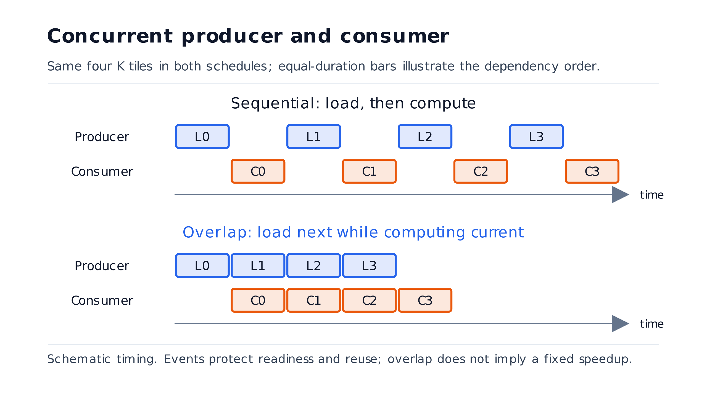
inthreads.async 创建并发区域之后，这些区域需要一种通信方式。Croqtile 提供了事件。
shared event full;shared event empty;事件有两种操作：
trigger name —— 发出条件已满足的信号（例如「数据已就绪」）wait name —— 阻塞直到相应的 trigger 触发生产者写完一个分块后调用 trigger full，发出「数据就绪」的信号；消费者读取之前调用 wait full，阻塞到信号到达。对称地，消费者读完（缓冲区可以复用了）就触发 empty，生产者在写下一个分块之前等待 empty。
这是一种通过许可交接的有界缓冲区协议——full 是「数据可用」许可，empty 是「缓冲区空闲」许可。
缓冲流水线有两项顺序要求：消费者必须等生产者填完槽位后才能读取，生产者也必须等消费者用完槽位后才能覆盖。装入再快也不能省去第二项要求，消费者再快也不能省去第一项要求。
第 3.6.2 节的双缓冲模式由一个组发起搬运、等待当前输入并轮换句柄。生产者—消费者流水线则将这些职责分配给不同异步区域，再用事件传递就绪和复用信号；在单组版本中，这些顺序由组内指令安排表达。
两种模式解决的是同一个根本问题：不能在一方写入缓冲区的同时读取它。区别只在于解法的组织方式。
swap 模式之所以能够工作，是因为同一个线程组同时控制装载和计算——它清楚顺序。一旦拆成两组，就没法共享同一套 swap 调度了，需要额外的通信机制。
下图对比了严格的「先装载再计算」阶梯和双缓冲重叠：逻辑上的工作量一样，空闲时间却少了。
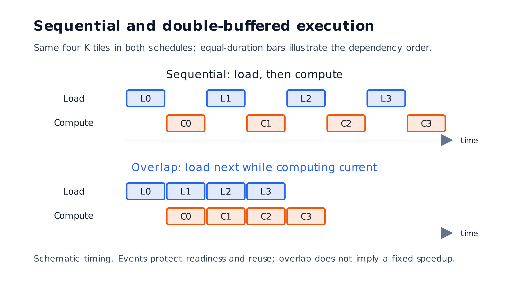
和 parallel-by 语句类似，也可以让执行发散代码的线程与不执行发散代码的线程彼此异步。下面的例子展示如何在 SPMD 代码里做 MPMD 执行：
__co__ void foo() { parallel p by 6 { inthreads.async (p <= 2) { // divergent code for thread 0, 1, 2 (thread-mask: 000111) } inthreads.async (p > 2) { // divergent code for thread 3, 4, 5 (thread-mask: 111000) } sync.shared; // sync point // all 'inthreads' paths must get executed }}本例把并行线程平均分成两个子组，并且不在每个 inthreads 块之后强制同步。这样两组的线程就能并行执行，模拟出 MPMD 的效果。不过 sync.shared 语句为所有线程建立了一个同步点，保证两条路径的代码都执行到该同步点之后。
只有外层 inthreads 能声明为异步。对任何内层 inthreads 块使用 inthreads.async，都会得到编译时错误。
在 Croqtile 中，事件与存储说明符关联，可以是 global、shared 或 local；这个存储说明符决定了事件的实例。
__co__ void foo() { global event ge; // single instance in the tileflow program parallel p by 2 { // shared level shared event se; // two instances, 1 for each shared instance parallel q by 6 { // local level local event le; // 12 instances in total, 6 for each shared instance } }}上面代码里的注释说明了事件实例。机制和带形状数据的声明相同，后者同样要求存储说明符。从实现角度看，事件可以做成指定存储层次里的布尔数据，因此也占用该层次的存储；但在概念上，事件属于某个特定层次，实例数就对应它的并行层次。
默认情况下，事件是无锁的，用于不同异步块之间的高性能同步。这意味着多个线程同时更新事件时有风险，尤其是 wait。
例如：
parallel p by 1 { shared event e; trigger e; // one thread set e; parallel q by 2 { wait e; // two threads can reset e; }}这段代码里，两个线程等待同一个事件 e。但 wait 会复位事件 e，因此可能出现 thread-0 在 thread-1 发现 e 已触发之前就把它复位的情况，结果 thread-1 永远无法解除阻塞，形成死锁。
qc = 2;parallel p by 1 { shared event e[qc]; trigger e; // one thread set e[0] and e[1]; parallel q by qc { wait e[q]; // no dead lock }}这段代码使用事件数组，保证每个事件只由一个线程等待和复位。
inthreads.async 最常见的用途，是矩阵乘法里的 1P1C（一生产者、一消费者）划分：
parallel p1 by 2 : thread { inthreads.async (p1 == 0) { } inthreads.async (p1 == 1) { }}声明 parallel p1 by 2 : thread 在同一个外层块中建立两个线程角色。p1 的值选择职责，并不表示 K 方向的分块编号。
p1 == 0 的区域承担生产者职责，负责写入共享暂存缓冲区。若写入使用另一个已空闲槽位，另一组就可以同时推进计算。
p1 == 1 的区域承担消费者职责，读取已完成的分块并更新累加器。两个区域共享暂存存储，因此事件协议必须明确槽位何时从可写变为可读，以及何时重新可写。
共享地址空间要求明确的读写协调：没有协调的话，消费者可能在生产者还没写完缓冲区时就开始读。事件用于表达这一先后关系。
这个骨架省略了基于事件的同步；3.8.5 节会补上完整的流水线协议。
__co__ auto matmul(global f16 [M, K] lhs, global f16 [N, K] rhs) { f16 [M, N] output; parallel {block_m, block_n} by [cdiv(M, WARP_M), cdiv(N, WARP_N)] : block { shared f16 [WARP_M, TILE_K] lhs_load_s; shared f16 [WARP_N, TILE_K] rhs_load_s; shared f16 [WARP_M, WARP_N] output_s; parallel p1 by 2 : thread { inthreads.async (p1 == 0) { foreach {iv_k} in [cdiv(K, TILE_K)] { dma.copy lhs.subspan(WARP_M, TILE_K).at(block_m, iv_k) => lhs_load_s; dma.copy rhs.chunkat(block_n, iv_k) => rhs_load_s; } } inthreads.async (p1 == 1) { mc = mma.fill.f16 0.0f; foreach {iv_k} in [cdiv(K, TILE_K)] { foreach {iv_warp} in [cdiv(TILE_K, WARP_K)] { ma = mma.load lhs_load_s.chunkat(_, iv_warp); mb = mma.load rhs_load_s.chunkat(_, iv_warp); mma.row.row mc, ma, mb; } } mma.store mc, output_s; dma.copy output_s => output.subspan(WARP_M, WARP_N).at(block_m, block_n); } } } return output;}生产者循环遍历 cdiv(K, TILE_K) 个输入切片，每次填充左右暂存缓冲区。对应收缩开始之前，消费者需要确认两个操作数都已就绪。
消费者为输出分块初始化一个累加器，然后针对各 K 切片装入并相乘操作数片段，在最后一次贡献加入后写回输出。两个循环独立运行，仅仅迭代次数相同，并不能保证消费者读到预期切片。
这段骨架省略了两个循环之间的交接。作为实际流水线使用之前，需要在装入后增加就绪信号，在消费后增加复用信号。第 3.8.5 节通过每槽位事件补齐这两项要求。
前面的核函数里，网格随问题规模增长：大致每个输出分块对应一个块。矩阵一大，启动的块数就很多，而最后一批块常常让一部分 SM 闲着——这就是尾部利用率不足。
持久核函数把启动规模固定下来（通常接近 SM 数量），让每个块迭代处理多个分块：
__co__ auto matmul(global f16 [M, K] lhs, global f16 [N, K] rhs) { f16 [M, N] output; int total_tiles = cdiv(M, WARP_M) * cdiv(N, WARP_N); parallel block_id by NUM_GROUPS : block { shared f16 [WARP_M, TILE_K] lhs_load_s; shared f16 [WARP_N, TILE_K] rhs_load_s; shared f16 [WARP_M, WARP_N] output_s; foreach {tile_iter} in [cdiv(total_tiles, NUM_GROUPS)] { tile_id = tile_iter # block_id; if (tile_id < total_tiles) { block_m = tile_id / cdiv(N, WARP_N); block_n = tile_id % cdiv(N, WARP_N); mc = mma.fill.f16 0.0f; foreach {iv_k} in [cdiv(K, TILE_K)] { dma.copy lhs.subspan(WARP_M, TILE_K).at(block_m, iv_k) => lhs_load_s; dma.copy rhs.subspan(WARP_N, TILE_K).at(block_n, iv_k) => rhs_load_s; foreach {iv_warp} in [cdiv(TILE_K, WARP_K)] { parallel p by 1 : thread { ma = mma.load lhs_load_s.chunkat(_, iv_warp); mb = mma.load rhs_load_s.chunkat(_, iv_warp); mma.row.row mc, ma, mb; } } } mma.store mc, output_s; dma.copy output_s => output.subspan(WARP_M, WARP_N).at(block_m, block_n); } } } return output;}声明将工作块数量固定为 NUM_GROUPS。工作量变化时，调整的是循环迭代次数，而不是启动块数。
表达式 tile_iter # block_id 的值为 tile_iter * NUM_GROUPS + block_id，每次迭代为各工作块分配下一组连续分块。
条件 tile_id < total_tiles 排除最后一个有效分块之后的索引。属于该分块的工作都应放入判断之内，包括需要参与者一致确认分块是否存在的生产者—消费者协议。
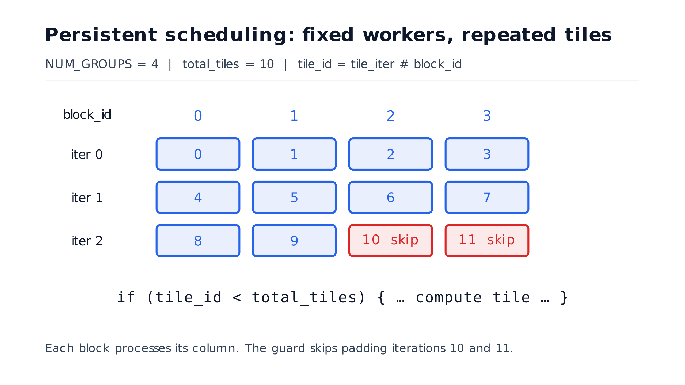
若有四个工作块和十个输出分块，组合索引在第一次迭代为 0–3，第二次为 4–7，第三次为 8–11。最后一次只有 8 和 9 通过条件判断。这样每个有效分块恰好被处理一次，但并不保证所有工作块始终忙碌，利用率仍取决于分块开销和剩余工作量。
| 方面 | 每分块一个块 | 持久（NUM_GROUPS 块） |
|---|---|---|
| 网格规模 | 随问题增长 | 固定 |
| 尾部利用率 | 最后一批可能使 SM 空闲 | 可继续处理后续分块；尾部仍可能空闲 |
| 额外构造 | 最少 | total_tiles、tile_iter # block_id、if |
| 复杂度 | 较低 | 较高 |
parallel.async：主机层并发上面这些都发生在核函数内部。有时需要在主机层实现并发：启动一个网格而不阻塞 CPU。
parallel.async {px, py} by [grid_m, grid_n] : block { // kernel body}异步启动在提交核函数后将控制权返回主机，完成发生在之后。流绑定选择接收工作的流，没有显式绑定时使用默认流。
这属于主机编排，与核函数内部的控制流互不相干。它既不能替代用于线程划分的 inthreads.async，也不能替代用于运行时谓词的 if——它决定的是一个网格相对于其他网格在何时、何处运行。
默认情况下，主机会等 parallel-by 核函数完成后才继续。要异步启动核函数，就用 parallel.async。
__co__ void foo(stream s, f32[M] a) { parallel.async<s> p by M : block { a.at(p) = 1.0f; } // host continues immediately (no synchronization)}3.8.4 节对此有详细说明。
parallel-by和 inthreads 类似，parallel-by 也可以加上 .async 变成异步：
parallel.async p by 6 : block {}不加 .async 时，主机会等核函数结束后才继续：
parallel p by 6 : block {}// host continues only after the kernel finishes加上 .async 之后，主机代码在启动核函数后立刻继续。要让计算和数据传输重叠，或者并发启动彼此独立的核函数，这一点很关键。
在 Croqtile 中，可以用尖括号语法把 parallel-by 块绑定到指定的流：
__co__ void foo(stream s0, stream s1, f32[M] a, f32[N] b) { parallel.async<s0> p by M : block { a.at(p) = 1.0f; } parallel.async<s1> q by N : block { b.at(q) = 2.0f; }}这个例子里：
stream s0, stream s1：由主机传入的流参数。parallel.async<s0>：在流 s0 上异步启动核函数。parallel.async<s1>：在流 s1 上启动第二个核函数。.async 的流绑定流绑定同样适用于同步的 parallel-by。此时主机在指定的流上启动核函数，然后等待该流完成：
__co__ void bar(stream _s, f32[M] a) { parallel<_s> p by M : block { a.at(p) = 1.0f; } // host synchronizes on stream _s before continuing}: block）上。<...> 里的标识符必须是 stream 类型的变量。parallel-by 使用设备范围的同步机制。异步的 parallel-by 则使用默认流。
流为启动操作选择顺序上下文。如果第二个核函数读取第一个写入的数据，使用流不会让两者变得独立。使用不同流时，仍需明确表达依赖，并将缓冲区保留到队列中的使用者结束。异步启动返回主机，只说明执行已提交。
这个核函数把 3.8 节的 inthreads.async 和事件数组结合起来，构建一条完整的多级流水线。生产者和消费者作为独立的并发程序运行，通过 wait / trigger 协调：
#define TILE_M 128#define TILE_N 128#define TILE_K 128#define WARP_M 64#define WARP_N 64#define WARP_K 16#define STAGES 2__co__ auto matmul(global f16 [M, K] lhs, global f16 [N, K] rhs) { f16 [M, N] output; parallel {block_m, block_n} by [cdiv(M, WARP_M), cdiv(N, WARP_N)] : block { shared event full[STAGES], empty[STAGES]; shared f16 [WARP_M, TILE_K] lhs_load_s[STAGES]; shared f16 [WARP_N, TILE_K] rhs_load_s[STAGES]; shared f16 [WARP_M, WARP_N] output_s; parallel p1 by 2 : thread { inthreads.async (p1 == 0) { foreach {iv_k} in [cdiv(K, TILE_K)] { stage = iv_k % STAGES; wait empty[stage]; dma.copy lhs.subspan(WARP_M, TILE_K).at(block_m, iv_k) => lhs_load_s[stage]; dma.copy rhs.chunkat(block_n, iv_k) => rhs_load_s[stage]; trigger full[stage]; } } inthreads.async (p1 == 1) { mc = mma.fill.f16 0.0f; foreach {s} in [STAGES] trigger empty[s]; foreach {iv_k} in [cdiv(K, TILE_K)] { stage = iv_k % STAGES; wait full[stage]; foreach {iv_warp} in [cdiv(TILE_K, WARP_K)] { ma = mma.load lhs_load_s[stage].chunkat(_, iv_warp); mb = mma.load rhs_load_s[stage].chunkat(_, iv_warp); mma.row.row mc, ma, mb; } trigger empty[stage]; } mma.store mc, output_s; dma.copy output_s => output.subspan(WARP_M, WARP_N).at(block_m, block_n); } } } return output;}阶段索引为 iv_k % STAGES。使用两个槽位时，分块 0 和 2 使用槽位 0，分块 1 和 3 使用槽位 1。它们是不同的逻辑分块，在不同时刻共用物理存储；事件对属于槽位，不属于某个永久分块。
生产者在写入任一操作数前等待 empty[stage]。本例的两次复制均为同步操作，因此在它们之后触发 full[stage]，就表示两个操作数都已就绪。若替换为异步搬运，则必须先完成这些搬运，再发送同一个信号。
消费者先触发所有 empty 事件。事件初始均未置位，因此这一步授予生产者首次填充各槽位的许可。此时尚未装入输入，所以不会触发任何 full 事件。
消费者等待 full[stage]，装入操作数片段并累加当前切片，随后触发 empty[stage]。这个顺序不能颠倒：发出矩阵操作，并不足以证明它已经停止读取共享操作数。
完成点保护缓冲区复用。若 MMA 仍在读取时生产者就覆盖槽位，即使分块形状完全正确，消费者也可能混用两个 K 切片的操作数。仅检查 full 信号无法防止这一错误，归还 empty 许可同样必要。
图和代码一一对应：引导阶段先授予 empty 信用；生产者等待 empty、填入数据、发出 full 信号；消费者等待 full、做计算、发出 empty 信号。当 iv_k 按 STAGES 取模回绕时，同一个物理级又进入下一轮循环。
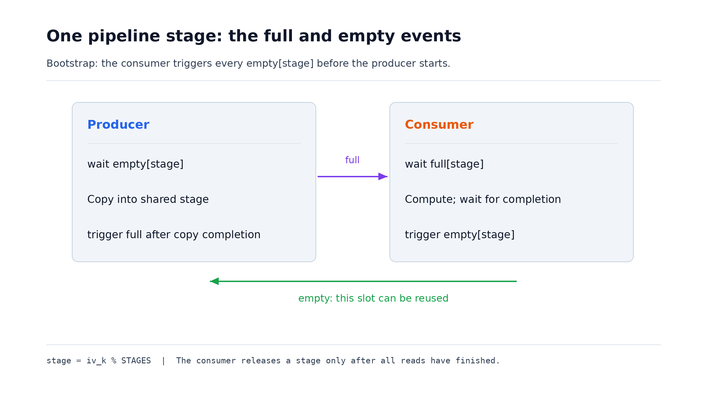
| 概念 | 原语 | 何时使用 |
|---|---|---|
| 谓词执行 | if |
数据相关的判断（边界、条件） |
| 结构化并发 | inthreads.async |
编译时划分线程（生产者／消费者、异构角色） |
| 区域间通信 | shared event / wait / trigger |
并发区域之间的协调 |
| 主机并发 | parallel.async / stream s |
多核函数重叠、非阻塞启动 |
| 持久调度 | if + foreach + # |
固定网格规模、带填充守卫的分块条带化 |
完整流水线为前面的骨架补上两项依赖：计算前输入必须就绪，复用槽位前操作数必须用完。修改流水线时，可以沿一个槽位追踪完整周期，再追踪下一次复用。与只看某一侧循环相比，这样更容易发现缺失信号和迭代次数不匹配。
| 模式 | 所用原语 | 何时使用 |
|---|---|---|
swap 双缓冲 |
dma.any、swap |
单线程组交错执行装载与计算 |
| 事件流水线 | inthreads.async、事件 |
生产者与消费者分别推进 |
一个组同时控制搬运调度和计算时，可以通过句柄轮换组织缓冲。分离的生产者与消费者需要事件，因为任一侧都无法仅凭自身指令顺序判断另一侧进度。增加缓冲区可以为重叠执行提供空间，却无法修复缺失的依赖。
更深的流水线则改用事件数组与 inthreads.async，底层数据搬运原语不变。
核函数可能需要归约、排序过程，或 Croqtile 没有直接表达的指令。已有设备 C++ 可以提供这部分计算，Croqtile 继续安排输入、输出和并行范围。调用接口必须保留两侧代码各自的使用约定。
Croqtile 的互操作方案由三部分组成：
__device__ 函数 —— 编译器保留原样。__cpp__#define、#if、#ifdef、#error 用于编译时配置，作用与 C/C++ 代码库中的 #define 相同。前面几节介绍了分块、并行、MMA、流水线、事件等抽象。需要额外的设备函数或目标平台代码时，可以通过本节的 C++ 互操作机制补充。
__device__ 与普通 C++ 内联代码__device__ 函数与普通 C++ 函数都会被保留原样，但二者进入不同的编译路径——这个区别很重要。
__device__ 函数编译成设备代码；__co__ 函数体用 call 关键字调用它，生成的 __global__ 核函数会在设备上直接调用。
普通 C++ 函数（没有 __device__ 或 __co__ 标注）编译成 CPU 代码，运行在主机上，负责建立缓冲区、启动核函数、打印结果。不能在 __co__ 函数体里调用主机函数。
边界很严格：__device__ 在 c++ 划分的设备侧，主机 C++ 在主机侧。__co__ 函数是桥——编译器把它变换成 __global__ 核函数（设备侧），同时生成启动它的主机侧包装。
Croqtile 的预处理比 C++ 预处理早得多。Croqtile 编译流程如下图所示：
chore-preprocessing -> croqtile compilation -> c/c++ preprocessing -> c/c++ compilationCroqtile 预处理的主要目标，是让主机和设备的宏作为一个整体生效，但这样的工作流有时会带来差异。从实现角度看，Croqtile 预处理器只对 tileflow 函数内部的代码做替换或条件编译，其余预处理留给 C++ 预处理器——这就把 Croqtile 预处理限制在了较小的范围内。
为了模仿目标平台的原生编译，Croqtile 预处理也会取用目标平台的内建宏。因此这些宏既能在 tileflow 函数里用，也能在主机代码里用。
Croqtile 代码可以调用模板函数。例如：
template<int M, int N, int K>__device__ void matmul_kernel(int *lhs, int* rhs, int* output) {}__co__ auto matmul(s32 [96, 72] lhs, s32 [72, 24] rhs) { s32 [lhs.span(0), rhs.span(1)] output; parallel p by 6 { shared s32 [output.span / #p] buffer; // shape: [16, 4] lhs_load = dma.copy lhs.chunkat(p, _) => shared; rhs_load = dma.copy rhs.chunkat(_, p) => shared; call matmul_kernel<buffer.span(0), buffer.span(1), 72>(lhs_load.data, rhs_load.data, buffer); } return output;}调用向 matmul_kernel 提供三个常量模板实参，目标编译器据此实例化对应特化，与普通 C++ 模板调用相同。
所以，在 Croqtile 中调用模板函数与 C++ 类似。但传入的模板实参必须能被 Croqtile 编译器推导为编译时常量；只要带运行时值，就会出错。
__co__ void foo(int M) { parallel p by 1 { call bar<M>(); // error: 'M' is a runtime value }}Croqtile 编译器会尽可能在编译时推导取值。若模板实参无法推导，编译将中止并报错。
和 C++ 函数一样，Croqtile 函数可以定义在源代码的任何位置。把模块和 Croqtile 函数定义链接起来时，需要确定它的函数签名。
答案是：Croqtile 函数遵循 C++ 调用约定，也就是带 C++ 名字改编的标准 C++ 函数。Croqtile 函数不能使用 extern "C"，因为它的参数类型（带形状数据）是基于 C++ 模板的对象。
还有一些特性尚未支持：
inline 的 Croqtile 函数——有了它，Croqtile 函数才能放进头文件。在 factor 这类目标上，设备函数必须遵循 C 链接，也就是函数要加 extern "C"。模板函数不能用于带 C 链接的函数，所以 Croqtile 用了一些包装技巧。例如：
__cok__ {extern "C" void bar(int v) {}; // v is a compile-time constant}__co__ void foo() { parallel p by 1 { call bar(3); }}程序员可以把 bar 改成函数模板，如下所示：
__cok__ {template <int v> void bar() {};// compiler generate a explicit function template specialization:// template<> void bar<3>() {};}__co__ void foo() { parallel p by 1 { call bar<3>(); }}正如注释所示，Croqtile 编译器可能生成函数模板 bar<3> 的特化版本，这样函数模板也能用。但要注意，这个函数模板不再需要普通 factor 设备函数所用的 extern "C"。
由于实现方式与其他目标不同，可以用 -kt 为 croqtile-factor 编译启用该功能。
__device__ 函数：与 Croqtile 一并面向目标平台自定义归约、排序网络和特殊数学运算等计算，可以通过设备辅助函数实现。
__co__ 函数可以用 call 关键字调用 __device__ 函数：
template <int K>__device__ void warp_topk(f32* vals, s32* idxs);template <typename T>__device__ __forceinline__ T SHFL_XOR(T var, int lane_mask, int width) { return __shfl_xor_sync(uint32_t(-1), var, lane_mask, width);}__co__ void moe_topk(f32 [N_TOKENS, N_EXPERTS] scores, s32 [N_TOKENS, K]& topk_ids, f32 [N_TOKENS, K]& topk_scores, int N_BLOCK) { parallel n by N_BLOCK : block { foreach m in [ |scores.span| / N_THREAD / N_BLOCK ] { shared_scores = dma.copy scores.chunkat(n#m, _) => shared; parallel gid by [N_THREAD / 32] : group parallel tid by 32 : thread { flat_scores = shared_scores.span_as([|shared_scores.span|]); score = flat_scores.at(gid # tid); local s32 [K] frag_idx{-1}; local f32 [K] frag_val{-1.0f}; frag_idx.at(0) = tid; frag_val.at(0) = score; call warp_topk<8>(frag_val, frag_idx); inthreads (tid == 0) foreach k in K { topk_ids.at(n#m, gid#k) = frag_idx.at(k); topk_scores.at(n#m, gid#k) = frag_val.at(k); } } } }}辅助函数接收指向元素存储的原始指针。因此，接口需要给出它所需的尺寸或布局约定，仅凭指针不会保留 Croqtile 形状。
SHFL_XOR 辅助函数是交给目标编译器的普通设备代码。计算中如何使用它属于辅助函数的实现，Croqtile 不会把其函数体翻译成分块操作。
语句 call group_topk<8>(...) 提供辅助函数的编译时配置和普通实参。Croqtile 将带形状数据实参转换为元素指针，由目标编译器验证生成的 C++ 调用。
区域 inthreads (tid == 0) 选择一个线程完成其中工作，结束后汇合。它没有 .async 修饰符，因此不会引入独立推进的生产者或消费者。
这种分工——Croqtile 管并行、分块和内存编排，设备函数管专门计算——在 MoE（专家混合）top-K、自定义归约和专用数学运算等生产核函数里很常见。
| 语法 | 作用 | 运行于 |
|---|---|---|
#define NAME value |
对象式宏；在 __co__ 与主机区域间共享 |
预处理器 |
#if / #ifdef / #error |
条件编译与编译时断言 | 预处理器 |
-DNAME=value |
从命令行定义宏，用于分块尺寸扫描 | 预处理器 |
call helper(...) |
调用设备辅助函数 | 设备 |
__cpp__("...") |
在当前位置插入目标 C++ | 取决于所在目标作用域 |
3.11 节转向工作流程的另一面：核函数能编译、输出却不对时该怎么办——调试、详细模式，以及一步步缩小范围。3.10 节的两个完整程序，则把互操作机制放进了具体语境。
逐条编写装入和地址计算给程序员很多选择，也让编译器需要重新识别哪些操作共同构成一次分块搬运。Croqtile 要求程序显式描述这片区域。当所需搬运能够用规则形状表示时，这项约束很有用，因为在生成各次传输之前，区域几何信息就已明确。
Croqtile 用结构化搬运操作显式描述分块形状和布局。编译器据此生成传输代码，程序员也不必为每个元素反复编写地址计算与协作逻辑。
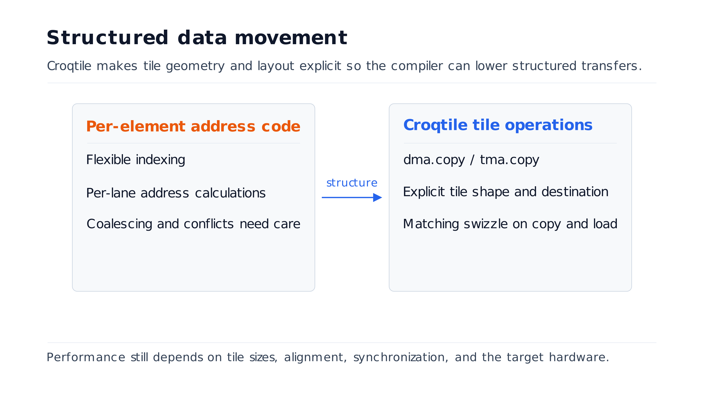
这里的取舍是用明确的分块表达替代任意的逐元素搬运代码，从而便于高效生成目标代码。实际性能仍取决于分块尺寸、对齐方式、布局和同步安排，并不由语法单独保证。
分块选择可以直接使用输入形状和有界索引。例如，改变分块数量后，派生分块尺寸随之改变，无需另行维护一套手工偏移计算。划分仍由程序员选择，语言则把这一选择带来的相关信息连接起来。
信息充分时，形状和秩检查能在执行前发现不兼容的用法。运行时检查覆盖依赖实际输入的约束，断言则可补充应用自身的要求。这些检查有助于定位失败，但不能替代输出数值验证和同步协议检查。
符号维度让一份源码表达一组输入形状。输出大小和迭代次数可以从命名维度推导，不必作为独立常量重复维护。每次调用仍需满足核函数的分块、布局和目标约束，符号形状并不意味着所有形状都能得到同样好的支持。
紧凑源码让自动调优过程能够同时保留核函数、编译诊断和测量结果。显式分块尺寸与协作范围也提供了可调整的具体选择。每个候选仍需验证正确性，并在目标负载上测量；成功编译只是其中一部分依据。
下面的示例将相同分块选择机制用于不同计算。矩阵乘法需要在 K 切片之间保留部分和，RGB 转灰度则独立处理每片图像区域。对照数据路径，可以看出哪些结构来自分块安排，哪些来自计算本身。
matmul第一个例子是设备程序上的矩阵乘法。代码展示了 Croqtile 的分块和内存管理机制如何配合起来优化矩阵运算，也包括如何借助 DMA（直接内存访问）高效搬运数据。
__co__ s32 [512, 1024] matmul(s32 [512, 1024] lhs, s32 [1024, 1024] rhs) { // Device program s32[lhs.span(0), rhs.span(1)] output; // Use same shape as lhs parallel p by 1 { with index = {m_tile, k_tile, n_tile} in [1, 1, 1] { foreach m_tile, n_tile { shared s32[512, 1024] l2_out; foreach k_tile { // Initiate DMA operations lhs_load = dma.copy.async lhs.chunkat(m_tile, k_tile) => shared; rhs_load = dma.copy.async rhs.chunkat(k_tile, n_tile) => shared; out_store_s = dma.any; parallel q by 1 { with index = {m_tile_s, k_tile_s, n_tile_s} in [4, 4, 8] { // Local buffers for tiling local s32 [128, 256] lhs_load_s_buffer_0 {0}, lhs_load_s_buffer_1 {0}; local s32 [256, 128] rhs_load_s_buffer_0 {0}, rhs_load_s_buffer_1 {0}; foreach index { // Add "after" primitive to chain up paired DMA operations lhs_load_s = dma.copy.async lhs_load.data.chunkat(m_tile_s, k_tile_s) => select(k_tile_s % 2, lhs_load_s_buffer_0, lhs_load_s_buffer_1) after lhs_load; rhs_load_s = dma.copy.async rhs_load.data.chunkat(k_tile_s, n_tile_s) => select(k_tile_s % 2, rhs_load_s_buffer_0, rhs_load_s_buffer_1) after rhs_load; out_load_s = dma.copy.async l2_out.chunkat(m_tile_s, n_tile_s) => local; wait out_load_s; // Perform the matrix multiplication (dot product) operation wait lhs_load_s, rhs_load_s; call dot_general_fp32(lhs_load_s.data, rhs_load_s.data, 256, 256, 256, 0, 8, out_load_s.data); // Store the result back to l2_out out_store_s = dma.copy.async out_load_s.data => l2_out.chunkat(m_tile_s, n_tile_s); } } } // Add "after" primitive to chain up DMA operations for the final output out_store = dma.copy.async l2_out => output.chunkat(m_tile, n_tile) after out_store_s; wait out_store; } } } } return output;}该配置的外层分块上界都是 1，因此外层暂存缓冲区容纳完整操作数。内层范围 [4, 4, 8] 划分 M、K 和 N：左分块为 [128, 256]，右分块为 [256, 128]，乘积贡献给 [128, 128] 的输出分块。after 子句使内层输入复制在外层复制之后开始。这段清单用于展示结构；作为可运行核函数使用前，必须补齐并检查辅助函数定义、操作数使用与缓冲区复用前的完整等待，以及输出初始化。
chunkat 做内存分块矩阵乘法示例里，内存分块是用 chunkat 方法做的：它把输入矩阵 lhs（左操作数）和 rhs（右操作数）切成更小的块，方便并行处理。
lhs 与 rhs 矩阵用 chunkat 方法分块，分块由 m_tile、k_tile、n_tile 定义，分别对应乘法涉及矩阵的不同维度。两个矩阵的分块都用 dma.copy.async 异步装入（lhs_load 和 rhs_load）。这个操作把矩阵的一部分从源缓冲区搬进暂存缓冲区，是大型矩阵运算里改善数据局部性的常见优化。
变量 m_tile、k_tile、n_tile 是有界变量，定义在 parallel-by 和 with-in 构造的上下文中，这些构造确定了分块的迭代空间。
第二个例子是 RGB 转灰度算法：用加权平均把彩色 RGB 图像变成灰度图像。它展示了物理并行和虚拟并行如何协同工作。
__co__ auto rgb2gray(f32 [N, 3, H, W] input) { f32 [N, H, W] out; parallel q by 6 { with index={n, h, w} in [N, H, W]/{#q, 16, 512} { foreach n, h, w { // _ means no tiling input_L1_A = dma.copy input.chunkat(q#n, _, h, w) => local; dims : input_L1_A.span[(0), (2), (3)]; local f32 [dims] out_L1; call rgb2gray_kernel_fp32_fp32(input_L1_A.data, out_L1, |out_L1|, 1); dma.copy out_L1 => out.chunkat(q#n, h, w); } } } return out;}输入形状为 [N, 3, H, W]，第二维包含三个颜色通道。chunkat(q#n, _, h, w) 中的下划线保持这些通道完整，同时选择一幅图像中的空间区域。从装入形状中去掉通道维，就得到 out_L1 的形状，辅助函数为每个空间位置写入一个灰度值。
组合索引 q # n 为六个并行实例分别分配一组连续图像。这种规则划分假定 N 能被 6 整除，H 能被 16 整除，W 能被 512 整除。满足这些条件时，每个输入分块包含一个 16 × 512 区域的全部三个通道，最后的复制将灰度结果写入对应输出分块。其他图像尺寸需要明确的边界处理方式。
调试的基本方法是逐步缩小问题范围。先做静态分析和编译时断言，在不增加运行时开销的情况下发现错误；再用有针对性的运行时检查定位问题；范围缩小后，按需使用交互式调试器深入检查。
Croqtile 在每一层都有工具：编译时形状打印（print!、println!），不用启动核函数就能核对分块尺寸；运行时断言（assert），用来检查不变式；带守卫的设备 println，在运行时查看特定线程；给 debugger 用的调试 RTTI；以及查看编译器实际执行步骤的详细模式（-v）。
先使用容易计算参考结果的小输入。矩阵某个元素错误时，还原它的分块坐标和块内坐标，检查选中的输入切片，再比较一个部分和，最后才看完整输出。程序挂起时，则追踪一个事件槽位，记录初始状态、每次触发以及应消费该事件的实例。这样可以区分索引错误与交接缺失。
若失败发生在编译阶段，先确定阶段再修改核函数。预处理输出显示宏展开结果，生成源码显示 Croqtile 的翻译，详细输出则给出目标编译命令。修复后，关闭诊断输出，再次与参考结果比较，然后测量性能。第 1.4 和 2.14 节给出对应命令与检视语法。
附录 A 集中列出语法。关于语言背后的编译器设计，见[参考文献]。
构造按阅读顺序分组：先是声明，然后是迭代、分块选择与数据搬运，再是语句、协调与诊断。第 3 章说明每个构造的含义及其设计依据；本附录的用途是查写法，无需重读示例。
| 构造 | 含义 |
|---|---|
__co__ T [shape] f(T [shape] a) |
带形状参数的 Croqtile 函数。 |
__co__ void / __co__ auto |
就地结果 / 推导返回类型。 |
T [a.span] b; |
复制形状的缓冲区。 |
a.span / a.span(i) |
整体形状 / 单个维度。 |
x : [7, 8] |
具名 mdspan 声明。 |
a = {1, 2, 3} |
ituple 声明。 |
tensor.at(i, j) |
位置访问。 |
| 构造 | 含义 |
|---|---|
parallel p by N / parallel p, q by [M, N] |
相互独立的实例。 |
: block / : thread / : group |
并行轴上的标注。 |
foreach idx in [N] / foreach t(1:) |
有序迭代 / 切片迭代。 |
with idx in [a, b] |
有作用域的索引绑定。 |
p # m / #p |
组合索引 / 轴范围。 |
cdiv(a, b) |
向上取整除法。 |
| 构造 | 含义 |
|---|---|
f = dma.copy src => shared |
分块搬运语句。 |
a.chunkat(t) |
|
a.subspan(M, K).at(i, j) |
显式范围与分块坐标。 |
a.subspan(M, K).step(sM, sK).at(i, j) |
跨步分块选择。 |
a.view(M, N).from(r, c) |
带显式元素偏移的窗口。 |
a.span_as([dims]) |
不搬运数据的形状重解释。 |
f.data / f.span / dma.any |
已搬运分块 / 其形状 / 占位句柄。 |
.async / wait f / swap / rotate |
异步传输与句柄轮转。 |
global / shared / local |
存储说明符。 |
| 构造 | 含义 |
|---|---|
dma.transp<...> / dma.pad<...> |
搬运时变换。 |
.zfill / .swiz<N> |
填充与布局修饰符。 |
mc = mma.fill 0.0 |
累加器清零。 |
ma = mma.load src.chunkat(...) |
装入操作数。 |
mma.row.row mc, ma, mb |
带布局约定的收缩。 |
mma.store mc, dst |
写回累加器。 |
.sp / .scale / mma.scale |
收缩变体与阶段栅栏。 |
| 构造 | 含义 |
|---|---|
if (expr) ... |
运行时谓词。 |
inthreads.async (cond) / inthreads (cond) |
并发区域 / 顺序过滤。 |
shared event e[N] / trigger e / wait e |
同步令牌。 |
parallel.async ... / stream s / yield |
主机调度与提前返回。 |
__device__ fn() / call fn(args) |
互操作的 C++ 函数及其调用。 |
__cpp__("...") / __cpp__(R"(...)") |
注入的源文本。 |
#define / #if / #ifdef / #error / -D |
预处理器。 |
print! / println! / print / println |
编译时输出与运行时输出。 |
assert / croq_assert |
设备侧与主机侧断言。 |
若要了解构造背后的含义，请回到引入它的小节：初次阅读见第 2 章，设计依据见第 3 章。若要在完整程序中观察某个构造，可从 3.4.1、3.6.1 与 3.8.5 节的示例核函数开始。
英文术语与中文译名对照。
| English | 中文 |
|---|---|
| kernel | 核函数 |
| tile / tiling | 分块 |
| data movement | 数据搬运 |
| zero-cost abstraction | 零开销抽象 |
| cooperative group | 协作组 |
| source-to-source compiler | 源到源编译器 |